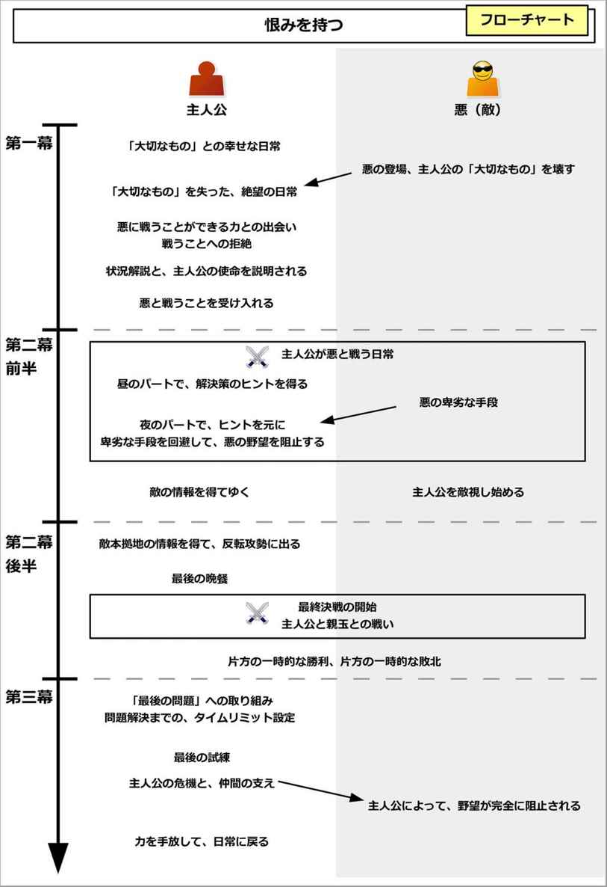
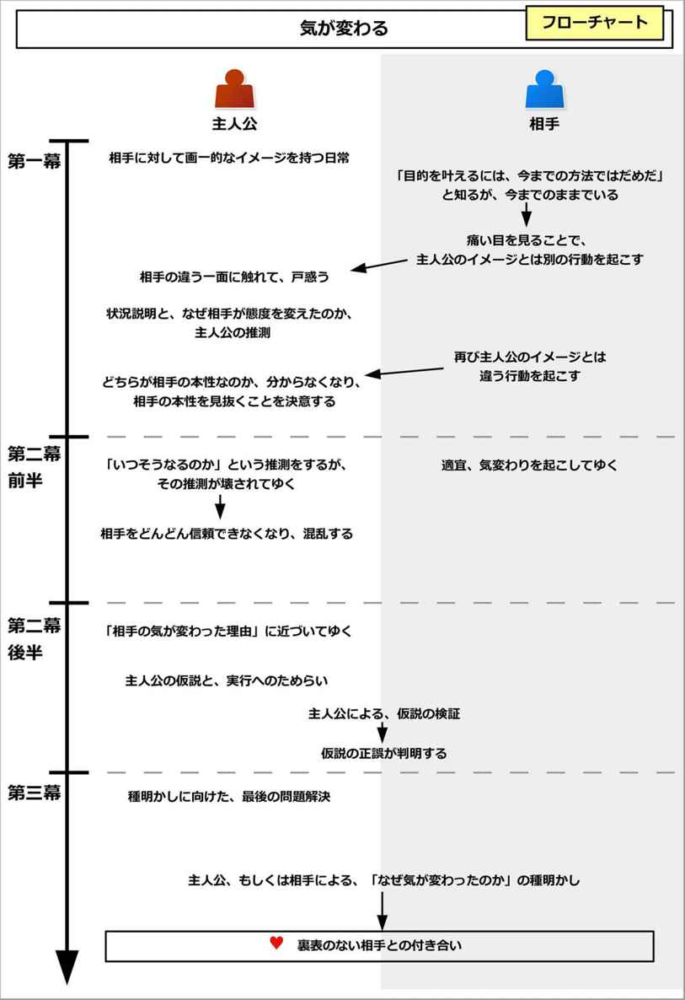

| ストーリー作家のネタ帳 イベント編１―キャラクターの王道プロット15種 | |
| 中村あやえもん | |
| Ayaemo Kenkyujo (2015) | |
ストーリー作家のネタ帳 イベント編１
―キャラクターの王道プロット15種
中村あやえもん
Copyright © 2015-2016 Ayaemo Research Institute. All rights reserved. Including the right to reproduce this book or portions thereof, in any form. No part of this text may be reproduced in any form without the express written permission of the author.
Version 2016.2.14
この本は、ストーリーライティングに関わる方のために、「王道プロット」をまとめた参考資料集です。
本書はそのような、シナリオライターや小説家、漫画家、脚本家などのストーリー作家を対象として、物語を作る上でのインスピレーションを得られる、イベント（出来事）のネタと、そのプロットの作り方を記しています。
なお、本書の対象者は、ストーリーライティングの中～上級者です。既に物語を何作も完成されている方で、ネタやインスピレーションを必要とする方向けの内容になっていますので、ご注意ください。
この巻では主に、キャラクターを元に作るイベントについて触れています。
「どうしよう、アイデアが思い浮かばない......」
「ああ、どれも今まで使ったことあるネタばっかりだ。何か新鮮なアイデアはないかな......」
「ネタが思いつかない。どうしよう」
「この場面でちょっとした出来事やイベントが欲しいけど、何かいいインスピレーションはないかなぁ......」
物語を書いている人にとって、このように悩むことは多いのではないでしょうか。
思いつくのは、今まで作ったことがあるものばかり。
すると、ネタを探すために他の作品を大量に見るようになるものです。
作品を仕上げるまでに十分な時間がある場合は、それでもいいでしょう。
しかし、〆切に迫られていたり、執筆ペースを上げたい場合、他の作品を一つ一つ見るほどの時間などないことがほとんどでしょう。
小説を読むのにも時間がかかりますし、映画を一本見るのにも二時間かかります。漫画だって時間がかかるものです。
わざわざ時間をかけて見たのに、使えそうなネタがなかったりしたら、それこそ時間の無駄だったように感じるものです。
実際に、手軽に「使えそうなインスピレーション」を得ることなど、なかなかないものです。
「ネタがすぐに思い浮かぶ、そういうアイデアが凝縮されたネタ帳みたいなものがあればいいのに！」
「新たなインスピレーションがすぐに得られる、そんなアイデア帳があればいいのに！」
「ついでに自分なりのオリジナル作品として仕上げられるような、そんな作り方もあればいいのに！」
作家さんが持つそんな悩みを解決するために、本書を作りました。
この「ストーリー作家のネタ帳」シリーズでは、物語を発想するためのありとあらゆる「基本的なネタ」、すなわち「王道プロット」を、様々な分野に分けて記述しています。
そして、そのプロットの作り方も説明しています。
本書のネタは、世界観とキャラクター、ロケーションに縛られない、使いやすい形式になっています。
そのため、世界観とキャラクター、ロケーションさえ別途用意できていれば、本書のアイデアから適当にピックアップして利用することで、様々なプロットを作れるようになるでしょう。
また、本書ではある程度普遍的な抽象度で記しています。
世界観やキャラクターが異なれば、大きく見た目は変化する性質を持っています。そのため、他の作家とのネタかぶりを気にすることもありません。
そして、本書では基本的に、アイデアを「追加する」というアプローチで説明しています。
これによって、他の設定や出来事との矛盾を極力避けることができます。
このように、つじつま合わせで苦しむことがないように配慮しているので、安心して、どんどんネタを追加できるでしょう。
作家にとっては、なかなか「今まで使ったことがないアイデア」というのは、思いつきにくいものです。
ですが、そこで本書のネタを参考に使うことで、様々な「新しい次の一手」を導き出すことができるでしょう。
この世界には幾億もの物語があるようでいて、実は物語とは、基本的な要素の組み合わせでしかありません。
その組み合わせのバリエーションが無限にあるので多種多様に見えますが、実は物語を作る上での「アイデア」とは、極めて限られたものなのです。
本書では、「幾億もの物語を導き出す、代表的なイベント」に絞って説明しています。
別途用意したキャラクターと世界観、そして本書の内容を組み合わせるだけでも、多種多様なプロットを作れます。
そのため、この一冊だけでも、何十冊という物語を導き出せるほどのアイデアを得られるでしょう。
なお、本書の内容は中～上級者のストーリー作家向けとなっています。
既に物語を何作も完成されている方で、ネタやインスピレーションを必要とする方向けの内容です。
まだ数えるほどしか完成させていないような方や、入門者の方には向かない内容です。
また、つじつま合わせが必要ない形式にしているとはいえ、ある程度のつじつま合わせのスキルや、ストーリー構築力も必要になります。
その辺りをご注意ください。
ですが、物語を既に何作も作っている方で、ネタにお困りの方であれば、本書は力強いアイデアの味方になってくれることでしょう。
それによって、どんどんと新たな展開を引き出し、新鮮な物語を、ネタに困ることなく、楽しく書き続けてくださればと思います。
本書が少しでも、貴方が紡ぎ出す物語の一助になれれば幸いです。
二〇一五年三月十九日 中村あやえもん
本書では、「イベント」に絞って説明しています。
世界観とキャラクター、ロケーションについては、事前に別途ご用意ください。
本書のイベント項目は、全て独立した構成になっています。そのため、どの項目から読み始めてもらっても構いません。
最初から順番に読んでいっても構いませんし、「目次や巻末の解説付き目次を元に、よさそうな項目を選び、辞書のように使う」もしくは「パラパラとめくって、適当に開いたページからアイデアを得る」といった用途も可能です。
必要に応じて、目次や巻末の解説付き目次、ページフリップ機能などを利用して、適当な場所にジャンプしながら見るとよいでしょう。
もしくは、作りたいビジョンが既にある場合、項目名から合致しそうなイベントを見つけ出し、構造作りの参考にするとよいでしょう。
本書では、説明の便宜上、「そのイベントで中心になるキャラ」を「主人公」と表記しています。
たとえ他に主人公と呼ぶにふさわしい人物がいたとしても、その場面で中心となる人物を「主人公」としています。
そのため、便宜的に「主人公」と表記しているだけで、別のキャラがそれを担うこともできます。
柔軟に、そのイベントを行うキャラクターを変えるとよいでしょう。
また、本書では、「主人公」と恋愛する相手を「恋人役」と表記します。
「恋人」と「恋人役」は異なるものであることに注意しましょう。「恋人役」は、たとえ物語中ではまだ主人公と結ばれていなくても、まだ友人関係の段階で恋人同士になっていなくても、「恋人役」と表記します。
「恋人役」は、「ヒロイン」（「主人公の恋人」の意）と同じものを指す、ということです。
第一幕で、主人公に力や知恵を与える役割のキャラクターを「メンター（師）」と呼びます。
主人公と対立する役割のキャラクターを、「シャドウ（影）」と呼びます。
主人公に対して、変化のきっかけを与えるキャラクターのことを、「トリックスター」と呼びます。
なお、主人公は複数人にすることも可能です。「主人公と恋人役」や「主人公が属する組織やチーム」という形にすることも可能です。
「主人公」と表記していても、複数人グループとして置き換えても扱える、ということです。
それによって、グループ単位や勢力同士での関係性やイベントを作ることも可能になります。
本書では、「恋愛物語に使われやすい」とか、「サスペンスに用いられやすい」などと解説をしていますが、これはただの傾向であって、ジャンルに縛られることはありません。
基本的に、本書で説明しているイベントは、どんなジャンルにも適用することができます。
同様に、「メインプロットに向いている」というイベントでも、場つなぎとして用いることは十分にできます。そして「場つなぎに向いている」というイベントでも、長編のメインプロットに使うこともできます。
そのように、本書で示しているイベントは、物語のテーマとなるような大きなものから、場つなぎのワンシーンで簡単に使うような小さなものまで、規模は柔軟に対応可能です。
なので、ジャンルや傾向などの注記は、参考程度にするとよいでしょう。
また、本書で示している展開の流れは、あくまで「基本形」です。
必要に応じて、適宜流れを調整するなり、修正するなりしてご利用ください。
「メリットがないのに優しくする」は、主人公にはメリットがないのに、相手に優しく接することで起こるイベントである。
主人公はある日、傷つき苦しんでいる相手と出会い、助けて、日常的に世話をするようになる。
一方の相手は厄介者であったりお尋ね者であることが多く、主人公の善意を踏みにじったり、逆にわがままや贅沢を言い出したりするだろう。
しかし相手も主人公の優しさに触れて、互いに絆を深めてゆくことになる。
クライマックスでは、ずっと助けられていた側の相手が、危機に陥った主人公を、身を挺して助けるだろう。
そして別れが訪れて、元の日常に戻る流れになる。
このイベントは「コメディから入り、感動で終わる」の典型パターンで、老若男女問わず幅広く受け入れられやすいイベントである。
ただし最後に別れることになるため、完全なハッピーエンドにはなりにくい。
このイベントの概要図と流れ図を、それぞれ以下に示す。
このイベントを構成するためには、以下の内容を考えるとよい。
以下で、それぞれについて詳しく説明しよう。
まずは、「別れる運命のキャラ」と「別れる理由」を考えて、追加しよう。
よく用いられるのが、「親戚の子」を預かることだろう。問題児だからと主人公の元に預けられたり、都会が合わないからと田舎に住んでいる主人公に預けられたり、中学の三年間や、家族旅行の関係で、一時的に預けられるかもしれない。
他にも、見知らぬ子だったり、老人だったり、犯罪者だったり、ヤクザだったりすることもある。
彼らは家出をしたり、自殺をしようとしていたり、指名手配されていたり、他のヤクザに追われているかもしれない。
また、恋愛物語では「囚われの姫君」や「プライベートが全くないお姫様」などのモチーフが多く用いられる。
彼らは「元の家に戻る」とか、「警察に自首する」、「ヤクザ仲間の元に戻る」などの別れる理由が作れるだろう。
他にもよく用いられるのが、怪我をした猫や鳥である。ファンタジーの世界観では、「怪我をした、身近で可愛い動物」という設定が用いられやすい。
それらの動物には、「野生で生きる方が幸せ」、「野生でしか生きられない」というような、別れる理由を設定できるだろう。
また、「一時的に預かることになった生物」もある。友人知人が旅行に行くため、犬や猫などの動物を預かるかもしれない。
であれば、彼らには戻るべき場所があるものだ。
そして彼らに、「目に見えて分かる苦しみや哀しみ」を与えよう。
典型的なのが、怪我をさせることだろう。もしくは、目に見えて落ち込んでいたり、家族とうまくいっていないことが直感で分かったり、泣いた痕があったり、あるいは腹を空かせているかもしれない。
すると、主人公は相手と接点を持てて、自然と優しくすることができるようになる。
これは、誰かから強引に引き渡される場合は不要ではあるが、あった方がより主人公と相手との接点を強められる。
このようにして、「別れる運命のキャラ」と「別れる理由」、「目に見えて分かる苦しみや哀しみ」を作ることで、このイベントが構成できるようになる。
それでは実際に、このイベントの流れを見てゆこう。
イベント冒頭では、主人公は何らかの「一人では解決できない問題」を抱えていることだろう。そして、その問題に頭を悩ませている。
これが、クライマックスで相手から助けてもらうための、前振りとなる。この問題の内容や作り方は、後述する。
そんなある日、主人公は、ひょんなことからその相手と出会うことになる。
それは、ただの偶然でよい。登下校中でも、会社からの帰宅途中でも、道に迷ったついででもよい。
そこで、傷つき、苦しんでいる相手を見つけることだろう。
誰かから依頼される場合は、突然訪れるなり、「事前に通告されていたが忘れていた」という形で、唐突に引き渡されるだろう。
「囚われの姫君」というモチーフが用いられる場合、主人公は忍び入った城などで、囚われて泣いている姫を偶然見つけることになる。
ここでは例として、遠縁の子を引き取る主人公の話で具体的に説明しよう。
主人公はいい年をした大人だが、田舎で仕事をしながら、一人暮らしをしているとする。
そんな主人公が、親類に強引に頼まれて、遠縁の子を夏休みの間だけ預かることになる。
事情を聞くと、その子は手がつけられない悪ガキだったり、人とは一切打ち解けようとはしない問題児だろう。「都会ではのびのびとできないので、田舎で暮らせば変わるかもしれない」、ということで主人公に白羽の矢が立ったとする。
主人公は拒絶するが、脅されるなどすることで、強引に押し切られてしまうのだ。
多くの場合、相手は怪我をしていたり傷ついていて、気が立っていて、誰にも打ち解けようとはしない状態だろう。目に見える傷がない場合、「泣きはらした目」や「涙の痕」などで象徴されることが多い。
主人公が手をさしのべても、威嚇して逃げようとするだろう。
しかし主人公は、そんな相手の態度よりも、「目に見えて分かる苦しみや哀しみ」を気にかけるものだ。
「傷ついた相手を放っておけない」という優しさから、相手を捕まえて、とりあえずの手当てをするだろう。
「囚われの姫君」というモチーフが用いられる場合、主人公は姫の手を引き、厳しい両親が支配しているお城から連れ出すだろう。
場合によっては、主人公に無理矢理「世話をしろ」と押しつけられることもある。誰かから引き渡される場合もあるし、相手が犯罪者などの場合は、主人公に銃や刃物を突きつけて「しばらくかくまえ」などと脅すかもしれない。
それでも主人公は、引き受けるか受けないかはさておき、「まずは傷の手当てだろう」と、冷静に対処することだろう。
相手が持つ深い傷を知ってしまうと、主人公は自然と助けたくなるものなのだ。
遠縁の子を預かる例で見てみると、預かることになった当日、その子は主人公とは異性の子だと判明するだろう。主人公が女性の場合、男の子になり、主人公が男性の場合、女の子になるとする。どちらでもよいが、ここでは主人公が大人の青年で、引き取る子を小さな女の子だとしよう。
ここから、その子の「傷」を演出してゆくことになる。この場合、傷が見つけにくいので、いくつかステップを踏んで傷を演出してゆく。
その子は主人公と出会うやいなや、主人公に泥を投げつけたりするなどの、ひどいことをして、その場から逃げ出すだろう。
夕方になり、ようやく主人公が見つけ出すと、その子は河原で、ひとりぼっちで泣いているかもしれない。
主人公が優しく声をかけると、その子は「みんな、大嫌いだ。どうせ自分は、邪魔者でしかないんだ」と語るかもしれない。
そうして主人公は、その子が抱える深い傷を知ることになる。
「あんたも同じだ、大嫌いだ」と言う子に、主人公は「とりあえず、帰って夕飯でも食べよう」と、冷静に対処するだろう。
どれだけ辛辣な言葉を向けられたとしても、相手の深い傷を知った主人公は、自然と助けたくなるものなのだ。
主人公は、とりあえず自分の住処や、安全な隠れ家に相手をかくまい、簡単な手当てをするだろう。
だいたいの事情が予想できる場合、主人公は何も訊かないだろう。
そうでない場合でも、主人公は相手に事情を聞くかもしれないが、相手は答えないものだ。
そうしていると、ここで片方がその状況を気に入り、もう片方が拒絶することになる。
相手が気に入る場合、相手はその住処や隠れ家を気に入り、「ここが気に入った」とか、「しばらくかくまえ」などと提案することだろう。
当然、主人公は拒絶するものだ。助けたのは一時の良心によるもので、ほとんどの場合、面倒ごとを抱えるつもりはないのだから。
主人公が気に入る場合、主人公は積極的に「ここにいなさい」と勧めるだろう。
その場合、相手が「ここまでお世話になって、これ以上は迷惑になります」などと断ることになる。
どちらにせよ、片方がその場に居続けることを勧めて、もう片方が拒絶することになる。
遠縁の子を預かる例で言うと、その子に暖かい夕飯でも与えて、落ち着かせるだろう。
すると、意外とその子は落ち着いて、主人公の家を気に入るものだ。
「ここが気に入った」という子に対して、主人公は、その子を預かる心づもりなどできてはいないものだ。
助けたのは一時の良心であり、長期的に助けることは、主人公にとっては負担でしかない。
ここで一度、主人公を取り巻く状況と、解決すべき問題を整理して読み手に説明することになる。主人公が友人などの第三者に事情を語ることで、読み手に説明されることも多い。
主人公は良心から厄介者に関わってしまったこと、相手を助けても、何一つメリットはないこと。逆に、デメリットしかないこと。
むしろ、相手には「帰るべき場所」があるので、主人公とはいつかは別れなければならないこと。
情を移せば、逆につらくなるだけだということ。
それらを客観的に示すことで、一緒にいることを拒絶している側は、深くは関わろうとはしないだろう。
しかし、主人公が拒絶する場合、相手は出ていこうとはしないものだ。
また、主人公は相手を警察に突き出すこともできなくなるだろう。
相手がヤクザの場合、「変な真似をすれば殺す」などと言うかもしれない。相手が家出少年の場合、「警察に言ったら、あんたが誘拐したと言ってやる」などと脅されるだろう。主人公が男性で、相手が女性の場合、「一度助けたのなら、最後まで面倒を見なさい」と無理難題を言ったり、「そうでないと、悲鳴を上げて助けを呼ぶ」などと脅迫するかもしれない。
こうして相手は、勝手に主人公の領域へと入ってきて、居座ることになる。
一方で、主人公が積極的に相手を引き留める場合、立場を逆にするとよい。主人公が「いてくれないと、こうしてやる」などと脅すことで、相手は渋々その場に居続けることになる。
遠縁の子を預かる例で言うと、主人公は親類に対して、主人公の事情を説明するだろう。その会話を通して、読み手に状況を示す。
主人公は親類の子を預かることになったこと。主人公には何一つメリットはなく、デメリットしかないこと。
また、胸の内では「いつか別れることになる」、「情を移せば、別れがつらくなるだけ」などと、思うかもしれない。
だが、親類は聞く耳を持たないものだ。
こうして主人公は、突然「厄介者」に居座られることで、途方に暮れることになる。
ここで、何らかのきっかけがあることで、両者は共同生活を受け入れることになる。
主人公が拒絶する場合、相手という厄介者に居座られることで、主人公は次第に頭を抱えるようになるものだ。
というのも、最初こそ借りてきた猫のようにおとなしかった相手が、次第にわがままや贅沢を言い始めて、主人公を悩ませるのだ。
相手を助けても、金や時間、労力を浪費するだけで、主人公には何らメリットはない。主人公にとっては迷惑になるだけで、デメリットしかないのだ。
嫌々引き受けた場合でも、最初は優しさから引き受けた場合でも、主人公はストレスを溜めてゆくだろう。
しかし、やはり主人公にも我慢の限界があるというものだ。
ここで何らかのきっかけがあり、主人公は我慢しきれなくなる。
それは、大切なものを壊されたり、大切な人間関係を壊されたり、大切な行事を台無しにされたりするなどの、「我慢しきれない出来事」として引き起こされることだろう。
そしてついに堪忍袋の緒が切れて、主人公は相手に強く言うことになる。
すると、相手は切なそうな一面を見せるだろう。そして、驚くほど素直に謝り、自ら出て行こうとするだろう。
相手は、行く先などないかもしれない。主人公から見放されれば、後はのたれ死ぬしか道はないかもしれない。
相手は、自分の命や未来が主人公次第であることを、しっかりとわきまえていたのだ。その上で、自分の命よりも、主人公の平穏を大切にしようとしているのだ。
その思いを知った主人公は、「しょうがない」と考えを改めて、怒りを撤回して、相手を引き戻すことになる。
相手が拒絶する場合、立場を逆にして、相手が「これ以上の優しさは我慢できない」とするとよい。
相手が我慢の限界を超えて出ていこうとするが、主人公から素直に謝られることになる。
同時に主人公は、相手がいることで、救われている一面があることを伝えるだろう。
相手がいてくれることで、寂しさを紛らわせることができるかもしれない。喜びを感じることができているかもしれない。
そのように、「主人公にも、相手と一緒にいるメリットがある」と示すことで、相手はその場に居続けることを受け入れるのだ。
拒絶している側は、二人は近いうちに別れることになると、分かっている。
愛情を与えたって、無駄になることは分かりきっている。むしろ同情などすれば、つらい思いをすることになるのは簡単に予想できるだろう。二人が絆を結ぶには、結果として哀しい未来しか訪れないことが明白なのだ。
それでも、二人はあえて、共同生活を受け入れることになる。
こうして主人公は、「メリットがないのに優しくすること」という問題を抱えることになる。
遠縁の子を預かる例で言うと、主人公は預かった子に対して、頭を抱えるようになるだろう。
その子は最初こそおとなしく過ごしていたかもしれないが、次第にわがままを言い始めて、好き放題し始めるのだ。
主人公の平穏な日常を壊し、やっかいごとを引き起こし、近所に迷惑をかけて、仕事も集中できなくなるだろう。
そんなあるとき、ついに堪忍袋の緒が切れることになる。
主人公は、大切にしていた思い出のものを壊されるかもしれない。二度と戻らないそれに対して、哀しみ、本気で怒るだろう。
すると、その子は切なそうな顔をして、素直に謝るだろう。
主人公が怒りにまかせて出て行った後、しばらくして戻ってみると、その子は既に、家にはいないだろう。
そこには、その子が何よりも大切にしていたものが、わび代わりに残されているかもしれない。
そして主人公は気づくのだ。あの子は、ここ以外には行く場所などないことを。その上で、自分の命よりも、主人公の平穏を大切にしようとしたことを。
主人公は家から飛び出して、その子を必死で探すだろう。「まだ遠くには行っていない」と、見つけ出すことを祈りながら。
そしてついに、その子を見つけ出すだろう。
その子は、寂しそうにしているかもしれない。場合によっては泣いているかもしれないし、何らかのトラブルを抱えて絶体絶命の状態かもしれない。
主人公はとっさにその子を助けて、ため息をつくだろう。
主人公はその子の心の底にある優しさを知り、本当は誰よりも優しい子なんだと分かる。
愛情を与えても、同情をしても、いつかは別れることが決まっている。だが、それでも共同生活をすることを受け入れるのだ。
こうして、「一緒に暮らそう」と、共同生活を受け入れることになる。
そして、主人公と相手との共同生活が始まる。
最初は新たに始まった共同生活の日常を通して、互いの性格や性質について、少しずつ知ってゆくだろう。
相手は主人公の生活を知り、今まで経験したことがないような楽しみを味わうだろう。
相手が上流階級の場合、一般市民のジャンクフードを味わい、「これを食べるのが念願だった」などと感激するかもしれない。逆に相手が貧しい人の場合、豊かな主人公の生活に感動するだろう。相手が都会人の場合は田舎の雄大さを楽しみ、田舎から出てきたなら、都会の刺激を楽しむだろう。
そんな相手の喜ぶ姿が、主人公の喜びとなるのだ。
遠縁の子を預かる例で言うと、主人公はその子と交流を深めてゆくだろう。
主人公の生活を教え、この家のルールと、田舎暮らしのマナーについて教えるだろう。
その子は素直に受け入れ、今まで味わったことがないような、豊かな遊びや食べ物、人間関係に感激するだろう。
近所の大人たちに可愛がられるかもしれないし、よき友達もできるかもしれない。
そんな喜ぶ姿が、主人公の喜びとなる。
互いが持つ優しさを知った主人公と相手は、次第に打ち解けてゆくだろう。
ここから相手は強がりながらも、主人公を思いやる一面を見せてゆく。
相手は主人公にとっての「して欲しくない一線」を必ず守るだろう。時にこっそりと気づかないように、主人公が喜ぶような手伝いをするかもしれない。
主人公もまた、わがままを言う相手を適度にあしらいながらも、本当に必要としているものはしっかりと与えるだろう。
そして、相手にとっての「触れて欲しくないこと」には絶対に触れずに、事情を追求することもしないだろう。
主人公や相手に、いくつかの試練が訪れるかもしれない。
主人公に対する試練の場合、相手が手助けをしてくれることで、主人公は乗り越えられるだろう。
主人公が落ち込めば、相手は主人公をさりげなく支えるかもしれない。主人公が悩めば、「主人公のためではない」と強がりながらも、必死で手伝うだろう。主人公が喜べば、陰で一緒に喜ぶだろう。
同じように、相手に対する試練の場合、主人公が相手のプライドを守るような形で、陰から手助けをして、乗り越えるだろう。
こうして両者は、何も知らない間柄なのに、深い絆で結ばれてゆくことになる。
長編にしたい場合、ここは必要に応じて別のサブプロットを用いて構築するとよい。
その場合、主人公たちに味方をする仲間とのふれあいがあるだろう。また、主人公や相手を狙う敵が明確になってゆくだろう。
遠縁の子を預かる例で言うと、いろんな出来事や行事があるたびに、主人公とその子は少しずつ絆を深めてゆくことになる。
一緒に川に泳ぎに行くかもしれないし、山にちょっとした冒険に出るかもしれない。地元の夏祭りに参加するかもしれない。
そこで、様々な困難や問題が起こるものだ。
主人公が困ったときは、その子はこっそりと主人公を助けようとするだろう。主人公が素直に感謝すると、「あんたのためにやったわけじゃない」などと強がるかもしれない。だがその喜びは、その子の態度に大いに表れていることだろう。主人公が喜べば、その子も陰で喜び、大きな満足感や達成感を味わっているだろう。
主人公も同様に、その子に襲いかかる問題や脅威から、その子を助けるだろう。
その子は確かにやんちゃ盛りかもしれないが、主人公が「して欲しくないこと」の一線は、必ず守るものだ。
同じように、主人公も表面的にはその子を厄介者扱いするかもしれない。だがその子が本当に求めているような、食べ物や安全、愛情、自尊心、夢などは、大切に守り、与えてゆくだろう。
二人は、家族でも何でもない。相手の事情すら知らない。そんな何も知らない関係なのに、誰よりも深い絆を結んでゆくことになる。
なお、クライマックスの前振りとして、ここで「相手が絶対にしようとしないこと」に触れておくとよい。
これは、「主人公への脅威」から発想するとよい。
主人公に脅威があるとすると、何だろうか。そして「その脅威と戦えるのは、相手しかいない」という形にするとよい。
その脅威は、食べ物がないことや、誰かから攻撃を受けていたり、安全を脅かされることかもしれない。人から後ろ指を指されたり、組織や社会に属することが脅かされることもあるだろう。自尊心を失うこと、夢や希望を失いそうになることもあるだろう。
そこで、「主人公一人ではできないが、相手には解決できること」を作るのだ。
主人公にはないが、相手なら持っているアイテムや能力があるかもしれない。
主人公には得られないが、相手なら得られるアイテムがあるかもしれない。
主人公には通れないが、相手なら通れるような道があるかもしれない。
だがこの段階では、相手は強がったり、臆病さを持っているために、それができないことになる。
遠縁の子を預かる例で言うと、主人公は「借りている家からの立ち退きを要求される」という、潜在的な問題を抱えているとする。場合によっては、大家から「次に何かあったら、立ち退いてもらう」などと言われているかもしれない。
主人公は他に行く場所もないし、お金もないので、それだけは大いに困るだろう。
ただ、その子が持つアイテムを大家に渡せば、居続けられるようになると判明する。
しかし、その子はそのアイテムを宝物のように大切にしているので、絶対に他の人には渡そうとはしないのだ。
このようなやりとりが、クライマックスの前振りとなる。
しかし、そんな幸せも長くは続かないものだ。
「別れる運命」は、必ず訪れるのだから。
ここで主人公は、「相手との別れ」を予感することが多い。
親戚の子を預かっている場合、親からの電話や手紙があり、元に戻す日を再確認されるかもしれない。
囚われの姫君を連れ出した場合、人から「姫が誘拐された。この町に誘拐犯がいる」などと聞くかもしれない。
ヤクザや犯罪者の場合、近所の警察官から指名手配の内容を聞くかもしれない。そして、「この辺に潜伏中だ」と知るかもしれない。
それによって、物語は緊張感を高めてゆくことになる。
相手にとっては、「いるべき場所」があるものだ。
主人公の元よりも、そこにいることが、本当の意味で「相手のため」なのだから。
同時に、相手にとっても、信頼する主人公に対して、迷惑をかけていることは理解しているものだ。
結果として、両者は別れることが、互いにとって最高の幸せになる。
遠縁の子を預かる例で言うと、夏休みも終わりが見えてくるだろう。
そして、親類からの電話や手紙で、「夏休みの最終日に迎えに行く」と、連絡があるだろう。
こうして、主人公はその子との必然的な別れを知ることになる。
そして、相手の傷がほぼ完全に癒えると同時に、主人公の元にいる必要がなくなったり、引き受ける約束の期限を目前とするだろう。
それは「いるべき場所からの使者」として象徴されることが多い。
犯罪者や囚われの姫君をかくまっている場合、警察やヤクザからの追っ手が来るかもしれない。元の家族が迎えに来るかもしれない。
そして、一緒にいる必要性はなくなる。
むしろ一緒にいればいるほど、主人公は苦しむだけになってしまう。
相手もそれを分かっている。だから、主人公のためにも、相手は主人公の元を去らなければならないのだ。
ここで、別れを惜しむための、特別な場が設定されやすい。
それは、最後に「二人でいたことの思い出を残そう」ということで、特別に何か楽しい場や、心地よい場を味わうことになる。
遊園地で遊んでみたり、街中で遊んでみたり、友人たちと相手の誕生日会をしたりと、最後の幸せを精一杯味わうのだ。
二人は思う存分笑い転げ、興奮し、楽しむだろう。
遠縁の子を預かる例で言うと、ついに夏休みの終わりになり、最終日の前日を迎えることになる。
その日の夜は、近所の人たちや友人たちも交えて、豪華な料理を前にして、盛大に「お別れ会」を楽しむだろう。
主人公もその子も、歌って踊って、大いに笑い、楽しみ、心地よい時間を過ごすことになる。
最後の晩餐を終えた相手は、心地よい余韻を味わいながら、「ああ、満足した」と、自分が完全に満たされたことを示すだろう。
そしてふとした余韻の後に、相手は全ての事情を主人公に話すかもしれない。生い立ちから、傷を負って主人公に助けられるまでの過程を、包み隠さず話すだろう。
それは主人公が予想もできなかったほどの、哀しく、苦しい過去になるかもしれない。
多くの場合、主人公はただ聞いてあげるしかできないものだ。だが、全てを聞き届けて、受け入れてあげることが、相手の癒やしになるだろう。
相手が動物の場合、今まで主人公に慣れようとはしなかったのが、初めて心を許し、主人公にぴったりと寄り添うかもしれない。
そして両者は、強いつながりを感じることだろう。
遠縁の子を預かる例で言うと、お別れ会も終わり、夜も更けた頃、主人公はその子と一緒に縁側に座り、話をするだろう。
その子は、今までの自分の生い立ちや境遇を語るかもしれない。なぜ強がるようになったのか、なぜ前の家庭で嫌われるようになったのか、包み隠さずに話すだろう。
それは、主人公が予想もできなかったほどの、哀しい話になるかもしれない。その子はその家庭では、自分だけが血縁者ではないのかもしれない。幼い頃に、本当の両親を失ってしまったのかもしれない。
主人公は、ただその子の話を聞いてあげるしかできないかもしれない。しかし、全てを聞いてあげて、むせび泣きながら語るその子に寄り添ってあげることが、その子にとっての癒やしになるのだ。
こうして、二人は今までの中でも、最も強い絆で結ばれることになる。
別れは刻々と迫ってくる。ここで、別れが訪れる、明快なタイムリミットが設定されるだろう。
主人公は迫り来る期限におびえながらも、少しだけの猶予を得るだろう。
そして相手と、最後の日常を楽しむことになる。
それは、今まで相手と過ごした、同じようなささやかな日常かもしれない。場合によっては、日常のごく一部しか再現できないかもしれない。
しかし、そんなありふれた日常のかけらこそが、主人公にとっては貴重に感じられて、幸せをもたらすのだ。
場合によっては、別れを意識しすぎて、両者はぎこちない関係になってしまうかもしれない。
こうして、主人公は相手と最後の日常を過ごしてゆく。
遠縁の子を預かる例で言うと、夏休みも最終日が訪れるだろう。
その日の朝は、今までと同じような風景、同じような朝食、同じようなやりとりになるかもしれない。
しかし、その子との日常も、これが最後なのだ。
主人公はそんな最後の日常をかみしめながら、その子との日常こそが一番の幸せだったと気づくだろう。
そして別れの時がやってくる。
多くの場合、クライマックスで「主人公の危機」と「相手の自己犠牲」が演出される。
これまでは、主人公が一方的に相手を助けるばかりだった。
相手は、主人公への恩を忘れなどしない。今度は、相手が全身全霊をかけて、勇気を振り絞って、時に命を賭けてまで、主人公を助ける番だ。
主人公は潜在的な問題を抱えていたが、それが危機となって主人公を襲うことになる。
もしくは、主人公は相手を助けるために、多くの犠牲を払ってきたことだろう。
誰かから後ろ指を指されるようになったかもしれない。健康を害したかもしれない。お金がなくなったかもしれない。主人公まで狙われたり、逮捕される危険が出てきたかもしれない。
「いるべき場所からの使者」は、主人公の存在を知って、敵と判断するかもしれない。
それがしわ寄せとなって、主人公に対して致命的な危機を呼び起こす。
主人公はなす術がなく、絶望を感じるだろう。
そこで、相手が全身全霊で、主人公の危機を助けるのだ。
相手には、主人公が持たない能力やアイテムがあるものだ。
今まで出し惜しんでいたが、ここでそれを発揮することになる。そして、主人公を助けるのだ。
ひょっとすると、それは相手にとって、深い痛みを感じることかもしれない。
大切な思い出のアイテムを、手放すことになるかもしれない。弱虫なのに、勇気を出して主人公をいじめる相手に飛びかかるかもしれない。栄養のある木の実や魚を、山奥まで入り、必死で捕ってくるかもしれない。主人公の代わりに、精一杯働くかもしれない。主人公を守ったり、自ら「いるべき場所からの使者」の前に飛び出して、「主人公は俺とは関係ない、そんな奴、知らない」と突き放すかもしれない。
主人公には、それが相手にとって、どれほど勇気を必要として、優しさから動いているのかが分かるのだ。
時に相手は、自らの命を投げ出してでも、主人公を救うことがある。
こうして、相手は主人公を助けて、別れることになる。
遠縁の子を預かる例で言うと、ついに別れの時がやってくるだろう。
親戚が迎えに来て、親戚は主人公に「あの子と別れて生活して、初めて本当の家族だと知った。これからは心を入れ替えて、暖かく接しようと思う」と語るだろう。その思いは真実だと分かり、その子には「帰るべき場所」があると分かる。
またその子も、完全に心の傷が癒えて、主人公の元にいる必要はなくなるだろう。
もはや、その子が主人公の元にいる必要はない。むしろ、主人公の元に居続けることは、全ての人にとって、苦しみを生み出すだけでしかない。
主人公は、別れを受け入れざるを得ないだろう。
そんなとき、主人公に対する危機が起こるだろう。
主人公は何らかの問題を抱えて、家を立ち退かざるを得なくなるのだ。
主人公はお金もなく、新しい行き場所もなく、絶望するかもしれない。
そんなとき、その子が初めて行動して、主人公を助けるのだ。
大切にしていた思い出の品を大家に渡して、解決するだろう。
主人公は驚き、「それは大切にしていたものだろう？」と、その子を引き留めるかもしれない。しかし、その子は「ううん、いいの。これよりも大切な思い出ができたから」と、過去の思い出を手放すのだ。
また、同時にその子は今までしなかったような、勇気を必要とすることをするかもしれない。主人公を抱きしめて、「大好き」と伝えるかもしれない。
主人公にとっては、それがどれだけその子にとって、勇気を必要とするものなのかが分かるだろう。
こうして二人は深い愛情を感じながら、別れることになる。
別れた後は、普段通りの生活が始まるだろう。
しかし、主人公は優しさを胸に、今まで以上に前向きに生きられるようになっていることだろう。
遠縁の子を預かる例で言うと、別れた後は、主人公は普段通りの生活が始まるだろう。
だが、抱えていた問題は全て解決していて、あの子とのつながりを感じて、今まで以上に優しく生きられるようになっているのだ。
このイベントは、メインプロットとして用いる場合、どうしても最後に別れが訪れるため、完全なハッピーエンドにはしにくい。
特に、相手が命を賭けて主人公を助けた場合、演出的には盛り上がるが、別れの後では切なさが残るものだ。
そんな場合は、スタッフロールの後に、オマケ的に再会がされる場合がある。
その再会方法には、「一瞬だけ再会して納得する」か、「完全に再会する」かの二通りがある。
「一瞬だけ再会して納得する」場合、主人公は何らかのきっかけを得て、相手と対話する機会を得るだろう。
しかしそれはプライベートな場ではなく、公式な場になりやすい。
相手が囚われの姫君だった場合、姫が公の場に出てきて、記者や一般の人から質問を受け、答える場が設けられるかもしれない。国王や姫の前での謁見が叶うかもしれない。ヤクザや犯罪者の場合、警察が取り囲む中で、主人公とすれ違うかもしれない。裁判所で、主人公は相手に質問できるかもしれない。
そんなとき、主人公は何らかのコネや特権を利用することで、相手と会話する機会を得る。
公の場なので、主人公は相手と一緒に過ごしていたことなど、言えるはずがない。相手も、主人公とは全く違う世界の人間になっているものだ。
場合によっては、相手が主人公の知っている相手と姿も印象も変わりすぎていて、主人公は「本当に相手なのか」と不安になるかもしれない。
そこで、主人公は相手と、二人だけが分かる暗号のような形で、会話するのだ。
「この町はどうだったか？」と訊いて、相手は「あれを食べたのが美味しかった」、「あれをしたのが楽しかった」などと微笑んで答えるかもしれない。
それは、普通の人には意味不明な会話かもしれない。だが、相手と同じ時間を過ごした主人公になら、その内容が分かるのだ。
こうして両者は、深い愛情を感じながら、別れることになる。
「完全に再会する」の場合、相手は完全に枷から解き放たれ、プライベートな状態で再会して、ハッピーエンドになる。
「死んだと思っていたのが、なぜか生きていた」とか、「そっくりな兄弟や子と出会う」とか、「出所した後で再会する」、「王女の身分を捨てて、主人公の前に現れる」など、その辺りで強引にハッピーエンドを作り出すのだ。
しかしこれは多くの場合、論理的には整合性など全くないので、「取って付けた感」は否めなくなる。
このイベントではこの問題は避けられないので、強引でもハッピーエンドに結びつけるか、切なさを残しながらも終わりにするか、好きな方を選ぶとよい。
遠縁の子を預かる例で言うと、冬休みになり、またその子が訪れるかもしれない。中学生になると同時に、主人公のいる村に引っ越してくるかもしれない。
もしくは、大人になって、主人公の元へと訪れるかもしれない。
そのように再会がなされて、ハッピーエンドにできるだろう。
このイベントは、前半がコメディとして作りやすい上に、後半で感動を作れるので、「コメディを含む感動もの」のメインプロットとしてよく用いられる。
前半で、相手を思いきり憎たらしい性格にして、ことごとく主人公の期待を裏切るようにすれば、それだけで笑いを作れるだろう。
このイベントは、メインプロットとしてだけでなく、場つなぎとしても使いやすい。
この場合、このプロットはある程度独立した話になるので、続編や読み切りなどの、単発的な場所で用いるとよいだろう。
もちろん、相手を恋人役にすることで、恋愛物語にすることも可能である。
「無害な相手を恐れる」は、主人公にとっての「実は無害な怖いもの」や「実は無害な怖い人」が出てきて、それを恐れたり、苦手にすることによって起こるイベントである。
主人公は、恐れ知らずの人物として通っているかもしれない。だがあるとき、その主人公とは全く正反対の「無害な人やもの」が登場し、主人公はそれを恐れることになる。
そして主人公は、そんな「恐れているもの」から好かれてしまうのだ。
主人公が逃げても相手は近づいて来るだろうし、一緒にいなければならなくなるかもしれない。
こうして主人公は悩みを抱えることになるが、次第に相手を理解してゆき、打ち解けてゆくことになる。
クライマックスでは、主人公は相手を助けるために、自分の持つ恐れや弱さを克服する流れになる。
このイベントは、怖がるキャラクターにとっての意外な一面を見ることができるため、そのキャラクターへの好感度を上げることができる。
コメディとの相性がよく、クライマックスでは感動も作れるため、扱いやすいイベントになる。
このイベントの概要図と流れ図を、それぞれ以下に示す。
このイベントを構成するためには、以下のような要素を考えよう。
以下で、それぞれについて説明してゆこう。
まずは、怖がるキャラクターを決めよう。
主人公でも、主人公に近いキャラでも構わない。
強さを持つキャラや、冷静沈着なキャラのように、普段は「恐れを知らないキャラ」を怖がらせると、怖がる状態とのギャップが大きくなるので効果的である。
もちろん、そうでないキャラクターでも意外な一面を演出できるので、面白さは作れる。
ここでは説明の便宜上、怖がるキャラクターは主人公だとして説明をしてゆく。
次に、その主人公に対して、「恐れるもの」や「怖いもの」、もしくは「恐れる人」や「怖い人」を新規に追加しよう。
程度を落として、「苦手なもの」や「苦手な人」でもよい。
そして、それは全くの人畜無害な人やものであるようにしよう。
例えばもので言うと、それはそのキャラクターの性質とは似つかないもので、かつ普通の人からすると「そんなものが怖いの？」といったものになりやすい。
主人公が無骨で筋骨隆々な男らしいキャラの場合、子猫や子犬、ぬいぐるみなどの、可愛いものや愛くるしいものを怖いと感じるかもしれない。
主人公が知的でクールなキャラの場合、小さな蜘蛛や昆虫、田舎暮らしなどの、人工物ではない自然なものを怖いと感じることが多い。
人で言うと、「正反対の特徴を持つ人物」を恐れることが多い。
主人公が戦い好きで猛々しい男性の場合、折れそうなほどに細くて繊細で、細かいことまで優しく気を配ることができる、そんな可憐な少女を恐れるかもしれない。
主人公が冷静で、表情を表に出さないような知的な男性の場合、泣いたり笑ったりを素直に表現する、天真爛漫な小さな女の子を恐れるかもしれない。
活発だったりおてんばな少女の場合、恐ろしい野獣の姿をした青年に恐れるかもしれない。しかしその青年は魔法や呪いで野獣に姿を変えられてしまっただけで、本当は落ち込みやすく優しい性格かもしれない。
心を固く閉ざした女の子の場合、醜い姿の妖怪や、腐臭を放つオーク、フランケンシュタインの人造人間のような、おぞましい姿の男性を恐れるかもしれない。しかし、その男性は本当は心優しかったり、明るく外向的だったりするのだ。
主人公が女性で、恐れる対象が男性の場合、男性は「見た目は怖いが、心優しい性格」になりやすい。
それは不良やヤクザのように、人々から恐れられる見た目になるかもしれない。だが、実は心優しい性格になるのだ。
また、クライマックスの関係で、男性にはおとなしい部分や臆病な一面を追加するとよい。この理由は後述する。
サブプロットとして用いる場合、主人公の性格によって、多少追加設定が必要になることもある。
主人公が元々臆病であったり、怖いものを多く持つ性格の場合、「この分野だけは、怖いもの知らず」という新たな分野を作るとよい。
その上で、その分野において、「恐れるもの」を設定すればよい。そうすることで、このイベントをサブプロットとして用いることができるようになる。
それでは実際に、このイベントの流れを見てゆこう。
イベント冒頭では、主人公は多くの場合、ほぼ全てのことが順調に進んでいるものだ。仕事や勝負ごとは全てうまくいき、絶好調で物事を進めているだろう。人間関係で問題があったとしても、気にすることなく生きられている状態が描かれる。
場合によっては、「自分には恐れるものはない」などと増長しているだろう。サブプロットとして用いる場合、「この分野なら、恐れるものなどない」と示すとよい。
主人公が剛胆な男性や知的な青年の場合、武力や知性で多くの敵をはねのけている姿が描かれるだろう。主人公が活発な少女の場合、「私は誰とでも親しくなれる」、「みんなが友達」などと自信を持っているかもしれない。主人公が孤独な女の子の場合、冷たさを発揮することで、周囲からの攻撃や嘲笑を避けて、自然と共に、一人安らかな時間を確保できているだろう。
ただし、主人公はうまくいかない一面も持っていることになる。
剛胆な男性や知的な青年の場合、戦うことしか頭にないので、「デリカシーがない」、「愛想が悪い」、「優しくない」などの、家族的な部分での評価は悪いかもしれない。活発な少女の場合、心から愛してくれる人が見つからないかもしれない。孤独な女の子の場合、一人でいることで安らげるが、一人きりは寂しいかもしれない。
しかしそんなあるとき、主人公にとっての「怖いもの」が登場する。
そのきっかけは、主人公の元に誰かが訪れるか、主人公が新しい場に入ることで、引き起こされるだろう。
主人公は仕事や用事で、どこかに出向いて滞在しなければならなくなるかもしれない。主人公が女性の場合、相手方に嫁入りすることもある。もしくは、何らかの事情で、相手を引き受けなければならなくなるだろう。
多くの場合、それは主人公にとっては回避しがたいほどの、強制力を持ったものになる。重要な仕事や用事であったり、誰かに脅されることや、誰かを助けるためだったり、大切な人からの依頼になりやすい。そうすることで、安易に逃げられない状況を作り出せる。
そこで、主人公は「怖いもの」と出会うことになる。
それは普通の人なら怖がらないような、子猫や子犬などの、無害なものや可愛らしいものかもしれない。もしくは、可憐な主人公には似合わないような、人畜無害でむしろ優しくはあるが、見た目だけは不気味な野獣や怪物かもしれない。
例えば主人公は恐れ知らずで猛々しく戦うような、「男の中の男」みたいな男だったとしよう。
イベント冒頭では、男は「俺に怖いものなどない」と増長しているだろう。仕事仲間からは尊ばれているが、町の人からは「乱暴者」だと煙たがられているとする。
そんなあるときその男は、事情によって人を一人ほど、家に滞在させることになる。
その人は知人を頼って田舎から出てきたのだが、知人とはすれ違いになってしまい、行く当てがないなどの、適当な理由があるとする。
男は知人には大きな恩があるため、二つ返事で受け入れるだろう。
こうして男は、優しく繊細で、大和撫子な少女と出会うのだ。
自分に対して自信を持っていた主人公は、一転してそれに対して怖がることだろう。
主人公の周りに仲間がいるならば、彼らは「怖いんだ」と理解して意外に思うだろう。
しかし、「怖いもの」は、自分が怖がられているとは気づかないものだ。それどころか、主人公のことを気に入って、好きになることがほとんどである。
主人公はそれを拒絶して、逃げようとするものだ。だが逃げようにも、逃げられない状況に追い込まれるだろう。
逃げられない理由とは、主人公が誰かを落胆させてしまうことかもしれないし、誰かを傷つけてしまうことかもしれない。逃げれば重大な仕事や用事ができなくなるかもしれないし、それは主人公にとって死活問題になるかもしれない。
他にも、主人公が逃げたとしても、相手はどこまでも追いかけてくるかもしれない。相手と一緒にいなければ、主人公は獣や敵に襲われたり、安全が確保できなくなるかもしれない。
結果として主人公は「怖いもの」から逃げきれずに、おびえながら暮らす毎日が始まってしまうのだ。
猛々しい男が大和撫子な少女を恐れる例で言うと、男は大和撫子な少女と出会うだろう。
すると、男は「少女のような人が最も恐ろしい」と気づく。普段は荒々しいのに、少女に対しては何も手を出せずに、おびえた子猫のように固まってしまうかもしれない。
周囲のキャラは、「怖いんだ、意外」と驚くだろう。
しかし、その少女だけはなぜか勘違いをして、「優しくて物静かな男性」と、主人公に対して好意を寄せるものだ。
そして、少女は自らその男に近づいてゆくだろう。
男は声にならない悲鳴を上げて、助けを求めたり、何とか離れようとするだろう。
しかし少女はことごとく誤解したり、問題を解決して、大好きな主人公のそばに居続けることに決める。
また、男も恩のある人から少女の世話を依頼されることで、断るに断り切れなくなるだろう。
こうして男は、「実は無害な怖いもの」におびえながら暮らす毎日が始まってしまうのだ。
主人公は「怖いもの」から逃げられなくなることで、「日常が上手く進まなくなる」という問題を抱えるようになる。
今まではずっとうまくいっていた日常が、「怖いもの」の介入によって、突如としてうまくいかなくなるのだ。
力を発揮できていたことが、できなくなるだろう。尊敬されていた状態が、次第に尊敬されない状態になるだろう。
主人公が剛胆な男性や知的な青年の場合、可憐な少女や天真爛漫な女の子が主人公になつくことで、戦いに勝てなくなるかもしれない。活発な少女の場合、見た目が恐ろしい野獣がそばにいることで、誰も少女に近寄らなくなるかもしれない。孤独な女の子の場合、不気味な怪物が寄って来ることで、人々からの攻撃や嘲笑を回避しきなくなるかもしれない。
他にも、日常生活に支障が出たり、夜に寝られなくなったり、健康を害したり、気を抜いて怪我をしてしまったりと、いいことが全くなくなるだろう。
そんなとき、メンターとなる人物から、「怖いものを克服する」という解決策を教わることになる。
メンターによって、相手は本当は無害であることが説明されるだろう。また、主人公はその弱点を克服することで、最高の幸せを得られると言われるかもしれない。
だが、そのためには、慣れるまでは怖いものとずっと一緒に時を過ごさなければならない。
主人公はどんなに無害とはいえ、一緒に過ごすということ自体がありえないものだ。だから、「絶対にそれだけは嫌だ、できない」と、拒絶するだろう。
だが、そうこうしているうちに、状況はどんどん悪い方向へと向かってゆくことになる。
猛々しい男が大和撫子な少女を恐れる例で言うと、少女によって、男は日常生活に支障を来すようになるだろう。
少女がそばにいることで、普段通り戦えなくなるだろう。そのため、味方がフォローしなければならないかもしれない。
男は重要な場面で、ミスも犯すだろう。周囲に迷惑もかけるだろう。
結果として、今までは「最も強い男」と尊敬されていたのに、少女の介入によって、「最も役に立たない男」にまで落ちぶれてしまうのだ。
しかし、男は少女を突き放す勇気など持たない。それほど、「本当に怖いこと」に向き合うのは恐ろしいからだ。
少女の方も、男の不調に気づき、その原因は自分であるような気がして離れようとするかもしれない。しかし、そういう離れられるチャンスにもかかわらず、少女の哀しげな表情を見ると、なぜか男は「貴方が原因ではありません！」と否定してしまうのだ。
そして男は、「俺はなんて馬鹿なことをしているんだ」と、頭を抱えるかもしれない。
そんなとき、メンターから、「弱点を克服してはどうか」と提案されることになる。
少女が怖いなら、その恐怖を克服すればいいのだと。しかし、それをするには、ずっと少女と一緒にいなければならないのだ。
男は、そのあまりの恐ろしさに、即座に拒絶するだろう。
しかし、男のそんな曖昧な態度が、状況をさらに悪化させてゆく。
不調になった主人公は、ついに逃げ切れない状況にまで追い詰められる。
うまくいっていた日常は全てがうまくいかなくなり、最も重要な仕事や得意分野においては、致命的なトラブルを起こしてしまうだろう。
場合によっては、ここで一度、そんな日常から離れざるを得なくなる。
仕事や得意分野で大失敗をした主人公は、一時的な休暇を余儀なくされるかもしれない。仲間からも、「お前はしばらく休め」、「邪魔になるだけだから、しばらく来るな」と宣告されるかもしれない。
主人公が女性だったり子どもの場合で、仕事などを持たない場合は、無理矢理婚約させられそうになったり、今までの場所にいられなくなるような問題が起きるだろう。
また、環境を変えることを勧められることもある。「少しここに行って休め」とか、「ここにはしばらく来るな」などと言われることもある。
主人公は拒絶するだろうが、それは命令や脅威となって、強制的に今までの環境から離れざるを得なくなるだろう。
今までいた場所から追い出されて、主人公は落ち込むだろう。
というのも、今までとは一転して、世の中の全てが敵になり、主人公を攻撃するのだ。
場合によっては、「こんな自分など、生きている価値はない」と思い、自ら命を絶とうとするかもしれない。
しかしそんなとき、「怖いもの」だけは主人公のそばに寄りそうことになる。その「怖いもの」だけは、どんな状況だったとしても主人公を愛して、好きでいるのだ。
それに気づいた主人公は、自分が少しだけ癒やされていることを知るだろう。そして、「怖いもの」に救われたことに気づくだろう。
それによって、「怖いもの」に対する考え方を、改めようとする。
こうして主人公は、「怖いもの」と一緒にいることで、その恐怖を克服することを決意することになる。
猛々しい男と大和撫子の例で言うと、男はついに、戦いにおいて致命的なトラブルを引き起こしてしまうだろう。
それによって、「お前はもうしばらくは来るな」、「少し休め」と、強制的に仕事仲間たちの元から追い出されることになる。
男は「まだできる」と拒絶するだろうが、周囲がそれを許さない。
気がつくと、周囲の全ての人が男を邪魔者扱いしていて、迷惑がっていると知るのだ。場合によっては、「今のお前は、ただの邪魔者だ」と、はっきりと伝えられるかもしれない。
男はそんな現実を前にして、激しく落ち込むだろう。世の中の全ての人から、攻撃され、必要とされなくなったように感じるだろう。時に、「俺はもう終わった」と、自ら命を絶とうとするかもしれない。
だがそんなとき、少女だけは変わらず男に寄り添い、優しく好意を向けるのだ。
そんな少女に、「この相手だけは自分を好きでいてくれる」と気づき、男は涙を流すかもしれない。そして、自分の考え方を改める必要があることを知る。
こうして男は、少女と一緒にいることで、怖さを克服することを決意することになる。
主人公は「怖いもの」と一緒の生活を始めることだろう。
ここでは、今までとは違った、「特別な場」が設定されることもある。それは、守られた家や、安全な場所になりやすい。今までが戦いの場だったなら、ここからは、一時的にのどかな田舎町で時を過ごすことになるかもしれない。今までが殺伐とした場所なら、ここからは落ち着いた場所になるかもしれない。
また、ここで改めて、「怖いもの」の紹介がなされる。
どういう性質を持つのか、どういう好みがあり、どういう苦手とするものがあるのかが説明されるだろう。また、特徴的な点については、実際に主人公の経験を経て説明してゆくことも多い。
主人公にとっては、相手のような存在と一緒に時を過ごすのは、生まれて初めてだろう。
そのため、相手に何をどのように接したらよいのか、さっぱり分からないものだ。また、相手が怒っているのか喜んでいるのかすら分からないことも多いだろう。
ここではそんな主人公に対して教えを授ける、メンターのような人物が登場することもある。
メンターは主人公に対して、どういう風に接すればよいのか、どういう風に生活すればよいのか、一つずつ教えてゆくだろう。
そんな助力もあり、主人公は戸惑い、相手の一挙手一投足におびえながらも、相手のことを知ってゆくことになる。
相手が喜ぶことを知り、哀しむことを知り、多くの失敗や落胆を経つつも、主人公は適切な距離感を理解してゆくだろう。
この部分を長くしたい場合、必要に応じてサブプロットを用いて構築するとよい。
その場合、二人の仲を応援するような仲間が登場するかもしれないし、邪魔する敵が登場するかもしれない。
そんなやりとりを経て、二人は絆を深めてゆくことになる。
猛々しい男と大和撫子の例で言うと、男は少女と一緒の時間を過ごし始めることになる。
最初に、改めて少女は自己紹介することだろう。そして、自分について詳しく語るかもしれない。
だが今まで戦いに明け暮れていた男にとっては、そのような少女と一緒に過ごしたことなどない。
そのため、相手に何を話せばよいのか、どれぐらいの距離でいればいいのか、何もかもが分からないことだらけだろう。
ここでは、少女がメンターになるとする。男は素直に「今まで貴方のような人と一緒にいたことがないから、何もかも分からない、教えてくれ」と、頭を下げるだろう。
すると少女は、男を見下すことなど一切なく、優しく手引きをするだろう。
それは、今まで男が戦ってきた内容とは、正反対の内容になる。
少女は戦いという強さではなく、優しさという強さを教えるだろう。冷徹さという武器ではなく、温もりという武器を与えるだろう。だまして裏をかくことではなく、信頼して任せることを伝えるだろう。
これらの「優しさを教える」、「温もりを教える」、「信頼を教える」という部分において、サブプロットを用いて構築することもできる。
男はためらい、ビクビクし、時折その近すぎる距離感にうろたえるかもしれない。百戦錬磨の主人公が、この少女の前では赤子も同然かもしれない。
こうして少しずつ少女との距離感を知り、絆を深めてゆくことになる。
ここで、主人公は「今までうまくいっていたこと」ができなくなっていく一方で、「今までうまくいっていなかったこと」がよくなってゆくことが多い。
主人公は、主人公にとっての「成果を出すこと」こそ優れていたかもしれない。だが一方で、人付き合いや優しさなどの面で、うまくいかない面を持っていたものだ。
それが、不思議とうまくいくようになってしまうのだ。
主人公は相手と付き合ってゆくことで、不思議な安らぎを味わってゆくだろう。
それは、今までずっと戦ってきた主人公にとっては、経験したことがないような温かさや優しさになるだろう。
すると、これまで人前では一切油断することがなかった主人公が、ふと相手や人前で油断してしまい、屈託なく笑ってしまったり、くつろいでしまったり、居眠りでもしてしまうかもしれない。
時にそれは、周囲の人から「主人公って、最近変わったね」と指摘されることもある。
主人公は、そんな自分の変化に気づいて、驚くだろう。
同時に、「怖いもの」に対しても、少しずつ恐怖を取り除いてゆくことになる。
猛々しい男と大和撫子の例で言うと、男は戦いこそ優れていたかもしれない。だが一方では、とげとげしい空気をまとっているため、子どもから恐れられていたり、町の人たちからは嫌われていたかもしれない。
そんな主人公が少女と一緒にいると、不思議な安らぎを感じていることに気づくだろう。
そして、気がつくと優しく笑えるようになっていたり、縁側でひなたぼっこをしながら居眠りをしてしまうかもしれない。とげとげしい空気が減ってゆき、子どもたちから好かれるようになったり、町の人たちと和解するかもしれない。
男は周囲から、「あんた、最近変わったね。付き合いやすくなった」と言われるだろう。
それは、少女がいるからこそだと気づくだろう。少女がいてくれたことで、男は新たな世界を知ることができたのだ。
ここから中盤の盛り上がりにかけて、主人公には「恐怖を克服したと証明する」ような、一つの試験がもたらされる。
それは、「相手に対して、愛情を素直に表現する」という試験になりやすい。
「怖いもの」の手を握ることかもしれないし、抱きしめることかもしれない。恋愛物語の場合、告白やキスをすることになるかもしれない。
他にも、「二十四時間ずっと一緒にいる」とか、「見ず知らずの人から見て、カップルや親子、家族のように思われる」、「カップルコンテストで優勝する」などもあるだろう。
主人公はひょんなきっかけからそれをするように求められて、成し遂げなければならなくなる。
それを通して、主人公は完全に恐怖を克服することになる。
なお、もし主人公の葛藤を盛り上げたい場合、一度主人公を不安にさせて、相手を拒絶させるとよい。
相手は主人公に拒絶されて、落ち込むだろう。時に、主人公が拒絶する態度が大げさなことで、「自分はいるべきではない」と感じて、相手は主人公の前から立ち去るかもしれない。
主人公自身も、「どうして肝心な所でこんな態度をするんだ！」と、相手から逃げつつも自責の念を持つだろう。
その場合、ここでは「恐怖を克服する」場合と、「拒絶したまま進める」場合の二通りがありうる。
「恐怖を克服する」流れの場合、そこで何らかのきっかけで、主人公は相手が深く落ち込んでいることを知るだろう。
そして主人公は相手を探し出し、拒絶してしまったことを謝り、今度こそ恐怖を乗り越えて行動を起こし、恐怖を克服したと証明することになる。
「拒絶したまま進める」流れの場合、主人公は相手を拒絶したままで、互いに落ち込んで自責の念を抱えたままで、第三幕に入ることになる。
どちらの流れでも、第三幕にはほとんど影響しない。そのため、暖かい雰囲気にしたければ「恐怖を克服する」流れにするとよいし、哀しさや緊張感を多く出したいならば、「拒絶したまま進める」流れにするとよい。
猛々しい男と大和撫子の例で言うと、男は少女に心を許すようになり、相手と自然体で接することができるようになるだろう。
そして男は、いつしか少女を大切に思うようになっているだろう。
そんなとき、少女と二人きりになり、よい雰囲気になる。
少女は雰囲気に流されて、男にそっと口づけをしようとするかもしれない。
だが、男は驚き、思わず拒絶してしまうだろう。
そんな男の態度を見て、少女は「ごめんなさい」と謝るかもしれない。そして、哀しそうにうつむくかもしれない。
ここでは、「恐怖を克服する」という流れで説明する。すると男はそんな少女の哀しい表情を見て、「哀しませたくない」と強く願うだろう。
それによって、男は「自分のため」ではなく、初めて「少女のため」に勇気を出して、自ら少女に口づけをするだろう。
こうして、男は完全に恐怖を克服することになる。
ところで、この時点でまだ一つ解決されていない問題が残っている。それが、「主人公が相手に見せている態度」である。
多くの場合、主人公は「怖いもの」と出会った直後から、その「怖いもの」に対してはよそよそしい態度をするものだ。
それは、主人公が持つ本来の性質とは異なる面を、ずっと相手に見せていることになる。
すなわち、「怖いもの」は、主人公の「偽りの状態」を好きになっているに過ぎない。
主人公にとっては、相手は「本来の主人公」を好きでいるわけではない。むしろ主人公にとっては、「本来の主人公」を相手の前で出してしまったら、自分は幻滅されて、嫌われてしまうのではないかと恐れるようになるものだ。
だから、主人公は相手の前だけでは、「偽りの自分」を演じ続けようと思うだろう。
しかし、それでは主人公の元々の生活の方がうまくいかなくなる。それによって、「このまま演じ続けていれば、主人公の生活がだめになるタイムリミット」が設定されやすい。
そんなタイムリミットを知ることになり、主人公は「元の自分」と「今の自分」に対して、何らかの決着をつけなければならなくなる。
猛々しい男と大和撫子の例で言うと、少女は男のことを「優しくて物静かな男性」と勘違いしているだろう。男は少女にそういう側面しか見せておらず、少女はそういう男を好きになっているのだ。
しかし男の本性は、それとは真逆の、戦い好きで猛々しいものなのだ。
「少女がその本性を知ると、きっと自分に幻滅して、自分を嫌う」、男はそう思うことだろう。
だから、ずっと猛々しさは封印して生きようと決意するかもしれない。
しかしそれだと、男は戦いができずに、稼ぎがなくなってしまうかもしれない。稼ぎがなくなれば、少女とも一緒にいられなくなる。他の仕事など、今さらできないかもしれない。
男はそんな現実を前にして、「いつまでに戦いについて決めなければならない」というタイムリミットが課せられることになる。
ここではさらに、「元の世界」から主人公に対して、刺客が差し向けられることが多い。
主人公がいた元の世界の人たちは、主人公を愛している人も多いだろうが、心から憎んでいる少数の人がいるものだ。
それによって、主人公に刺客が差し向けられることになる。
主人公はそれを知らないものだ。
こうしてクライマックスに向けて、緊張感を高めてゆく。
猛々しい男と大和撫子の例で言うと、男を憎む敵が、「男は今、不調を抱えていて、別の場所で静養中である」と知るのだ。
そして復讐のために、男に刺客を差し向けることになる。
そしてついに、刺客が訪れる。同時に主人公が抱えるタイムリミットも迎え、ここからクライマックスになる。
刺客は主人公を傷つけようとするだろう。場合によっては、主人公をおびき出すために、「怖いもの」が敵に捕らえられてしまうかもしれない。
こうして主人公は敵と戦い、相手を救うために、「ありのままの自分」を出さなければならなくなるのだ。
それはすなわち、「好きになった相手を救うために、相手に嫌われる」という、自己犠牲的な行動を取ることになる。
主人公は相手との別れを予感しつつも、相手のために、敵を殲滅するだろう。
猛々しい男と大和撫子の例で言うと、少女は「主人公の女だ」ということで、敵に狙われて、捕らわれるだろう。
敵に捕まった少女を助けるためには、男は少女の前で、その猛々しい性格を解放する必要があるのだ。
男は好きになった少女を助けるために、嫌われることを受け入れる。
今までの満たされた毎日を思い出して、それだけで幸せだったと分かるだろう。
そして、「自分の幸せの時間は終わった」と、涙を流しながらも全ての本性をさらけ出して、猛々しく敵と戦い、敵を殲滅し、少女を助けることになる。
それは、普通の人が見たらおびえるような恐怖であったり、野獣のような姿かもしれない。もしくは、主人公にとっては「恥ずかしい自分の姿」をあらわにすることになるだろう。
相手を助けた主人公は、「自分は嫌われた」と思っているだろう。
しかし、相手が主人公を嫌うことなどない。
結果、二人は結ばれて、主人公は力を取り戻し、元の世界でも再び活躍できるようになるだろう。
こうして全ての問題が解決して、ハッピーエンドへと導かれる。
猛々しい男と大和撫子の例で言うと、敵を殲滅して全てが片付いた後、男は少女に「これが俺の本性だ、幻滅しただろう？」と言うかもしれない。だが、少女は「そんなことはありません」と答えるだろう。
後は、「少女は既に、男の本性を知っていた」とか、むしろ「ずっと昔から知っていて、その姿にあこがれていた」とか、「猛々しい貴方も好きです」みたいな流れでも、何でもよいだろう。
それによって、男は少女から「全てを受け入れてもらう」という温もりを知り、涙を流すかもしれない。
男は恐怖を克服することで、「元の世界」での戦いの力も取り戻すだろう。また、少女と共にいることで、優しさも得ることだろう。
こうして全ての問題が解決して、ハッピーエンドへと導くことができる。
ところで、主人公が女性で、恐れる対象が男性の場合、その男性には臆病な一面を追加することでクライマックスでの盛り上がりを作れる。
というのも、クライマックスでは、「男性が女性を助ける」という形になりやすい。「女性が男性を助ける」というのは、女性向け以外ではあまり様にならないし、男が情けなく見えてしまうものだ。
そのため、主人公が女性の場合、クライマックスでは男性が弱さを克服して女性を助けることで、盛り上がりを演出することができる。
そこで主人公が女性の場合、男性キャラには臆病であったり、恐れたり、苦手な一面を持たせるようにしよう。
クライマックスで敵と戦う場合、その男性キャラは、戦うことが苦手かもしれない。臆病で、ずっと戦いから逃げようとしていたかもしれない。
元々戦うことができる性格なら、戦うことに自信を失っているかもしれない。
過去に自分の力を使って大切な人を傷つけてしまっていたり、愛する人を失ってしまったために、自分の力を発動することを恐れているかもしれない。
そのような、臆病な一面を追加することで、男性キャラはそれを乗り越えて主人公の少女を助ける......という盛り上がりを作ることができる。
コメディで用いる場合、前半の「怖いもの」への反応を、より大げさにするとよい。
そして、一緒の時間を過ごす時でも、必要以上におびえる姿を見せるとよい。
そうすることでギャップが生まれて、笑いを作れるだろう。
このイベントは、メインプロットでも使いやすいし、場つなぎでも用いられやすい。
場つなぎで用いる場合、「怖いもの」を人物ではなく、動物やものにするとよいだろう。
全体的に笑いを取れるので、コメディとしても用いられる。
軽いノリの中にもシリアスがあるため、メインプロットや読み切りとして用いると効果が高い。
「見下される」は、相手から見下されることによって起こるイベントである。
主人公は、敵や相手との勝負に敗れたり、社会での競争から落ちこぼれるだろう。
それによって敵や人々から見下されて、無力感を味わい、自分の存在価値を疑うことになる。
そんな主人公が力を得て、戦いに勝ち上がってゆき、自分の存在価値を証明してゆく流れになる。
男性向けのバトルものでは、ほぼ全てこのイベントを主体にしていると言ってもよいほど基礎的で、多く使われている普遍的なイベントになる。
このイベントの概要図と流れ図を、それぞれ以下に示す。
このイベントを構成するために、以下のような流れで考えるとよい。
以下で、それぞれについて説明してゆこう。
このイベントでは、主人公や主人公たちが、「敵から格下だと見下される」ことになる。
これは言い換えると、「バカにされる」、「嘲笑される」、「存在を否定される」、「存在する価値がないと言われる」などの、主人公の存在意義や価値観を否定されることになる。
そのため、このイベントでのテーマは多くの場合、「『存在意義を失った』という問題を抱えた主人公が、敵との戦いを通して、存在意義を手に入れる」という形になる。
そこで最初に、主人公が属する世界観やその社会での「評価軸」を追加しよう。
これが、「存在意義」になる。
その世界観では、どのようなことをできる人が、「存在価値が高い」とされているだろうか。
魔物が多くいて人々を脅かしているならば、「最も多く魔物を倒せる人ほど存在価値が高い」とできるだろう。
学校であれば、「最も成績優秀な人ほど、存在価値が高い」となるかもしれない。
戦闘機乗りであれば、「最も撃墜数が多いパイロットほど存在価値が高い」となり、レースでは「最も早くゴールした人ほど存在価値が高い」、スポーツでは「優勝したチームほど存在価値が高い」、病院では「最も重病患者を治療した医者ほど存在価値が高い」となるかもしれない。
このように、主人公が属する社会での「存在意義」を作るのだ。
その社会では、存在価値が高い人ほど優遇されて、その頂点にもなると、全てを支配し、手に入れることができるほど力を持っているだろう。
一方で存在価値が少ない人ほど、ゴミや無価値なものとして、人間扱いすらされないほどの、ひどい扱いを受けることになるだろう。
そして人々はその存在意義を得るために、戦うことになる。
次に、主人公の武器を決めよう。
これは、世界観を元に決めるとよい。
この武器とは、「様々な分野の中にある、一つの分野」にするとよい。
魔物と戦う場合、戦う方法は、剣や弓、魔法など、様々な分野があるものだ。
スポーツでルールや道具が決まっている場合でも、速さで勝負したり、筋力で勝負したり、持久力で勝負したりと、様々な分野があるだろう。
その中から、適当に一つを選べばよい。
主人公はそれを武器として、戦いに飛び込んでゆく。
それでは実際に、このイベントの流れを見てゆこう。
まずはイベント冒頭で、主人公から力を奪おう。
これによって、主人公は存在意義を失い、社会から必要とされなくなり、苦しむことになる。
存在意義を失うのは主人公だけでなく、主人公の属するチームになることもある。
なお、元々主人公が力を持っていなければ、奪う必要はない。
イベントの冒頭では、主人公が力を持たずに生まれたか、持っていた力を失い、その社会で必要とされなくなった経緯が説明されるだろう。
それは多くの場合、主人公にとっては自力では不可避な原因になる。
生まれ育った環境が劣悪で、その力を与えられなかったのかもしれない。与えられるはずのものを、与えられなかったのかもしれない。不運な事故によって、普通の人ならできることでも、できなくなったのかもしれない。他者からの呪いによって、力を封じられたのかもしれない。
もしくは、外部からより強大な敵が侵入することによって、相対的に主人公たちが格下になってしまうこともある。
そうして主人公は、力を失ってしまうのだ。
ここでは、完全に力を失わせるようにしよう。その分野で貢献できる力を一度全て失うことで、底辺まで落とすのだ。
すると、より劇的な展開にできて、面白くなる。
ここでは例として、「召還獣を呼び寄せるような魔法学園もの」と「エイリアンを撃墜する戦闘機もの」の二つで見てみよう。
魔法学園ものでは、剣と魔法のファンタジー的な世界観で、主人公は魔法学園に通っている若者だとしよう。
その学園では、召還獣を魔法で呼び寄せて戦うことを専門としているとする。そのため「強い召還獣を従わせる魔術師ほど、優れている」とする。
実際に、学園長が最も優れた魔術師で、この学園を支配しているとする。一方で力が弱い人ほど見下されて、迫害されることになる。
イベント冒頭で、主人公は力を奪われることになる。何らかの事故で恋人役を助けた際に、呪いを受けて、主人公が持つ魔力が極めて弱まってしまうのだ。
結果、主人公はその社会では最底辺の扱いを受けるようになってしまう。
戦闘機ものの例では、ある日突然エイリアンが地球を襲うようになり、主人公はそれに対抗するパイロットを育てるための、訓練校に通っているとする。
その学校は実戦形式なので、「エイリアンの撃墜数が多い人ほど優秀である」とする。
そして撃墜数が多いエリートたちほど、寮生活や収入面での大きなサポートを受けることになる。一方で落ちこぼれほど、支援も受けられずに、迫害され、居場所がなくなるのだ。
イベント冒頭で、主人公は力を奪われるだろう。例えば配給される機体は最低限のものだけで、残りは自費でパワーアップさせなければならないとしよう。
そんなとき、主人公だけが支援者を事故で失い、良質な機体を得られなくなる。
結果、主人公は最底辺の機体しか選ぶことができずに、最下位の落第生となってしまう。
ここで、力を奪われた主人公の日常が描かれる。
力を失うことは、その社会での存在意義を失うことになる。
社会の全員や、もしくは新たに侵入してきた敵から見下され、嘲笑され、「この社会では、お前など必要ない」と迫害されるだろう。
もちろん主人公は、必死でそれにあらがおうとするだろう。血のにじむ思いをして、努力をすることだろう。
しかし状況を変えることはできず、結果として主人公は、「価値のない存在」、「邪魔者」、「生きているだけで他の人の迷惑になる存在」などと扱われ、迫害されることになる。
その迫害は、悲惨なものだろう。
持てる者と持たない者の差は極めて大きく、主人公はみじめな敗残者として、人間らしい扱いすらされないことも多い。
ここでは、主人公はその社会から出られない理由が説明される。
それは、誰かとの約束があるからかもしれない。死んだ両親や仲間に、「絶対に将来こうなる」と約束したかもしれない。
もしくは、単純に他では生きていけない事情があるからかもしれない。町の外では人が生きられなかったり、生きられたとしても地獄のような場所だからかもしれない。
こうして主人公は、みじめな扱いを受けながらも、その社会で生き続けなければならないのだ。
場合によっては、主人公の事情を知る人が、周囲に「主人公はこういう事情があって」と、弁護をしようとするかもしれない。
しかし主人公は、それを止めるだろう。そんなことを言ったところで、状況は変わることはないのだから。
なお、主人公がチームを組む場合、主人公を含めてチームのメンバーは全員、「一つの力は飛び抜けているが、そのほかの欠点が強すぎて、落ちこぼれになった」という設定が用いられやすい。
この場合、全てのメンバーはその欠点によって、潜在能力はあるのに落ちこぼれることになる。
魔法学園ものの例で言うと、呪いを受けて魔力を失った主人公は、周囲から嘲笑されるだろう。
周囲は誰もが事情を知らないため、「学園の恥」、「関わってはならない落ちこぼれ」などと笑われるだろう。
そんな周囲に対して、恋人役の少女が、「主人公にはこういう事情があって」と、弁護しようとするかもしれない。だが、主人公は「言っても無意味だ」と、それを止めるだろう。
主人公には、その学園を出ることができない事情がある。ここでは「絶対に魔術師になる」という、今は亡き母親との約束があるとしよう。
そのため、主人公は必死で努力して、魔力を元に戻そうとするだろう。だが、全て無為に終わる。
結果として、状況を変えることができず、主人公はエリートに道を譲らなければならず、馬鹿にされて、石を投げられ、朽ちかけたわびしい部屋で生活を続けることになる。
戦闘機ものの例で言うと、ろくな機体を得られなくなり落第生となった主人公は、周囲からみじめな扱いを受けることになるだろう。
「ポンコツ」だと笑われて、見下されて、誰も主人公に近づかなくなるだろう。主人公は孤独を感じて、落ち込むかもしれない。
主人公の事情を知らない周囲に対して、主人公を理解する数少ない仲間が弁護しようとするかもしれない。しかし、主人公は「運も実力だし、言ってもきりがない」などと、それを止めるものだ。
主人公は、その学校からは出ない。過去に、エイリアンによって家族や友人を失ったからかもしれない。そのときに、「必ずナンバーワンのパイロットになる」と、死んだ友人と誓ったからかもしれない。
主人公は必死で努力して、支援者を見つけようとしたり、良質な機体を探そうとするだろう。だが、全て成果は出ずに終わる。
こうして主人公は、訓練校の中でも最もみじめな、「絶対にああはなりたくない」と言われるような状態で生きなければならなくなる。
主人公がどん底まで落ちたら、そこで主人公に新たな力を与えよう。
力は「武器」として具現化されて、主人公と出会うだろう。
そして、その道に詳しいメンターによって、その武器について説明される流れになる。
多くの場合、それは強大な潜在能力を持つが、使いこなすには難しく、誰もが敬遠しているような力や道具になりがちである。
場合によっては、人々はその武器を使っている主人公を見て、「あんなに使えないものを使うなんて」などと、あざ笑うかもしれない。
主人公は、その武器が使い物にならないと知って、落胆することだろう。
しかし、主人公が使える武器は、それしかないのだ。
魔法学園ものの例で言うと、ついに主人公たちのクラスは、自分専用の、初めての召還獣を呼び寄せることになる。
クラスの人たちは、魔法によって、次々と魅力的な召還獣を召還してゆくだろう。
そして主人公の番になり、召還すると、なんだか奇妙で珍しい召還獣が現れる。ここでは、竜の子のような召還獣だとしよう。
教師が言うには、「遠い過去に、ある英雄がパートナーにした召還獣だが、それ以降は誰も使っていない」と、遠回しに「最も役に立たない召還獣」であると示されるだろう。
それによって、クラスの人たちから、主人公は笑い物にされるだろう。
主人公は「こんな奴、嫌だ」と言うだろうが、主人公はこれ以上召還できないのだ。
戦闘機ものの例で言うと、主人公たちの学年に、新たな機体が配備されることになる。
その中でもひときわ目立つ「最新鋭の実験機」があるのだが、学年トップのエリートが使っても使いこなせないほどの、癖のある機体だとする。
多くの人が、「最新鋭とは、失敗作や駄作も多く含む。あれは完全に駄作の方だ。最悪なことに、弱くて目立つ。あの機体を見たら、誰も近づくな」などと笑うだろう。
ここでは優等生から順に、機体を選べるとする。そして結果的に、その「最新鋭の駄作機体」が、主人公に巡ってくるのだ。
主人公は周囲から笑われ、見下されるだろう。主人公は「こんなの嫌だ」と否定しても、他にいい機体はないし、今まで使っていた機体も使えなくなるなどで、渋々それに乗り込まなくてはならなくなるのだ。
ここで、武器に詳しいメンターによって、主人公が持つ武器の説明と、武器には「意志」のようなものがあることが説明される。
それによって、「主人公の意志次第で、その武器の本当の力を発揮できるようになる」と説明されるだろう。
多くの場合、武器は道具として象徴される。道具を持たずに「能力」とする場合、武器は主人公の体そのものだと考えればよい。
主人公は、最初はその武器の潜在能力を十分に発揮できない。
そのため、主人公はその武器を知り、潜在能力を解放する必要があるのだ。
そこでその武器には、主人公には自由に操れない「意志」のようなものを持たせることが多い。
より分かりやすく具現化する場合、「武器に魂が宿っていて、主人公は武器と会話できる」という形になるだろう。
直接会話できない場合でも、「武器は持ち手を選ぶ。そして持ち手の意志の力や感情に左右される」といった形になりやすい。
武器は多くの場合、俗世間の見栄や栄誉とは切り離された、崇高な意志を持つものだ。
それは、「平和のために使うのであれば力を貸す。我欲のためならば、持ち手には力を貸さない」とか、「人を助けるためなら力を貸す。しかし、人を傷つけ奪うためならば力は貸さない」といったものになりやすい。
そして、主人公は武器と意思疎通をして、分かり合うことができなければ、武器が持つ本当の力を発揮することができないのだ。
最初は、武器の意志とは対立してしまうこともある。
主人公が自分の見栄のために戦おうとすると、武器は全く使い物にならないだろう。それによって、主人公は腹を立てることもあるだろう。
しかし一方で、仲間や人々を助けるためなら、本当の力を発揮するのだ。
だから、多くの人は「使えない武器」だと評価していたとも言える。
魔法学園ものの例で言うと、ここでは召還獣に意志を持たせるようにする。
ここではメンターが登場して、主人公に召還獣の説明をして、「召還獣と仲良くなれば、真の力を発揮できる」と教えるだろう。
しかし召還獣は、主人公が自分を毛嫌いしていることや、「どうしてこんな奴と組まなければ」という落胆を察知して、主人公に協力しようとはしないだろう。
それによって、試しに召還獣に命令してみても、主人公だけは全然従わせることができずに、「やっぱりあいつはだめだ」と嘲笑されることになる。
戦闘機ものの例で言うと、ここでメンターが登場して、「最新鋭の実験機」について解説がなされるだろう。
ここでは「主人公の機体とのシンクロ率が、機体の精度に影響する」としよう。簡単に言うと、集中力の度合いによって、機体の精度が変わるとする。
新機体を試しに運用してみると、多くの人が新機体に感動する中で、主人公だけが「最新鋭の実験機」を上手く操れず、機体に振り回されるだろう。
結果、「やっぱり使えない機体だった」と、周囲から笑われることになる。
使い物にならない武器を手にした主人公は、ついに一度、絶体絶命の状況まで追い込まれるだろう。
その社会にいられなくなったり、命を失いかねない、瀬戸際の状況まで追い詰められるだろう。
そこで何らかのきっかけが起きることで、主人公は初めてその武器が持つ本当の力を発揮させることになる。
それは多くの場合、「誰かを助けたい」という事件や事故が別途起こることで、引き起こされる。
大好きな家族や仲間が、敵によって傷つけられそうになるかもしれない。大好きな人たちが苦しんでいる姿を目の当たりにするかもしれない。
それによって主人公は、「自分のために」ではなく、初めて「あの人たちを助けたい」と感じることで、武器の本当の力を目覚めさせることができるのだ。
場合によっては、ここで武器が主人公に、何らかの代償を求めることがある。
それは、「人を助け続けることのために使う」と約束を求めるかもしれない。もしくは、「助けたいという思いがなければ、主人公の体力や精神力を奪う」という犠牲になるかもしれない。
武器の力を解放した主人公は、その力で状況を打破して、大切な人を助けるだろう。同時に、それが自分の居場所を確保することにもつながる。
周囲は、「あのダメだった主人公が、あの使えない武器で、このような力を発揮するなんて」と驚くかもしれない。
しかし現実として、主人公は武器の持つ力を解放して、その社会で戦いうるだけの力を得るのだ。
主人公は「自分の存在意義（自分のため）」と「誰かのため」という狭間で揺れ動きながらも、「自分にもできることがある」と気づき、自らの意志で戦いに飛び込んでゆく。
こうして主人公は、最底辺にいる状態から、頂点を目指して動き始めることになる。
魔法学園ものの例で言うと、主人公は進級試験に臨むことになる。召還獣を上手く操れなければ、落第したり、退学させられることになるとする。
主人公はそこでも失敗して、落第が決定してしまうかもしれない。
そんなとき、事故で強大な魔物が復活してしまい、学園を襲うのだ。
主人公たちもかり出されて、戦うことになるが、クラスメイトたちどころか、教師ですら歯が立たないだろう。
すると、そのときに恋人役の少女が魔物に追い込まれて、絶体絶命の危機に陥ってしまう。
ここで主人公は、初めて「少女を助けたい」と心から願い、それが召還獣にも通じるのだ。
召還獣は主人公の気持ちをくみ取り、変身するだろう。そこには、紛れもない伝説の竜がいるのだ。
竜は力を発揮して、魔物を撃退し、少女を救う。同時にその成果が得点となり、主人公を落第から救うことになる。
周囲は「あのダメな主人公が、こんな力を発揮するなんて」と驚くだろう。だが現実として、主人公は「最弱だが、条件次第では最高の武器」を手に入れたことになる。
こうして主人公はその召還獣を受け入れ、自らの意志で、戦いに飛び込んでゆくことになる。
戦闘機ものの例で言うと、新機体の実験運用中に、突発的にエイリアンが襲ってくることになるだろう。そしてそのまま戦闘に突入することになる。
その敵は、学年のエリートたちですら苦戦するほどの強敵になる。主人公は、戦いどころか、操縦することですら苦戦しているかもしれない。
そんな中で、主人公にとっては唯一の親友が、絶体絶命の状況に追い詰められていることを知るだろう。そして、今まさに、エイリアンによって撃墜され、殺されようとしているかもしれない。
そのとき、主人公は「仲間を助けたい」と心から願う。「そのためには、どんな代償でも支払う」と覚悟を決めるかもしれない。
すると主人公は、ついに機体と完全にシンクロして、思うがままに操れるようになっているのだ。
最新鋭の機体は、反応が鋭すぎて扱いにくいが、極めて高精度で操れば、最高の精度と威力を発揮することが分かる。
こうして主人公は圧倒的な性能を発揮して、友人を救うことになる。また、エイリアンも次々と撃墜してゆくだろう。
ただし、場合によっては、「精神力を機体に奪われる」という代償を支払っているかもしれない。
周囲は「あんなダメな主人公が」と、驚くだろう。しかし主人公は、現実として「最新鋭の実験機」という、「最弱ではあるが、条件次第では最高の武器」を手に入れたことになる。
主人公は自分が戦える力を持ったことに、自信を持つだろう。こうして主人公はその機体を受け入れ、自らの意志で戦いに飛び込んでゆくことになる。
新たな力を得た主人公は、新たな日常を送り始めるだろう。最初に、そのような新たな日常が描かれる。
最大の変化は、戦いがある場合、主人公は勝てるようになったということだ。それによって、周囲からの嘲笑が減っていることに気づくだろう。
元々主人公を応援していた恋人役や友人などは、力を得た主人公を歓迎し、協力するだろう。
また、ここで主人公の目的が再設定されることが多い。主人公が目指す目標が設定されて、それに向けて動くことになる。
それは、何らかの大会で優勝することかもしれない。何らかの試験を通過することかもしれない。明快な敵を倒すことかもしれない。
こうして主人公は、目標に向かって前向きに生きるようになってゆく。
魔法学園ものの例で言うと、主人公は召還獣と共に、学園生活を送ってゆくだろう。
主人公が変わった点はと言うと、主人公が召還獣を用いることで、成績がよくなり、魔法の模擬戦でも勝てるようになったことだ。
それによって、周囲からの嘲笑が日に日に減ってくことを実感するだろう。同時に、恋人役である少女は、そんな主人公に喜ぶだろう。
ここでの主人公の目的は、「伝説の幻獣と出会う」ことにしよう。その幻獣を従わせた魔術師はおらず、それを召還して従わせることは、全魔術師の夢のようなものだとする。
また、その幻獣を従わせることができれば、主人公は一流の魔術師として認められるため、亡き母親との約束を果たせるとする。
戦闘機ものの例で言うと、主人公は新たな機体で戦いをこなせるようになることで、新たな日常が作られる。
エイリアンを倒せるようになり、撃墜数で最下位から脱出し、次第に頭角を現してゆくだろう。
周囲からの嘲笑は次第に減ってゆき、嘲笑していた人をも追い越すかもしれない。戦いに勝つごとに、主人公は信頼する友人と一緒にハイタッチを交わすかもしれない。
ここでの主人公の目的は、「学年での撃墜数で、一位のエースパイロットになる」とする。エースパイロットが、学年の全部隊を指揮することになる。
そしてそれが、エイリアンによって殺された家族や仲間たちへの約束を果たすことになる、とする。
力や道具の潜在能力を発揮すればするほど、主人公はより強力な力を獲得してゆくだろう。
主人公は戦いを経ることで、次第に「自分のため」よりも、「誰かのため」という気持ちを育ててゆくことになる。
それは、「一人一人との、心のつながり」として実現されるだろう。
主人公は対立している相手と戦い、その戦いを通して相手と心を通わせて、大切な仲間とするだろう。
守りたい人や、恋人役も登場するかもしれない。
主人公は一人、また一人と心を通わせて、味方を作ってゆく。
一方で、主人公の目的を阻む「最強の敵」が現れる。
その最強の敵は、その社会で最も実力者であり、最も権力を持ち、最も尊敬されているような人になるだろう。
そして多くの場合、その敵は、「力こそ全て」であったり、「自分の実力だけでのし上がった」という、個人主義的な思想の持ち主であるものだ。すなわち、「自分のため」の権化のような存在になりやすい。
もしくは、「実際は平和を愛して多くの人のために尽くしているが、読み手や主人公には個人主義的に見えるような、偏った側面だけを見せる」という見せ方が用いられる。
どのみち、「最強の敵」の性格にかかわらず、主人公や読み手には、「相手が完全に独善的で利己的な敵である」と示すことが必要である。
この部分は、別途サブプロットを作って構成しよう。
仲間になる人物は、最初は主人公を敵視していることだろう。だが、戦いを経て、主人公が相手の問題を解決することで、相手は主人公の味方となってゆく。
同時に「最強の敵」も、主人公に注目してゆくだろう。時には、主人公を早めにつぶしておこうと、主人公に刺客を差し向けるかもしれない。
主人公は仲間の協力も得て、それらの困難を一つ一つ乗り越えて、力をつけてゆく。
なお、ここでは「最強の敵」とは直接対決はしない。もし両者が出会い一触即発の事態になったとしても、相手側に別の重要な用事があるなどで、戦うことはない。
魔法学園ものの例で言うと、少しずつ召還獣と分かり合えてゆき、より力を発揮できるようになってゆく。
主人公は主人公を敵視する人たちと接してゆくことで、一人、また一人と仲間にしてゆくだろう。
他にも、主人公と同様に「伝説の幻獣」を狙う、最強の敵が登場する。彼らは主人公と同じ学園の生徒で、最も優秀なエリートたちになるだろう。
彼らは、主人公たちが同じ「伝説の幻獣」を探そうとしていることを知り、主人公たちをあざ笑うだろう。また、彼らは「伝説の幻獣」を、金儲けや我欲のために使おうとしていることも判明する。
主人公たちが少し、また少しと力をつけてゆくにつれて、彼らも主人公に一目を置くようになる。だが、ここでは直接対決はしない。
こうして主人公たちと、敵との対立が深まってゆくことになる。
戦闘機ものの例で言うと、主人公は戦いを経るごとに、機体をより操れるようになってゆくだろう。
主人公は、主人公を敵視する人たちによって脅かされるかもしれない。しかし、実戦で危機に陥った彼らを、主人公は助けるだろう。それによって、一人、また一人と味方にしてゆく。
同時に、最強の敵である、エースパイロットが登場するだろう。彼は最高の機体も、金も名誉も地位も実力も、何もかもを持っているような人物になる。
しかし、彼は非情な指揮で有名で、「弱い奴はエイリアンに殺されて当然」という、実力至上主義を持っている。
そのため、戦果は挙がっても、多くの仲間たちが傷ついていたり、死んでいるかもしれない。
主人公が成長してゆくにつれて、そんなエースパイロットに反発してゆくことになる。
主人公は戦いを経てゆき、勝利を重ねてゆくことで、ついに目標を叶えるチャンスを手に入れる。
それは、大会での決勝戦にたどり着くことかもしれない。試験に挑むことになるかもしれない。敵と直接対決をすることになるかもしれない。
そこでは、「最強の敵」が待ち構えている。
こうして主人公は、「最強の敵」との決戦を迎えることになる。
魔法学園ものの例で言うと、主人公はついに「伝説の幻獣」が封印されている場所をつきとめ、封印解除に必要なアイテムを全て揃えるだろう。
しかし同時に、「最強の敵」であるエリート学生たちも、同様に幻獣を狙っているのだ。
主人公はエリート学生たちとの勝負になることを予感して、ついに封印された古い神殿へとたどり着くことになる。
戦闘機ものの例で言うと、主人公はついにナンバーツーの撃墜数を得て、しかもエースパイロットの撃墜数に肉薄して、エースへ王手をかけるだろう。
同時に、エースパイロットのサポート役として、命令にも関われるようになるとする。
そんなとき、今まででの最大規模のエイリアンたちが、地球を襲おうとしていることが発覚する。
エースパイロットが立てた作戦は、戦果だけを狙ったもので、明らかに弱者には非情な内容だとする。主人公は反発するが、ナンバーツーである限り、決定は覆せない。
主人公は、戦場ではエースパイロットとの対立になると予感して、ついに過去最大規模の対エイリアン戦争へと出撃することになる。
決戦を前にして、主人公は仲間たちと最後の安らぎとなる時間を過ごすことだろう。
ある者は愛する人と共に過ごし、ある者は思い残すことがないように、やり残したことを全て行っておくかもしれない。
次の戦いに敗れたら、主人公たちは全てを失うかもしれない、それほどリスクの高いものなのだ。
そして安らぎの時間を終えると、主人公は仲間たちと役割を確認し合い、武器を身につけ、戦いの場へと旅立つだろう。
人々はそんな主人公たちを「決戦のために選ばれた英雄」として扱い、盛り上げることもある。改めて、「選ばれた英雄としての主人公たち」を紹介する演出が行われることもある。
それらの演出を経て、最後の決戦が始まる。
魔法学園ものの例で言うと、最後の決戦を控えた主人公たちは、最後の晩餐を楽しむだろう。
もし失敗すれば、今までの全てが無駄になるかもしれない。主人公の魔力も失われてしまい、魔術師の道を断念しなければならなくなるかもしれない。
主人公は恋人役と、最後の安らぎのひとときを過ごすだろう。
そしてついに、決戦の日が訪れる。主人公たちは、装備を身につけ、連携を確認して、古い神殿へと旅立つだろう。
戦闘機ものの例で言うと、最大規模の戦争を前にして、一日ほど休暇が与えられるだろう。
今回の戦争は、多くの犠牲者が出ることは十分に予想される。一歩間違えば、死なのだから。
そこで仲間たちは、家族や恋人など、愛する人たちと最後の時間を過ごすだろう。そして、「彼らを守りたい」という気持ちを高めてゆくことになる。
翌日となり、決戦の日が訪れる。機体へと向かうまでの通路において、パイロットたちは、整備士や軍の関係者全員から整列と敬礼を受けるかもしれない。こうして、主人公たちを「人類を救う英雄」として盛り上げることもできるだろう。
主人公たちは、装備と連携を確認して、機体に乗り込み、陣形を整えるだろう。目の前には、絶望的なほどの、エイリアンの膨大な軍勢が待ち受けているのだ。
そしてついに、「全軍攻撃開始」の命令が下される。
主人公は最強の敵と戦う過程で、互いに全ての力を出し尽くしてゆくだろう。
しかし最後の最後で、危機的状況に追い込まれることになる。
というのも、主人公は「自分のため」を克服しきれていないからだ。
敵の力は強大で、主人公は、その武器が持つ全ての力を発揮できなければ、相手には勝てないものだ。
しかしどこかに「自分のため」が残っていてしまい、武器全ての力を発揮できずにいるのだ。
それは多くの場合、主人公の「悪い癖」に象徴されて、出てしまうだろう。
そして主人公は、絶体絶命の状況に追い込まれる。仲間たちも倒され、最後に残った主人公も、完全に逃げ場を失うだろう。
その状況まで追い込まれて、主人公は初めて、自分の心に潜む、根源的な問題に立ち向かわなければならなくなる。
それこそが、このイベントでの根本的なテーマになる。
すなわち、「自分の存在意義」を根本から問いかけなければならなくなるのだ。
ここで主人公は、敵に一時的に勝利することもあるし、敗北することもある。
一時的に勝利する場合、相手は何らかの「置き土産」、すなわち問題を残して滅びることが多い。
例えば敵はやっかいな問題を引き起こしてしまうかもしれないし、誰かに迷惑をかけてしまうかもしれない。自爆装置を作動させて、主人公も共に滅ぼそうとするかもしれない。
主人公は、そんな「残された問題」に対処しなければならなくなる。それが第三幕で解決すべき問題になりやすい。
一時的に敗北する場合、主人公はここでうちひしがれることになる。
仲間を失い、仲間から離れ、戦いの場から去ろうとすることがほとんどである。
そんな状態から、第三幕では「まだやれることがある」と気づいてゆく流れになる。
魔法学園ものの例で言うと、幻獣の封印を解除するために古い神殿に入った主人公は、結果的にエリート学生たちと戦うことになる。
そして主人公たちが勝利するが、それを受け入れられないエリート学生たちは、必要なアイテムがないのに、無理矢理封印を解除してしまうという暴挙に出てしまう。
封印を解かれた幻獣は、必要なアイテムがそろっていないために、激しい苦痛を味わうだろう。そしてそんな苦痛を与えた人間たちを敵視して、全ての人間を滅ぼそうとするために飛び立つだろう。
エリート学生たちは腰を抜かせて、動けないだろう。
主人公たちは、エリート学生たちを恨みながらも、自分たちが再度、幻獣を封印せざるを得なくなる。
封印そのものはエリートが解除したとはいえ、主人公はその出来事に、反省させられるだろう。
というのも、幻獣を従わせることこそが、「自分のため」であることに気づくのだ。
エリート学生たちと主人公は、実は大差がないことに気づいて、「召還獣と人間」、「魔術師としての存在意義」という根本的な意義を問いかけなければならなくなる。
戦闘機ものの例で言うと、エイリアンとの戦争が始まると同時に、主人公はエースパイロットの片腕としてサポートをせざるを得ないだろう。
エースパイロットは、非情な命令で、使えない仲間はどんどん切り捨ててゆく。主人公は反発しながらも、命令には従わなければならない。
そんなとき、主人公はエースパイロットからの非情な命令を、瞬間的に伝えるのをためらってしまうことで、絶体絶命の状態に陥ってしまう。
その影響で友人は撃墜され、重傷を負うかもしれない。主人公自身も機体に傷を負い、戦線離脱を余儀なくされる。
補給基地に戻った主人公は、「自分のせいだ」と自分を責めるだろう。指揮官は「戦場では仕方ないことだ」、「その程度のことは、よくあることだ」と一切を不問にするだろうが、主人公自身が納得しきれないものだ。
主人公は気づくだろう。エースパイロットは「自分さえよければいい」、「強ければいい」という指揮体系だったが、主人公の「エースパイロットになりたい」という思いも、「自分のため」という我欲でしかなかったのだと。
こうして主人公は、「なぜエースパイロットになりたいのか」、「自分の存在意義」という根本的な意義を問いかけなければならなくなる。
ここで主人公は、一時の猶予を与えられやすい。それによって、全ての問題を解決するための、「最後の問題」に向かうことになる。
第二幕で一時的に勝利して「置き土産」が残された場合、それに対処してゆくことになる。
一時的に敗北した場合、主人公に再度挽回の機会が与えられるだろう。
ここでは、「いつまでに問題を解決しなければならない」というタイムリミットが設定されやすい。
それは、主人公が持つ資源の限界として象徴されるだろう。アイテム数がもたなくなるリミットかもしれないし、防壁が全て突破されるリミットかもしれない。
こうして、クライマックスに向けて緊張感を高めてゆく。
魔法学園ものの例で言うと、幻獣は人間を滅ぼすために飛び立つが、封印の一部に繋がれているために、近くの山へと降り立つだろう。
そして、幻獣は封印を自力で、完全に壊そうとする。
ここで、その封印が壊れてしまうタイムリミットが設定される。もしそれまでに再封印しなければ、幻獣は世界を火の海で埋め尽くすと分かるだろう。
時間がないので、学園長などに助けを求める余裕すらない。主人公たちは、自力で何とかしなければならないのだ。
戦闘機ものの例で言うと、主人公の機体損傷は軽微なもので、すぐに再出撃が可能になる。
そして、「いつまでにエイリアンを撃退しなければ、最終防衛ラインが崩れて、エイリアンが地球を滅ぼす」と算出されて、タイムリミットが設定される。
主人公は最後の機会を得て、自分の存在意義を確かめるためにも、再び出撃することになる。
主人公は、最後の戦いに挑むことになる。
残った全ての力や資源、アイテムを使い、問題を解決しようとするだろう。
しかし主人公は劣勢を挽回しきれずに、ついに絶体絶命の状態に追い込まれることになる。
ここで、何らかの変化のきっかけを起こして、主人公に考え方を変えさせよう。これがクライマックスになる。
それによって主人公は、なぜ「自分のため」という思いを持つようになったのかに気づくだろう。
これは、次のような典型パターンが用いられやすい。
以下で、それぞれの流れについて説明しよう。
「自分の弱さに気づく」場合は、主人公は見栄や強がりを全て手放して、自分の「弱さ」に気づくだろう。
多くの場合、これは「他の人の精神的な強さ」に触れることで引き起こされる。
それは、仲間の自己犠牲かもしれない。危機に陥った主人公を、仲間が身を挺して助けるかもしれない。対立していた相手やライバルだと思っていた相手、敵だと思っていた相手が、傷つくことを恐れずに、力を持たない人々や弱者を助けようとするかもしれない。
その姿は、完全なる「誰かのため」を象徴したものになる。すなわち、彼らは「自分のため」ではない行動を取ることになる。
そんな精神的な強さを目の前にすることで、主人公は自分の弱さに気づかされる。
本当は、自分は強くも何ともなくて、寂しくて、弱くて、武器がなければ何もできない、弱い人間なんだと。
しかし、それを否定して、強がっていただけなんだと。
それを受け入れたとき、自然と今まで暖かく接してくれた、家族や仲間たちに対する感謝が芽生えるだろう。
そして主人公は知るのだ。
「強くなるということは、自分の弱さを受け入れることなのだ」と。
それが結果として、「支えてくれたみんなのために」という気持ち、すなわち最高に大きな「誰かのため」という思いを生み出すことになる。
多くの場合、それは「自分の命をなげうってでも、みんなを助ける」という行動に結びつく。
魔法学園ものの例で言うと、幻獣を再封印しようと、主人公たちは力を尽くすだろう。
しかし、必要なアイテムを全て用いても再封印できずに、破滅が確定的になる。絶望した主人公は、不用意に幻獣に近づき、攻撃を受けるかもしれない。
そんなとき、恋人役の少女が主人公を身をもって助けることで、少女が深く傷つくのだ。
少女は、「過去に自分を助けてくれたお礼ができて、幸せ」と微笑むだろう。そして、このまま封印できなければ、少女は命を失うと分かる。
こうしたきっかけを経て、主人公は自分の本心に向き合うことになる。
本当は、強がっていただけなのだと。幻獣の都合も考えずに、自分が「どうだ、俺はこんなにすごい幻獣を支配しているんだぞ」と自慢したかっただけなのだと。
自分は強くも何ともなくて、友人や仲間、少女がいなければ何もできない、弱い人間なのだと気づく。
その瞬間に、「魔力がないこんな自分でも、支えてくれたみんな」に対して、感謝の気持ちが芽生えるのだ。同時に、「そんなみんなを、命を投げ捨ててでも助けたい」と本気で思うようになる。
戦闘機ものの例で言うと、再びエースパイロットのサポートについた主人公は、力を尽くしてゆくだろう。
そんなときに、エースパイロットの燃料が底をつき始める。しかし、ここでエースが退いたら、補給から戻ってくる頃には「タイムリミット」を越えてしまう。
だから、エースは戦い続けることを選ぶのだ。たとえ主人公たちが勝利をしたとしても、エースは帰れなくなり、命を失うことになる。エースはそんな死を受け入れて、戦い続けるだろう。
同時に、微笑みながら、主人公に後を託すようなことを語るかもしれない。
そうしたきっかけを経て、主人公は自分の本心に向き合うことになる。そして弱さに気づくのだ。
強がって、エースパイロットを目指していただけなのだと。本当の自分は弱くて、「サポートをするよりも、されたい」と願っていたことを認めるだろう。
その瞬間に、エースに対するわだかまりを捨てて、「エースになれないこんな自分でも、支えてくれたみんな」に対して、感謝することになる。同時に、「みんなを、命を賭けてでも助けたい」と本気で思うようになる。
「起源となる出来事を思い出す」の場合、主人公は過去に、なぜ強がるようになったのか、その出来事を思い出すだろう。
それは、不運な出来事だっただろう。主人公にはどうしようもできない運命の力があったことだろう。
大切な家族を失ったことかもしれないし、友人や仲間を失ったことかもしれない。
幼かった主人公はそんな運命にあらがえずに、無力感を味わった出来事があるものだ。
それをきっかけに、「自分の力こそ全てだ」とひねくれ始めたのだと。
その起源となる出来事を思い出すことで、「本当は、自分はずっと、大切な人を助けたかったんだ」と気づくのだ。
そして今まさに、あたかもその状況が再現されたかのように、目の前では「大切な人」が傷つこうとしている状態になるだろう。
それが、最高に大きな「誰かのためになりたい」という思いを作り出すことになり、結果として「自分の命をなげうってでも、みんなを助けたい」と思うようになる。
魔法学園ものの例で言うと、幻獣の再封印が絶望的になったとき、主人公は亡き母親との約束を思い出すだろう。
そして、母親も実は、主人公を助けるために命を投げ捨てたのだと気づくだろう。
だが、主人公はそれを、「自分の力がないせいだ」と勘違いしてしまったのだと分かる。それによって、「強くなりたい」とひねくれて、力を願うようになったのだと。
それによって、「本当は、母親を助けたかったんだ」と分かる。
そして今、目の前では、恋人役の少女が母親と同様に、絶望している主人公をかばっているかもしれない。
こうして主人公は、「みんなのためになりたい」、「自分もそうでありたい」と強く願い、自らの命をなげうってでも、再封印をする方向に動き出す。
戦闘機ものの例で言うと、エイリアンの攻撃によって劣勢になった主人公は、最終防衛ラインの維持が絶望的になるだろう。
そんなとき、主人公は家族や友人が死んだときのことを思い出す。
家族や友人は、主人公を助けるために、命をなげうったのだ。それだけ主人公は愛されていたのに、主人公は「自分のせいだ」と勘違いしてしまったことになる。
今まさに、始末し損ねたエイリアンが、地上の町を襲おうとしているかもしれない。その光景は、家族や友人を失ったときと、うり二つに重なるだろう。
主人公はそれによって、「自分も、愛するみんなのためになりたい」と強く願い、自らの命を投げ捨ててでも、敵を崩壊させる方向に動き出す。
そのように、主人公は心の底から「誰かのためになりたい」、「自分の命を投げ捨ててでも、みんなを助けたい」と気づくことで、武器の持つ潜在能力を全て発揮して、「最強の敵」を打ち倒すことになる。
時に、武器が形を変えたり、主人公の外見が変化するなどの、見た目が変わることがある。それによって、潜在能力を全て発揮したことを視覚的に示すこともある。
主人公は「自分の存在意義」という問題を解決して、自分の価値に気づくだろう。
それは純粋に、「大切な仲間たちのために生きる」、「大切な人たちを守るために生きる」という気持ちになる。そんな思いこそが、価値になるのだ。
結果として、主人公は最強の敵を倒すか、残された問題を解決することで、頂点の座を獲得することになる。
魔法学園ものの例で言うと、主人公は幻獣の再封印をするために、最後の行動に出る。
それは、自分が従えていた召還獣を用いて、「契約だ。俺の生命力を全て持って行っていい。あの幻獣を説得してくれ」、「あの幻獣を説得してくれれば、俺の魔力の全てを差し出す。そしてお前はもう、俺の召還獣として仕える必要はない」と伝えるだろう。
主人公が従える伝説の召還獣なら、相手との対話も可能になるのだと。
同時に、それをすることは、主人公が魔術師で居続けることはおろか、生命をも失いかねない事態になりかねないことを意味する。しかし、主人公はそれを受け入れ、全てを手放すのだ。
すると召還獣は了承し、今まで見たことのない、伝説の竜そのものと変化するだろう。そして幻獣の痛みを取り除き、落ち着かせることに成功する。
幻獣は主人公に従うだろう。また、竜の召還獣も、「十分な生命力はもらった。誰かのためになりたいという十分な力が、我の生命力となる」、「今後は契約ではなく、友としてお主に協力しよう」などと伝えて、主人公に対等な立場で協力し合うことを選択する。
こうして主人公は、全ての問題を解決することになる。
戦闘機ものの例で言うと、主人公はエイリアンを撃退するために、最後の作戦を提案する。
それは、主人公が単機で突撃することで、突破口を開く作戦になる。主人公の機体であれば、それが可能になる。しかしその作戦を実行すると、主人公は間違いなく死を迎えることになるだろう。
エースパイロットはその作戦を採用して、主人公に未来を託す。
主人公は、機体のリミッターを外して、リスクは大きいが最大の威力を出せる状態にして、突撃するだろう。
そして数え切れないほどのエイリアンを撃退して、脅威をなぎ払ったとき、無線で「エイリアンたちが退却を始めた」という一報と、仲間たちの歓声が響くだろう。
主人公は任務を果たしたことに微笑み、気力も体力も、残弾数も燃料も全てを使い果たして、敵領域のまっただ中で、敵が襲い来るのを間近にして、死を受け入れるだろう。
そんなときに、仲間たちに助けられるのだ。
主人公とエースパイロットの燃料問題も、地上補給部隊がエースの無補給決戦や主人公の決死の戦いを知り、奮い立って、「使い捨て空中補給機」を突貫で作った、などとできるだろう。
主人公もエースパイロットも、そんな仲間たちの支えによって、生還を果たすことになる。
結果として主人公は、頂点の座に立つことになる。
しかし主人公は、頂上に立つことなど、さして重要ではないと理解するものだ。
そんな地位よりも、よき仲間や理解者に恵まれたことに感謝するだろう。そして、喜びを分かち合うだろう。
また、そんな「誰かのために」という思いこそが、その社会で最も求められていたことだと気づくだろう。
こうして主人公は、その社会で最強の力を得た存在として、人々から受け入れられ、同時にそんな多くの人々のために力を尽くしてゆくことで、結末へと導かれる。
魔法学園ものの例で言うと、結果的に主人公は「伝説の幻獣」と「伝説の竜」を使えるようになり、頂点の魔術師の座を得ることになる。
だが、主人公は「召還獣を多く従わせることに、意味はない」と分かるだろう。
それよりも、自分を支えてくれた人たちのために、力を尽くそうとして、みんなと喜びを分かち合うために動き出すことになる。
戦闘機ものの例で言うと、結果的に主人公が撃墜数で一位となり、エースパイロットの座を得ることになる。
元エースも、苦笑いをして「しょうがないな」と受け入れるだろう。
だが、主人公はもはや、エースの座にはこだわっていないものだ。それよりも、助けてくれる人たちに感謝して、「誰かのためになりたい」という気持ちこそが大切なのだと分かる。
こうして主人公は、自分の存在意義を得て、人々のために戦ってゆくことになる。
このイベントをコメディで用いる場合、「そんなことで見下すの？」というような、馬鹿馬鹿しいことで見下し、戦うようにすればよい。
すると、ギャップが生まれて、真剣に戦えば戦うほど、笑いが生まれるだろう。
男性向けのバトルものでは、ほぼ全てこのイベントがメインプロットになっているものだ。
サブプロットをどんどん追加することで、長時間の演出にも使える。その上、主人公の力を失わせる方法を次々と変えることで、続編もいくらでも作れる。
バトルものを書く場合、このイベントをマスターすることが必須であると言えるほど、基礎的で重要なイベントである。
「恨みを持つ」は、主人公が恨みを持つことで起こるイベントである。
相手の身勝手な欲望によって、主人公は家族や愛する人、未来などの、「大切なもの」を失うことになる。また主人公は、相手が同様な苦しみを、他の多くの人にもたらしているとも知る。
こうして主人公は、そんな「悪」に対して恨みを持つ。
主人公は悪に対抗する力を得て、人々の幸せのために悪と戦うことになる。
ダークヒーローものでは、このイベントは基礎的な構成になる。
なお、このイベントは「勧善懲悪」という形になる。相手は「完全な悪」であるため、相手の行動に正義や正当性を持たせることは一切しない。相手に何らかの言い分を持たせる場合、「対立する」（「ストーリー作家のネタ帳 イベント編６―イベントの基本形、他」に記載）のイベントになる。
このイベントの概要図と流れ図を、それぞれ以下に示す。

このイベントを構成するために、以下の内容を考えるとよい。
以下で、それぞれについて詳しく説明してゆこう。
最初に、主人公にとって「大切なもの」を追加しよう。
それは主人公にとって、失ってはならないかけがえのないものだろう。
家族の命や、愛する人の命かもしれない。健康や未来、希望かもしれない。
主人公にとって身近なものであればあるほど、そして大切にしていればいるほど、強い恨みを持つようになる。
「命を奪う」が、取り返しもつかないため、最も恨みを高めやすい。
ソフトな雰囲気にしたい場合、「大切な骨董品」、「両親との思い出の絵画」などのものにするとよい。
このイベントでは、それが敵によって奪われることになる。
次に、主人公が持つ「戦う力」を決めよう。
これは世界観から作り出すとよい。
多くの場合、その力は正義の力などではなく、敵と同種の「禁忌とされた力」になるだろう。
敵が盗賊なら、主人公も義賊となり、相手から財宝を盗み返すだろう。敵が暗殺者なら、主人公も暗殺する力を得て、敵が詐欺師なら、主人公も詐欺的な力を手に入れることになる。
敵が新開発のパワードスーツを使っていたら、主人公も似たようなパワードスーツを得るだろう。敵が妖怪や悪魔などのファンタジー的な力を発揮するなら、主人公も同種のファンタジー的な力を得るだろう。
大人であれば、それまでの自分の仕事やスキルを悪用するかもしれない。エンジニアであれば、違法な武器や防具を作るだろう。弁護士や検事であれば、法の目をすり抜けるような詐欺的な力を発揮するだろう。
その力は、「影」や「闇」に象徴される。人知れず闇に紛れて、ひっそりと相手を仕留める、そのような力になりがちである。
なお、このような「社会で認められない、禁じられた闇の力を使って社会正義を実行する主人公」のことを、「ダークヒーロー」と呼ぶ。
ここではそのような「戦う力」を決めておこう。
それでは実際に、このイベントの流れを見てゆこう。
イベント冒頭では、主人公が「大切なもの」とふれあい、幸せを味わっている場面を演出するとよい。
それは、「日常の幸せ」として演出されるだろう。
晴れた日の公園で、妻や子どもと触れ合い、楽しく過ごすかもしれない。両親や家族と一緒に、朝の賑やかな食卓を囲むかもしれない。友人たちと一緒に、楽しく遊ぶかもしれない。
それはささやかでありふれた日常になるだろう。だが、主人公にとってはそんなありふれたものこそ、幸せなのだ。
ここで幸せを演出できていればいるほど、その後にそれを奪われることが許せなくなり、強い恨みを持つことができる。
そんなとき、突如として敵となる人物や組織が登場し、主人公の日常領域に侵入することになる。
彼らは銀行強盗を引き起こしたり、盗みをしたり、テロ行為に出たり、人々の生気を吸い取って殺したり、詐欺話をふっかけて罠にはめたりと、人々を苦しめるだろう。
主人公はそれに巻き込まれて、「大切なもの」を奪われ、壊されてしまう。
ところでこのイベントでは、相手は「完全な悪」になる。悪は、完全に「自分の欲望を満たすため」に行動するものだ。
悪には、ひとかけらの大義や正義を追加する必要はないし、むしろ正義などない方がよい。もし相手に正当性を加えると、「対立する」（「ストーリー作家のネタ帳 イベント編６―イベントの基本形、他」に記載）のイベントになるため、このイベントでは用いられない。
例えばそれは、不必要な金を得るためかもしれない。世界を支配するためかもしれない。人を苦しめることに、快楽を感じているからかもしれない。
そんな我欲のために、主人公は「大切なもの」と幸せを奪われることになる。
ここでは例として、戦隊もののような、ご当地ヒーローの脚本として用いる流れで説明してみよう。
主人公は普通の青年で、「大切なもの」は家族や町の人たちだとする。
イベント冒頭では、主人公は家族や町の人たちと暖かい触れ合いをしている場面が描かれる。
家族と一緒にいて安らぎ、町の人々からは気さくに声をかけてもらい、差し入れをもらったり、店ではサービスをしてくれたりと、親切に扱われているだろう。
そのため、主人公はその町が大好きで、愛しているとする。
そんなとき、突如として魔物が出現することになる。
悪の魔物は、次々と人々の生気を吸い取ってゆくだろう。
生気を吸い取られた人々は倒れてゆき、人々は抵抗する手段を持たずに、逃げ惑うことになる。
敵にあらがう力を持たなかった主人公は、「大切なもの」を失ってしまう。
主人公が大切にしていた妻や子ども、家族や恋人などは、主人公の目の前で息絶えるだろう。彼らは最後まで、主人公に「私はいいから、貴方だけでも逃げて」と気遣う一面を見せるだろう。
主人公は力の限り、彼らを助けようとするものだ。しかし努力の甲斐なく、命を奪われる結果になる。
主人公自身も、敵に襲われて傷つき、気を失うかもしれない。
だがそんな中、主人公だけは奇跡的に生き抜くことができる。
主人公が目を覚ましたとき、目の前には、この世の地獄が広がっているだろう。視覚的に表現する場合、それは辺り一面火の海であったり、焼け野原になっているかもしれない。豊かだった土地は荒れ果て、人々は倒れ、生きている人は主人公以外には誰もいない状態かもしれない。
主人公は、夢であって欲しいと願うかもしれない。しかし、これは現実に起こったことなのだ。
場合によっては、そこで「悪である敵がその悲劇を作った」と明確に示すような、特徴的な証拠や痕跡を見つけることもある。
ヒーローものの例で言うと、魔物の登場によって、主人公は大切な家族を失ってしまうことになる。
家族が主人公の身代わりとなり、主人公を助けるだろう。
そして、「私はいいから、貴方だけでも逃げて」と、逃げ道を与えられるだろう。
しかし、主人公は「そんなことできない」と、無力ながらも、最後まで魔物を追い払おうとするものだ。
そんなとき、家族は主人公が襲われそうになるところを突き飛ばす。主人公は足を踏み外して、窓から落ちて、ダストボックスなどに落ちて気を失う。
主人公が目をさますと、目の前には地獄のような光景が広がっているだろう。
家族は死に、町の人たちは息も絶え絶えで、助けを求めているのだ。
主人公は「これは何かの悪い夢だ」と思うだろうが、紛れもなくそれは現実なのである。
幸せを奪われた主人公は、哀しみにうちひしがれるだろう。時には生きる気力をも失い、廃人同然として時間を過ごすことも多い。
そんな主人公の前に、敵に対抗するだけの「戦う力」が現れる。
それは第三者の思惑で主人公の元に届けられることもある。もしくは偶然その力を知り、手に入れることもある。
メンターによって、その力を使えば悪と戦えることが説明されるだろう。同時に、その力の使い方も説明される。
しかし多くの場合、主人公は最初こそ「こんなに哀しくて、戦うことなどできない」、「どうして自分が。他に適任者はいるだろう」などと、及び腰になるものだ。
ヒーローものの例で言うと、家族を失った主人公は、哀しみに暮れるだろう。
そんなとき、ヒーローの力が現れる。
それは、無理矢理古い神社に連れて行かれたときや、家の倉で家族の思い出に浸っているときに出会うかもしれない。
主人公は神社の神主や、もしくは力そのものに説明を受けて、「この力を使えば、悪と戦える」と言われるのだ。
しかし主人公は、「どうして自分が」と、この時点では戦うことにためらうものだ。
ここで状況が整理されて、読み手に示される。
主人公は「大切なもの」を失ったこと。悪を憎んでいること。そして、それに対抗する力があることが示される。
全ての幸せを失った主人公には、失うものなどない。だからこそ、主人公は「悪を倒すことは、全てを失った主人公にしかできない」とメンターから示されるかもしれない。
だが、やはり主人公は、その力を受け入れることをためらい続ける。
ヒーローものの例で言うと、ここで主人公の状況が整理されることになる。
神社の神主が、主人公の状況を語るだろう。そして、「他の人たちは、守るべき人がいる。悪と戦うのは、全てを失った主人公にしかできない」と説得されるだろう。
しかし主人公は、力を受け入れることをためらい続けることになる。
そんな主人公の前で、再び悲劇が起こることになる。
それは、主人公にとって大切な、他者の幸せが奪われるような出来事が再び起こるだろう。
そして主人公は、悪を強く憎むことになる。
苦しむのが自分だけなら納得できるかもしれないが、悪は主人公を苦しめるだけでなく、他の多くの人をも苦しめるものだ。
それによって相手は「社会悪」となり、誰かが悪を成敗しなければならなくなる。
しかし警察や司法などの公的な力では、その悪に対抗できないものだ。彼らは警察の武装では対抗できない武器や防具を使っているかもしれない。妖怪や悪魔などの、現代武器が通用しない生命かもしれない。警察や司法も悪に操られているかもしれない。
すると、完全に善良で普通だった人々が幸せを奪われて、一方で悪が欲望を満たし、快楽を享受することになる。
場合によっては、主人公自身もここで追い詰められるだろう。それによって、「このまま朽ち果てるぐらいなら、悪に対して一矢でも報いて死ぬ方がいい」と、覚悟を決めるだろう。
主人公は自分の恨みを晴らすために、同時に人々の平和を守るためにも、悪と戦うことを決意する。
初めて力を使って戦い、悪を撃破した主人公は、自分が引き返せない場所まで来たことを知るだろう。
こうして主人公は、「戦う力」を受け入れて、自ら戦いに飛び込んでゆく。
ヒーローものの例で言うと、再び主人公の町で、悪が本格的に動き始めることになる。
警察の力も通用せずに、人々は逃げ惑うばかりだろう。
大好きな町の人々が苦しむのを再び目にして、主人公は悪を強く憎むだろう。主人公と同じように、家族を殺されて泣いている子どもを見てしまうかもしれない。同時に、主人公自身も追い込まれてしまうかもしれない。
それによって、主人公は「こんな苦しい思いを、大好きな町の人々に味わって欲しくない」、「悪と戦えるのは、全てを失った自分だけだ」と知ることになる。また、「どうせ死ぬなら、悪に一矢でも報いて死ぬ」と、覚悟を決めるだろう。
こうして主人公は、力を受け入れて、悪と戦う力を得る。
力を使った主人公は、正義のご当地ヒーローへと変身して、悪を追い払うだろう。
だが、その力は敵である悪と同質の力になるので、自分が町を守るヒーローだとは言い出せなくなるものだ。
こうして主人公は、自らの意志で、悪と戦うことを決意することになる。
このイベントでの主人公は、昼間は「表の顔」を持って普通の生活をして、夜は「裏の顔」を持ち悪と戦うという、そんな二面性を持つようになりがちである。
そのため、「昼のパート」と「夜のパート」に分けて構成されやすい。
昼間には、普通の人と同じように仕事や学校をこなしつつ、困っている人や、敵の情報をさりげなく聞き出していることだろう。
情報収集を効率的に行うために、情報収集専門の協力者が味方についていることも多い。
そんな協力者から、「今夜、彼らはここでこういうことをしようとしているらしい」という情報を得るのだ。
夜になると、主人公はその情報を元に、自分の正体が分からないように姿を変えて、闇へと躍り出るだろう。
そして敵と戦い、敵の陰謀を阻止する流れになる。
このように、「昼のパート」と「夜のパート」で話を構成するのが基本である。
もちろんこの「昼のパート」と「夜のパート」は象徴的な区分なので、実際に昼と夜にする必要はない。それぞれの時間帯は、早朝でも夕方でも、前日と翌日でも、平日と休日でも、いつでもよい。時間帯は、適宜設定するとよい。
この部分は、それぞれサブプロットとして構成するとよい。
その場合、主人公を敵視するような人物が登場するだろう。その人物は、主人公の夜の姿を知っているかもしれない。
その人物は、主人公の足を引っ張ろうとするかもしれない。だが、そんな相手とのやりとりを経て、その人物を主人公の味方にしてゆく。
同時に敵の親玉も、次第に明確になってゆくだろう。
主人公は敵の親玉が叶えようとする野望を次々と阻止してゆくことで、「またあいつによって阻止されたのか！」と、次第に敵親玉から危険視される存在になってゆく。
ヒーローものの例で言うと、主人公は昼のパートでは、普通の仕事をこなす「町の一般市民」となる。
そこでは、情報収集専門の協力者がいて、悪が次にどこを襲おうとしているのか、その情報を教わるだろう。
そして夜のパートで、悪を待ち受け、悪と戦い、撃退して、町の平和を守ってゆくことになる。なお、この場合は「夜のパート」は実際に夜になるとは限らず、昼間に戦うことも多いだろう。
戦いを経て、仲間も得てゆくだろう。
また、敵の野望も次第に判明してきて、「人の生気を吸い取ることで、その力を使って、悪の魔王を復活させようとしている」と分かるだろう。
こうして主人公は、敵の野望を阻止するために戦ってゆく。
このイベントにおける敵との戦い方は、「主人公が全力を発揮できない状況」をどれだけ作れるかが鍵となる。
このイベントでは、基本的に最後に戦う親玉以外は、敵は雑魚しかいないものだ。
単純な力量差で言うと、主人公の方が圧倒的に強く、相手がどんなに集団でかかってきても、主人公には対抗できないだろう。
しかし、だからこそ敵は正々堂々とは戦わないことで、主人公を苦しめてゆく。
敵は主人公に対して、人質を取ったり、脅したり、不意打ちをしたり、罠にはめたり、だまし討ちをするなどの、卑劣な戦い方をするだろう。
主人公も闇討ちをしたり不意打ちをするなどの手を用いるが、卑劣さでは相手の方が格上だ。一般市民を巻き込んだり、無関係の人々を苦しめたり、人の弱みにつけ込むことなどは常套手段である。
主人公は、そんな一般市民や無関係の人々を守りながら戦う形になることが多い。そのため、行動に制約が起きて、上手く戦えなくなり、ピンチに陥ることになる。
すなわち、「主人公が全力を発揮できない状況」を作ることが、戦いの基本構造になる。
従って、主人公が逆転勝利をする流れに持ち込むには、「主人公の足を引っ張る状況」と、「その状況を変えるきっかけ」を作ればよい。
そのため、まずは主人公の足を引っ張る要素を排除できる策を、事前に主人公に用意させておこう。
相手が人質を取る場合、人質を解放する手段を作っておこう。相手が主人公を罠にはめる場合、罠から抜け出せる方法を作っておこう。弱みを握られる場合、その弱みを無効化できる方法を作っておこう。
そして、その策を策だとは見せないように、あらかじめ読み手に示しておくなり、主人公に見せておこう。
その解決方法へのヒントは、「昼のパート」で設置するとよい。
例えば敵によって体育館に大勢の人質を取られるなら、「地下に通路がある」とか「壁の一部が工事中でもろくなっている」という情報を、昼のパートで前もってさりげなく示しておこう。
主人公が表向きの仕事で、その地下通路を修理するかもしれない。主人公の自宅の壁も、同じ修理会社がしていてトラブルになったのかもしれない。間違って部屋に閉じ込められて、鍵も紛失したために、壁の壊し方を教わったかもしれない。
そんな「昼のパート」の出来事を、「夜のパート」で思い出したり、応用できると気づくのだ。これによって、主人公は床を破壊するなり、壁を破壊するなどの打開策を得るだろう。
そして人質を解放して、主人公は全力を発揮できるようになり、勝利する流れになる。
このように、解決のヒントを昼のパートに配置しておくことで、昼のパートの意味が生まれることになる。
これは敵の親玉でも、戦い方の基本構造は同じになる。
確かに敵の親玉の力は強いだろうが、主人公の方が少しだけ勝るものだ。
しかしそこで、敵の卑劣な罠が発動する......という流れになる。
主人公をより正義に近づけたい場合、警察側に近づけるとよい。
例えば戦う前に、予告状を出すなどして、警察を呼び寄せることもある。
そして主人公が警察にできない戦いをして、後処置を警察に任せる、という流れにすることもできる。
この場合、警察は主人公を「違法な正義だ」と認識しつつも、その指揮官は主人公を容認するだろう。そして、「警察の協力者のようだし、表沙汰にはするまい」として、葛藤を抱えながらも黙認することが多い。
主人公は、ついに敵の本拠地の情報を手に入れることに成功する。
それによって、今まで「敵の動きを察知して、それを妨害する」という防戦一方だった主人公は、ついに反転攻勢に出ることになる。
主人公は敵の隠れ家や支部、要塞を、次々と攻略してゆくだろう。
主人公の情報は、敵の親玉にも知れ渡ることになる。
そしてついに主人公は、敵の本拠地に乗り込むことになる。
敵の親玉は主人公を迎え撃つために、最高の罠や仕掛けを準備して、主人公が来るのを待ち受けるだろう。
ヒーローものの例で言うと、主人公は敵に内通者を作ることで、敵の本拠地の情報を得るだろう。
そして一転して、攻勢に打って出る。
主人公は敵の拠点を次々と撃破してゆき、ついに本拠地を目前とするだろう。
ついに主人公は、本拠地へと殴り込む前夜を迎えることになる。
最後の戦いを前にして、主人公は最後の平穏を楽しむだろう。恋人がいれば、恋人と過ごすかもしれない。仲間とのひとときを楽しむかもしれない。人々と優しく触れ合うかもしれない。
もし失敗したら、命はない。だから、主人公は墓参りや身辺整理などを済ませて、万が一のことがあったとしても、思い残すことがないような状態にしておくだろう。
次の日の夜、主人公は立ち上がり、装備を身につけてゆくだろう。
そして最後の戦いに向けて、旅立つのだ。
ヒーローものの例で言うと、最終決戦を前に控えた主人公は、最後の安らぎを味わうことになる。
町の人たちと触れ合い、いつものように暖かい日常を過ごすだろう。
主人公の敗北は、死を意味する。主人公は「必ず勝つ」という思いを強めながらも、思い残すことがないように、最後の安らぎを味わうだろう。
そして決戦の日が訪れる。主人公は装備を調え、最後の戦いへと旅立つのだ。
主人公は敵の罠をかいくぐり、親玉の場所へとたどり着く。
そんな主人公に、親玉は「よくここまでたどりついた。褒めてやろう」と、賞賛を与えるかもしれない。
お約束としては、敵の親玉は主人公を味方に引き込もうとするものだ。当然、主人公はそれを拒絶する。
そして親玉と戦うことになる。
主人公と親玉は戦い、互いに全ての力を出し尽くしてゆく。
しかし最後の最後で、親玉による卑劣な手が発動するのだ。
主人公は、親玉に勝利する場合もあるし、一時的に敗北する場合もある。
主人公が勝利する流れの場合、主人公は親玉の卑劣な手を回避して、敵を倒すだろう。
だが親玉は主人公も道連れにするために、「置き土産」を残すものだ。それは、本拠地ごと時限爆弾で破壊しようとするかもしれない。主人公をどこかに封印しようとしたり、閉じ込めようとしたり、異世界に引きずり込もうとするかもしれない。人々を巻き込むために、核ミサイルを発射して、大都市に落とそうとするかもしれない。
主人公は勝利をするが、そんな「置き土産」を手にしてしまうことになる。
主人公が一時的に敗北する流れの場合、主人公は親玉の卑劣な手を回避できずに、倒され、捕らえられるだろう。
だが、親玉は「いつでも殺せる」、「後でなぶり殺しにしてやろう」と油断をして、主人公を一時的に閉じ込める程度にするのだ。
ヒーローものの例で言うと、主人公は数多の罠をかいくぐり、敵の親玉の元へとたどり着く。
親玉は「よくぞここまでたどりついた。だが、それもここまでだ」と、主人公の勇気を褒め称えつつ、主人公の息の根を止めようとするだろう。
ここでは、主人公が一時的に敗北する流れで説明する。
主人公は親玉と戦うが、最後で敵の罠にかかり、恋人役を人質に取られてしまう。
主人公は抵抗できずに、親玉にたたきのめされるだろう。そして気を失う。
こうして、主人公は親玉に敗北することになる。
ただし、親玉はすぐに主人公を殺すことはない。ここでは「主人公は特別に、魔王復活の儀式での、生け贄に使おう」と、勝利を謳歌する形にする。
ここで主人公は、生きるための一時的な猶予を得ることになる。
「置き土産」が発動する場合、主人公は時限爆弾や異世界に閉じ込められるまでには、わずかに時間があることを知る。主人公が一時的に敗北する場合、主人公の死刑執行が行われるまでは、わずかに時間が残っていると知る。
その時間で、その場から脱出するか、爆弾やミサイルを無効化するか、親玉を倒すなどをすることで、問題解決ができると知る。
だが、主人公に残された時間は少ない。
ここではそんなタイムリミットが設定されやすい。それによって、クライマックスに向けて盛り上げてゆくことになる。
主人公は仲間たちの助力によって、戦うだけの力を再び取り戻すだろう。
そして、最後の問題解決に向けて動き始めることになる。
ヒーローものの例で言うと、目が覚めた主人公は、敵本拠地の牢獄に繋がれているだろう。
そんなとき、味方や敵の内通者によって、主人公は助けられる。同時に、怪我の手当ても受けて、戦う力を取り戻すだろう。
また、仲間によって恋人役も助けられているとしよう。
だが、敵の親玉は、ついに魔王を復活する準備を完了させるのだ。
そのタイムリミットが設定されて、主人公はそれを阻止するために動き出すことになる。
主人公は、ここで最後の試練を迎えることになる。ここがクライマックスになる。
「置き土産」が発動する場合、主人公は全ての逃げ道を失うだろう。一時的に敗北する場合、主人公は敵の親玉と再び戦い、絶体絶命の状況に陥るだろう。
主人公の能力だけでは、ぎりぎりのところで勝てない、もしくは解決できないと判明するのだ。
そんなとき、ここでテーマとなる「最も大きな解決策」がもたらされることになる。
物語中盤で「昼のパート」と「夜のパート」を作り、昼のパートで解決策となるヒントを配置して、それを夜のパートで用いたものだ。
ここでは、物語全体（特に第二幕前半）を「昼のパート」として捉えることで、そこで得たものを、主人公に力として与えよう。
仲間たちを助けたのであれば、仲間たちから力を得るかもしれない。町の人たちを助けたのであれば、町の人たちから逆に助けられるだろう。恋人を守ったのであれば、恋人が主人公をかばったり、必要な武器を、命を賭けてでも主人公の元へと持ってくるだろう。
それら全ての「主人公に助けられた人たち」が、今度は主人公を支えるために、ここで一斉に集結して、主人公のために力を貸すのだ。
主人公のピンチに対して、一人、また一人と登場して、主人公に感謝の気持ちを伝えて、主人公の支えになってゆく。時に彼らは、自己犠牲的に自ら傷を負ってまで、主人公を救うこともある。
彼らは、「敵の動きを封じる」もしくは「主人公に新たな力を与える」のどちらかの行動を起こすだろう。
それによって主人公は、みんなを助けたことに報われて、感謝を感じながら、本拠地から脱出したり、爆弾を無効化したり、親玉を倒すことになる。
ヒーローものの例で言うと、魔王の復活を前にして、主人公は敵の親玉との最終決戦を迎える。
だが、やはり傷ついた主人公の力では、あと一歩のところで力は及ばないのだ。
主人公は倒され、魔王復活の生け贄として、今にも殺されそうになるだろう。
そんなとき、主人公が助けた今までのキャラクターたちが再登場するのだ。それは、主人公の仲間が、主人公の危機や戦いを知って、声をかけていたり、呼び寄せたのかもしれない。
彼らは一人ずつ登場して、「俺も混ぜろよ」、「俺にもいいところを演じさせてくれ」、「私も、これならできる」と、格好いいセリフを吐きながら、彼らにできる一つ一つの力を出し合うだろう。
癒やす力のある人は主人公を癒やし、力のある人は敵の動きを封じ込め、智恵のある人は智恵で障害を取り除き、勇気のある人は主人公に新しい武器をもたらすだろう。
一人一人の力は小さなものでも、それが合わさると、とてつもなく大きな力となるのだ。
こうして主人公はみんなの支えがあることで逆転する力を得て、敵の親玉を打ち倒すことになる。
戦いが終わった後、主人公は力を手放し、日常に戻るだろう。力は、最後の試練を乗り越えて主人公が生き残るために、代償として手放す場合も多い。
悪は滅び、主人公は人々とふれあい、新たな幸せを作り出せるようになるだろう。
こうして全ての問題が解決することになる。
ヒーローものの例で言うと、悪を倒した主人公は、元の日常に戻るだろう。
そして不要になった力を手放し、平和になった町で、新たな日々を暮らし始めることになる。
こうして全ての問題が解決して、ハッピーエンドへと導かれる。
このイベントをコメディで用いる場合、敵組織の悪行を、かわいげのあるいたずらや、どうでもいいような他愛もないものにすればよい。
「そんなことで恨むのか」というどうでもいい出来事を起こして、主人公に激しく恨みを持たせることで、コメディに対応できる。
主人公がどうでもいいことに真剣になればなるほど、ギャップが生まれて笑いになるだろう。
このイベントは、メインプロットとして用いられやすい。
昼のパートと夜のパートを持つので、連載や連続放送などでよく用いられる。
また、途中で話を追加するのも、短く切り上げてすぐに結末に持って行くことも可能なので、時間的に柔軟性の高いイベントになる。
場つなぎとして使う場合、第二幕前半でのコメディ部分として用いられるだろう。
ただし、昼のパートや夜のパートというようにパート分けをせず、「恨みを持って、晴らそうとする」という単純な構成が用いられることがほとんどである。
これは、昼のパートと夜のパートを持たせると、他のプロットへの影響が強くなるためである。
その上、どうしても文章量が多くなるし、過去の恨みを扱うために、キャラクターへの制約も大きく追加される。
場つなぎで用いる場合は、単純な構成にして用いる方が無難だろう。
「恨みを持つ」の派生バージョンとして、「恋人が敵になる」というイベントがある。
このイベントは、「恨みを持つ」のイベント上で、主人公は恋人役と恋愛をして結ばれてゆくが、実は恋人役は敵であった、という形になる。
それによって、「愛し合っている二人が、戦わなければならなくなる」という事態を引き起こす。
最終的には、恋人役は敵によって裏切られ、切り捨てられることで、主人公の味方になる。
このイベントは、「恨みを持つ」に付加するサブプロットとして構成される。
このイベントの概要図と流れ図を、それぞれ以下に示す。
恋人役を敵にするために、以下の内容を考え、設定を追加しよう。
以下で、それぞれについて詳しく説明してゆこう。
まずは、恋人役がいない場合は、恋人役となる人物を追加しよう。
そしてこのイベントでは「昼のパート」と「夜のパート」に分けられるが、それを利用する。
昼のパートで主人公は恋人役と恋愛をして、夜のパートでは、恋人役は敵側につくことになる。
恋人役は、マスクをすることで正体が分からないようにすることもあるし、戦いに参加せず、主人公を調査する敵のスパイ役に徹する場合もある。主人公の味方として戦うが、実はスパイである、という形もありうる。
主人公も読み手も、恋人役が敵であることは知らないが、少しずつ「恋人役は敵ではないか」と疑ってゆくことになる。
恋人役は敵側につくことになるが、ハッピーエンドにするには、一つの細工が必要になる。
それが、恋人役を操る「黒幕」を作ることだ。
「黒幕によって操られていた」とすることで、恋人役を解き放ち、かつ主人公は恨みを解決することができる。
この設定がなければ、恋人役を完全に悪者にしてしまうため、後味の悪い物語になるので注意しよう。
この細工こそが、この「恋人が敵になる」というサブプロットを実現するための、最大のコツだと言える。
次に、恋人役が敵側に所属しなければならない理由を作ろう。
それは、「黒幕によって脅されて、そうせざるを得なかった」という事情を作ればよい。
例えば、家族や兄弟姉妹の誰かを人質にされていて、恋人役が従わなければ、その家族が殺されるのかもしれない。
そして恋人役は元々何かしらの特殊な能力を持っていて、それに目をつけられて、敵に脅されるようになった......とでもしておけばよいだろう。
これによって、恋人役は嫌々だが、敵の手先にならざるを得なくなる。
そして、主人公の「大切なもの」が奪われたときに、恋人役がその場にいて、その引き金を引いた形にするとよいだろう。
これは必須ではないが、ある方がより盛り上がる。
主人公は恨みを持つが、実はその最も恨むべき相手が、恋人役になるのだ。
イベントが始まってすぐは、主人公は覚えていないだろうし、恋人役がその憎むべき相手だとは露ほども思わないだろう。
しかし、恋人役と恋をして、物語が進むにつれて、それが明らかになってくる。
それでは実際に、このイベントの流れを見てゆこう。
主人公が力を得て戦いを決意するまで、すなわち「昼のパート」と「夜のパート」が起きるまでは、「恨みを持つ」のイベントに従うことになる。
その後、主人公は恋人役と出会い、昼のパートで恋人役と恋を重ねてゆくだろう。
これは、普通の恋愛物語でよい。適当なイベントを作り、恋愛させよう。
しかし主人公は、次第に恋人役を疑い始める。
それは、情報仲間から、「主人公にスパイがついている」と情報がもたらされるかもしれない。主人公が恋人役にもらした情報が敵に伝わっていて、裏をかかれるかもしれない。敵の覆面キャラが登場する時は、必ず不自然に恋人役が姿を消しているかもしれない。敵の覆面キャラが怪我をしたのと同じ部分に、恋人役も怪我をしているかもしれない。
だが、主人公は恋人役に問い詰めることなどできないものだ。
「もし恋人役が、本当に敵のスパイだったなら」と考えると、恐ろしくてしょうがなくなるものだ。
あるいは、主人公はそれを信じたくないだけなのかもしれない。
ここでメンターによって、状況の整理と、恋人役が敵であった場合のリスク説明がされる。
メンターは主人公よりも慎重な、主人公の仲間や協力者になるかもしれない。もしくは、主人公自身が整理して、読み手に示す場合もある。
恋人役が敵のスパイである可能性が明確に示されて、主人公に対して何らかの対策や予防線を張る必要があると説明される。
そして、万が一にも恋人役がスパイであった場合、主人公たちにもたらされるデメリットや最悪の可能性が示される。
その最悪の可能性とは、主人公たちが目標を達成できなくなることだろう。
主人公にとって、それだけは避けなければならないことだ。
そのため、主人公は何らかの対策を取ることを迫られるが、主人公は愛する恋人役を信じたいがために、ここではそれを受け入れられないままでいる。
そんなとき、何らかのきっかけが起きることで、主人公は恋人役を疑い、「恋人役が敵のスパイである」ということを調べる方向に動き出すことになる。
そのきっかけとは、再び恋人役が「敵のスパイではないか」と疑われるような出来事が起こることによって、もたらされるだろう。
主人公はそれによって、何らかの作戦を失敗してしまうかもしれない。最後の最後で、重要な敵を逃がしてしまったり、重要なアイテムを取り返せないかもしれない。
それは、明らかに、事前に恋人役にだけ伝えていた内容が漏れているとしか言えない状況になるだろう。
結果として、主人公は「恋人役が敵のスパイではないか」と疑い、調べてゆくことになる。
疑念に駆られた主人公は、自分にできる範囲から、恋人役が潔白であると証明しようとするだろう。もしくは、恋人役が敵の手先であるかどうかを確かめようとするだろう。
恋人役の後をつけたり、他の誰かに監視を依頼するかもしれない。
恋人役を戦いに参加させている場合、適当な理由をつけて、わざと恋人役を外すこともあるだろう。
だが、どれも「恋人役は潔白である」とは証明することはできないだろう。
むしろ、どれもが「恋人役は敵である」と示す情報がもたらされることになる。
この部分は、サブプロットを用いて構成するとよい。
一番都合のよい構成方法は、メインプロットの第二幕前半で用いるサブプロットに、この部分を当てはめることだ。
メインプロットの第二幕前半で用いるサブプロットで、主人公は敵に勝利してゆき、敵の情報を得てゆくことだろう。
その中で、「最後の最後で、肝心な敵を逃がす」、「肝心なものを取り返せない」などの、結末部分でこの恋人役を疑う部分を追加するとよい。
そんなあるとき、主人公は、ついに「恋人役が敵である」という決定的な証拠を得てしまう。
恋人役の部屋にそれを示す何かがあるかもしれないし、何かを借りようとして、勝手にバッグを開けると、それを示す道具があるかもしれない。
また、この前後で、主人公は過去の出来事を思い出すかもしれない。その過去とは、「大切なもの」が奪われた時に、その引き金を引いた人物が恋人役だったことになる。
「昔、主人公の家族を殺したのは、恋人役だった」、「主人公の大切なものを奪った張本人が、恋人役だった」と、ここではっきりと思い出すのだ。
主人公はそれを信じたくないだろうが、信じざるを得ないだろう。
その後、主人公はいつものように、恋人役と接するだろう。
恋人役は何気ない顔をして、主人公と恋人のように接するかもしれない。
だが、主人公はそんな恋人役の仮面に気づいていて、既に恋人役に心を許すことはない。
むしろ、平気で主人公をだましていたことに、怒りを覚えるかもしれない。
主人公は、恋人役との戦いに向けて、準備を整えるだろう。
主人公には、恋人役と戦うことになると、その日時が予想できるものだ。
それは、主人公が恋人役に問いただす日時を決めることかもしれないし、親玉との戦いの前に、恋人役が立ちふさがることが予想できるからかもしれない。
主人公は恋人役と最後の「恋愛ごっこ」を過ごして、そしていつもと変わらないように、気取られないように別れるだろう。
その別れを最後に、主人公は完全に恋人役に対して、恋人役を敵扱いするだろう。仲間たちの前では恋人役の名で呼ばずに、明確に「敵スパイ」と呼称を改めるかもしれない。
こうして主人公は、恋人役との戦いに向けて動き出すことになる。
そしてついに、恋人役は主人公の前に敵として立ちはだかるだろう。これが中盤の盛り上がりになる。
完全武装の主人公は、恋人役を呼び出して、待ち受けるかもしれない。もしくは、主人公が敵の親玉に挑む前に、恋人役が立ちふさがるかもしれない。
場合によっては、主人公が「恋人役が敵スパイである」という決定的な証拠を得た直後に、その部屋に恋人役が入ってくるなどで、恋人役は「主人公が真実を知ってしまった」と気づくこともある。
主人公は、恋人役にスパイであることを確認するだろう。恋人役はすぐにとぼけるだろうが、主人公が証拠を突きつけることで、言い逃れはできなくなる。同時に、完全武装で臨戦態勢の主人公を見て、言い訳をあきらめることもある。
主人公は「だましていたのか」と絶望と共に、怒りをあらわにするだろう。
恋人役は複雑な表情のまま、うなずくことだろう。
そして主人公と恋人役の戦いが始まる。
恋人役は、確かに主人公を愛していただろう。だから、「こんなことになると分かっていたなら、貴方を愛さなかったのに」と、涙を流しながら戦うかもしれない。
しかし、恋人役の事情を、主人公は知らない。主人公も、恋人役を愛していたのは真実だろう。
こうして主人公と恋人役は、互いに深く愛し合っているのに、敵として戦わなければならなくなるのだ。
結果として、主人公が勝つ流れになる。
勝利した主人公は、倒れた恋人役を前に、とどめを刺すことをためらうだろう。
一方の恋人役は死ぬことなく、戦闘不能になる程度だろう。
場合によっては、恋人役が持つ特殊能力が、事故や怪我などによって、この場で失われるかもしれない。
そんなとき、恋人役は黒幕によって切り捨てられることになる。
これによって、恋人役も主人公と同じ「悪に幸せを奪われた立場」にすることができて、主人公は恋人役を許して、仲間として受け入れることができるようになる。
黒幕か、もしくは黒幕の意志を代弁する手下がその場にいるなら、恋人役は黒幕に助けを求めるだろう。「これまでずっと力を尽くしました。だから助けてください」と懇願するかもしれない。
しかし、黒幕はそんな恋人役を「使えなくなったゴミ」として、無残に切り捨てるのだ。
そして黒幕は、ずいぶん前に、恋人役の人質を既に殺していることを明らかにして、高笑いするだろう。
恋人役は、黒幕によって、いいように操られていただけだったと知るのだ。
恋人役は絶望するだろう。
そして主人公は、初めて恋人役の事情を知って、恋人役を許せるようになる。
同時に、黒幕への怒りを爆発させることだろう。
ここで、恋人役との戦いの後、黒幕との最終決戦を目前にして、少しの間が設けられることが多い。
身体的にも重傷を負い、精神的にも廃人同然になった恋人役を、主人公は救い、看病するだろう。
というのも、恋人役も主人公と同じように、悪によって幸せを奪われた犠牲者になるのだから。
恋人役のためにも、主人公は「黒幕とは差し違えてでも倒す」と決意するだろう。
そして、恋人役に手厚い配慮を残して、主人公は黒幕との戦いに旅立つのだ。
そしてメインプロットにおける黒幕、すなわち敵の親玉との最終決戦が行われるが、メインプロットの第三幕において、主人公が絶体絶命の危機になったときに、恋人役の助力を得て逆転勝利を得る、という流れになることが多い。
黒幕との戦い、もしくは黒幕の「置き土産」によって、主人公は困難を一人では乗り越えられなくなり、絶体絶命の状況になるだろう。
そこで恋人役が登場して、メインプロットと同様に、「敵の動きを封じる」もしくは「主人公に新たな力を与える」という貢献をすることになる。
そして、主人公は恋人役と力を合わせることで、黒幕を倒したり、問題を解決することになる。
こうして、恨みを晴らして、なおかつ恋人役と結ばれる、というサブプロットを構築することができる。
このイベントをコメディで用いる場合、敵や恋人役が行っている悪行を、どうでもいいことにすればよい。
それに対して真剣になればなるほど、ギャップが生まれて笑いになる。
このイベントは、「恨みを持つ」のサブプロットとして構成される。
「恨みを持つ」の派生バージョンとして、「敵に養われる」というイベントがある。
このイベントは、「恨みを持つ」のイベント上で、主人公があまりにも無力であったり、幼かったりすることで、敵に恩情をかけられて助けられ、養われ、育てられる形になる。
主人公は相手に対して憎しみを持ちながらも、育てられたという恩を与えられることになる。
また、育てられる過程で、主人公は少しずつ相手の立場を知ってゆく。
主人公は次第に力をつけてゆき、相手に恨みを晴らす時がやってくるだろう。
しかし憎しみと恩との間に挟まれて、主人公は恨みを晴らすことをためらうことになる。
最終的に、主人公は恨みの感情を解決して、相手を許すことで解決となる。
このイベントは、「恨みを持つ」に付加するサブプロットとして構成される。
このイベントの概要図と流れ図を、それぞれ以下に示す。
このイベントを構成するために、以下の内容について追加しよう。
以下で、それぞれについて詳しく説明してゆこう。
なお、ここで言う「相手」とは、主人公の「大切なもの」を奪う敵のことである。
多くの場合、この相手は敵組織の親玉になる。
最初に、「相手が主人公を助ける理由」を作ろう。
助ける理由は何でもよい。「主人公が持つ特殊能力に目をつけた」でもよいし、「主人公の目が気に入った」とか、「将来美人になりそう」、「ただの気まぐれ」などでもよい。
ここでは、よく「主人公が反抗する術を持たないほどの、力が弱い存在」として描かれることが多い。その代表例が、「主人公がまだ幼い子どもだった」という設定だ。
敵はいくらでも主人公を殺すことができるが、無抵抗な幼い子を改めて殺すには、いくら悪の親玉でもためらわれるものだ。
そのように、何かしらの納得しうる理由を作っておこう。
次に、主人公は「大切なもの」を奪われるが、そのままでは生きてはいけないような環境を設定しよう。
例えば幼い主人公は両親を失い、他に養ってくれる人や親類、社会的保障がないかもしれない。
主人公は差別されていて、誰も手助けしてくれないかもしれない。他に行く場所がないかもしれない。
このような「そのままでは生きてはいけない環境」があることで、主人公は敵に拾われることになる。
それでは実際に、このイベントの流れを見てゆこう。
「恨みを持つ」イベントの流れに沿って、主人公は敵から「大切なもの」を奪われるだろう。
しかしそのときに、主人公は敵に恩情をかけられて、助けられることになる。
主人公は幼かったり、あまりにも弱々しく、敵に抵抗する術を持たないだろう。そのため、敵の間でも、「この主人公を、どうするか。殺すか、放っておくか」で悩みが起こるだろう。
決めかねた敵は、主人公の扱いを、敵の親玉に判断を委ねることにするものだ。
それによって、主人公は敵の親玉と出会うことになる。
ここで、主人公と親玉の会話を通して、主人公の境遇が説明される。
親玉は主人公のことを知らされて、「殺すまでもない。放っておけ」と突き放すものだ。
場合によっては、親玉が主人公に「親はどうした」などと訊くことがある。
そんなとき、主人公は敵の親玉に対して、「このままでは生きていけない」という事情を語るだろう。
親は親玉たちによって殺されたこと、他に引き受けてくれる人がいないことなどが語られる。
すると敵の親玉は、主人公を助ける理由を持ち出して、主人公に「この組織に入るか。ならば、生きてはゆける」と提案することになる。
時にそれは、親玉の発案ではなく、部下からの提案になることもある。
親玉もしくは部下は、主人公に対して、主人公が組織に属するメリット、属さないデメリットを説明するだろう。
組織に属するメリットは、主人公が生きられること。場合によっては、親玉に復讐する機会が得られること。組織に属するデメリットは、悪に参加すること。
一方で、属さない場合、メリットは潔白でいられること。デメリットは、死ぬこと。
これらを整理して、主人公と読み手に示すことになる。
敵の親玉は、周囲から「気まぐれを」とか「やめた方がいい」などと助言を受けるかもしれない。同時に、「でも主人公が可愛そうだ」という助言も受けて、結局親玉は主人公自身に判断を委ねることにする。
主人公は、最初こそ「敵と仲良くするぐらいなら、この場で死ぬ」というぐらいの勢いだろう。
しかしそんなときに、何らかのきっかけがあって、主人公は「悪の組織に属することで、復讐の機会を得る」ということを選ぶことになる。
そのきっかけとは、主人公に「生き延びる重要性」もしくは「復讐の重要性」を思い出させることによってもたらされやすい。
「生き延びる重要性」の場合、主人公は両親や大切な人から、別れ際に「死なないで」と言われたかもしれない。そのときに形見の品を受け取って、それを思い出すかもしれない。
それによって、主人公は自ら死を選ぶことができなくなる。
また、「復讐の重要性」では、そのときにさらに、敵の悪行があらわになるだろう。他に泣き叫ぶ人がいるかもしれないし、苦しんでいる人がいるかもしれない。
敵は、下品な笑いで苦しんでいる人をあざ笑うかもしれない。もしくは、警察などもあざ笑い、次の目標を決めるかもしれない。悪がのさばり、やりたい放題をしていることに気づくだろう。
主人公はそんな「自分以外にも苦しんでいる人たち」がいると知り、「ただのたれ死ぬぐらいなら、一人でも多くの悪を道連れにして死ぬ方がいい」と、思い直すことになる。
今は、主人公は無力かもしれない。しかし自分が力をつけた時、必ず復讐の機会はあると知るのだ。
こうして主人公は、悪に対する嫌悪感を押し殺してでも敵組織に属することを選び、力を蓄えて、いつか親玉に復讐することを決意する。
主人公は、悪の組織メンバーから受け入れられるだろう。
そしてそのメンバーたちは、実は個性が豊かで、明るい性格であることが多い。
悪行を行う時はマスクをして無個性になるだろうが、一度マスクを外すと、人なつこかったり、明るく冗談を交わしたりしているものだ。
サブプロットで用いる場合などで、主人公に悪行をさせたくない場合は、その悪の組織は「義賊」にするとよい。
不正を行った相手からだけ奪い、善人からは奪わないようにする。さらには、殺しはしない、一般市民には手を出さない、などの信条を持たせるのだ。
主人公の親や親類などが死んでしまった場合、それは「運の悪い事故だった」とするのだ。
そして主人公は、メンバーたちから「可愛そうに」、「すまなかったな」、「あれは、俺たちのミスだ」などと心からの同情とわびを受けるだろう。それによって、主人公は親玉に対する恨みや敵意は持ちつつも、メンバーに対する敵意は薄れる。
組織メンバーはその明るい性質から、主人公を和やかに受け入れるだろう。
恨みを持つと、どうしても突っ張っていたり、冷徹な性格になりやすいものだ。主人公がそんな根暗な性格だったとしても、周囲は明るく主人公を受け入れるだろう。
彼らは主人公を可愛がり、優しくして、大切に扱うことになる。
時に主人公の親代わりとなり、必要な食事や安全、愛情を与えるだろう。時に主人公を弟子として、武器や戦い方、必要な教育などを与えるだろう。また時に仲間として、切磋琢磨して力を磨くだろう。
その過程で、彼らにも事情があり、どこにも行けずに悪の組織に入ることになった背景を知る。
それによって、読み手には悪のメンバーたちを「それほど悪くないかも」と感じさせるようにしよう。親玉こそ許せないが、主人公は部下たちには心を開くこともある。
この心境が、後ほど起こる組織壊滅の感動を作り出す。
主人公は、「悪の一員」として受け入れられ、彼らから戦う術を教わってゆくだろう。
主人公は、悪の組織の一員として、悪行を働くことが多いものだ。もちろん、主人公だけ特別に許されて、悪行には加わらない場合もある。
ただし多くの場合、ここで実力を開花させて、組織の中でもトップクラスの力を持つようになるものだ。
しかし、親玉の力には敵わない程度である。
メンバーは明るいが、親玉だけは別で、主人公に対しては愛情を見せないことが多い。
メンバーが主人公の両親に対してわびをしたとしても、親玉だけは、主人公に対しては一切の謝罪などはさせないようにしよう。むしろ、主人公に恨みを忘れさせないように、「お前の両親を殺したのは、俺だと言うことを忘れるな」などと、挑発するような態度を取ることもある。
親玉のそんな態度は、「主人公は悪の一員ではなく、普通の市民側の人間である。主人公は、いつかそちら側に戻る時が来る。だから、組織に完全に打ち解けさせるわけにはいかない。突き放さなければならない」という愛情を意味している。しかし主人公にとっては「自分だけが特に嫌われている」と感じるだろう。
親玉は、「恨みを晴らしたければ、いつでもかかってこい」と主人公に宣言しているかもしれない。
主人公はあらゆる奇手奇策を用いて、親玉に何度も挑むだろうが、一度たりとも勝てないだろう。
主人公と親玉との間には、それほどの力量差があるものだ。
周囲のメンバーも、そんな親玉と主人公に、「また親子げんかを始めた」などと笑うかもしれない。
しかしそれでも、主人公は真剣なのだ。
いつものように親玉に負けた後、実力でも頭脳でも敵わないことに、本気で落ち込むだろう。
親玉は、主人公を殺そうと思えばいつでも殺せるのに、主人公に対して怪我一つすらさせないものだ。主人公はそのことに、悔しさも感じているかもしれない。
そう、主人公は既に、親玉の隠れた温情を感じているのだ。しかしそれを否定したくてたまらない状態になる。
第二幕前半では、主人公は「親玉を倒して、恨みを晴らす」ことを目的として動いてゆく。
この部分はサブプロットを用いて構築するとよい。
主人公は、悪行をしてゆくだろうが、そこで困難を抱えるようにしよう。それは、警察などの公的機関からの脅威になるだろう。
主人公は仲間たちと共にそれを乗り越えて、絆を深めてゆく。
ここでの敵は、警察などの公的機関となり、不特定多数のものになる。特定の敵を作りたい場合、さらに「恨みを持つ」のサブプロットを作り、主人公が警察の指揮官に恨みを持つようにして、最後に復讐を果たすとよい。
そんな安定していた状態が、覆される時が来る。
それは、悪の組織を滅ぼそうとする、強大な別勢力が現れることだ。
多くの場合、それは公的な機関であり、正義を掲げた正当な勢力になるだろう。
彼らは黙って悪を見過ごしていたわけではない。着実に対策を練り、ついに主人公が属する悪の組織を壊滅させるだけの力を得たのだ。
風向きが変わり、悪の組織は劣勢に立ってゆく。
隠れ家や支部、要塞が、敵である正規軍によって、次々と攻略されてゆくだろう。
一人、また一人と、主人公がこれまで親しんだ悪のメンバーたちが、倒れてゆく。
時に悪のメンバーたちは、主人公や親玉を守るために、自己犠牲を行うこともある。逃げ道を確保するために、そして逃げる時間を稼ぐために、敵わないと分かっている相手に立ち向かってゆくだろう。
時に、親玉や主人公に、感謝を伝えるかもしれない。主人公に「お前だけは、幸せに生きてくれ」などと願いを託すかもしれない。
そして彼らは主人公と親玉に未来を託し、倒れてゆくだろう。
正規軍を前にして、悪の組織は明らかに劣勢になり、崩壊へと向かって突き進んでゆく。
ついに悪の組織は、本拠地に王手をかけられてしまう。
敵である正規軍との決戦日も、決定するだろう。
残ったわずかな悪のメンバーたちは、迎撃をするために、全ての力を動員して、準備を完了することになる。
場合によっては、勝ち目のない戦いであることは、明白かもしれない。
それでも、彼らは最後の最後まで、徹底抗戦をしようとするだろう。
そんな決戦の日を前にして、主人公たちは最後の日常を過ごすことになる。
主人公やメンバーたちは、最後の日常を謳歌するだろう。
主人公はそんな日常こそが楽しかったのだと、静かに感じて、メンバーたちとの最後のふれあいを楽しむだろう。
そして決戦の日が訪れる。
本拠地の前には、敵勢力が布陣しているかもしれない。それは絶望的なほどの、圧倒的勢力差になるだろう。そして悪のメンバーたちの士気を落とそうと、力を誇示するかもしれない。
しかし悪のメンバーたちは、冗談を言えるほどの余裕があるものだ。
彼らは既に、死や結末を受け入れているのかもしれない。
そして、悲劇的な最終決戦は開始される。
多くの場合、悪の組織は太刀打ちもできずに崩壊してゆくだろう。
ここでは、正規軍と悪のメンバーたちの対比が用いられやすい。
敵である正規軍は、個性などない、まるで無機質な機械のように演出される。全員が覆面をしていて、同じ軍服を着ていて、簡潔な口調で、冷淡に、そして淡々と任務をこなしてゆくだろう。
一方で味方である悪のメンバーたちは、個性が豊かで、表情も豊かで、明るく、歌を歌い、ジョークを交わすなど、生き生きと描かれる。そして時に仲間の死や崩壊に涙を流して、倒れてゆくだろう。
敵は、ついに親玉の元へとたどり着く。
親玉は、「よくぞここまでたどり着いた。褒めてやろう」などと、最後まで悪の親玉であることを貫くだろう。
多くの場合、親玉の「本気の力」はすさまじいものだ。敵である正規軍を蹴散らし、形勢を逆転させるほどになるだろう。
だがそんなとき、敵の卑劣な手によって、親玉は深い傷を負うことになる。正規軍によって罠にかけられたり、だまし討ちをされたり、脅されたり、人質を取られたりするものだ。
例えば、親玉には隠し子がいるかもしれない。そんな隠し子を正規軍が見つけ出して、その子の頭に銃を突きつけ、親玉を脅すのだ。
当然、正義を掲げる正規軍がそれをするのは、ためらうだろう。しかしそうでもしなければ、正規軍は親玉を倒せないのだ。
悪の組織が正常に動いている場合、親玉は人質を即座に見捨てたかもしれない。だが組織が崩壊した今となっては、人質を見捨てても、得られるものは何もない。
親玉は相手に対して、「卑怯じゃないか」と言うかもしれない。だが、悪が卑怯さで負けた時点で、悪は終わりなのだ。
親玉は致命傷を受け、倒れるだろう。敵は勝利の雄叫びを上げるだろう。
こうして悪の組織は崩壊することになる。
なお、ここでのメインは親玉の活躍になるので、主人公はずっと隠れていることが多い。
組織は崩壊した。残るは傷ついた親玉と、主人公だけの状態になる。
ただし、ここである程度の時間的余裕が設けられることになる。
親玉もしくは主人公によって、二人は一時的に敵から逃れることに成功する。
それは、本拠地の一部を爆破することによって、相手の目をくらませられるかもしれない。主人公が敵を一時的に排除することで、その場から逃げ出すことができるかもしれない。
そして主人公が、傷ついた親玉を抱えて、秘密の抜け道を通って逃げ出すことになる。もしくは、どこかの隠れ家に逃げ込むかもしれない。
しかし敵はすぐにその経路や隠れ家に迫るだろう。場合によっては、すぐ後ろに敵の足音と「こっちに逃げたぞ！」という声が聞こえるかもしれない。敵の魔の手は、間近に迫っているものだ。
そのため、この逃亡も一時しのぎでしかないと分かる。
ここで、「あとどれぐらいなら、ここは安全である」というタイムリミットが設定されやすい。
そのわずかな時間で、主人公は自分の抱える「恨み」という問題を解決しなければならなくなる。
主人公たちは一時的に戦いの場から離脱して、安全を確保する。
そこで、主人公は恨みを晴らす千載一遇のチャンスを得る。
親玉は傷を負い、いつでも殺せる。
親玉本人も、「恨みを晴らすなら、今だぞ」と語り、主人公の手によって殺されることを受け入れているかもしれない。
むしろ、敵の手で倒されるよりも、主人公の手によって殺されることを望んでいるようにも見えるかもしれない。
敵の足音は近づき、タイムリミットが迫るだろう。
こうして主人公は、親玉に対する憎しみと愛情の問題に対して、決着をつけなければならなくなる。
ここで、主人公は親玉に対する愛情の感情を受け入れることになる。
主人公が、自分が親玉に対する愛情を持っていたことに気づき、それを受け入れさえすれば、問題は自然と解決へと導かれる。
そのきっかけとして、親玉の自己犠牲が用いられることがほとんどである。
主人公は親玉に恨みを晴らす、絶好の機会を得るだろう。
しかしこのとき、主人公は決断を避けて、親玉を助けるものだ。そして「まだそのときじゃない」などと言い訳をして、引き続き正規軍から逃れようとするだろう。
それでも、すぐに正規軍に追い詰められるものだ。
そこで、主人公は絶体絶命の危機を迎えるだろう。
正規軍に追い詰められそうになったり、殺されそうになるかもしれない。
その瞬間、親玉が主人公のために、身代わりとなって主人公を助けるのだ。
そして、主人公だけは逃れられる、唯一の逃げ道が親玉によって与えられるだろう。そして親玉は、倒れたり、死んでゆくことになる。
親玉は、主人公だけを脱出経路に放り込んで、自分は扉の前で敵に立ちはだかるかもしれない。もしくは、親玉が目下の敵を一掃して、一時の猶予を得るかもしれない。だが、親玉は致命傷を負い、主人公の腕の中で死んでゆくだろう。
どちらにせよ、親玉は主人公に「幸せに生きろよ」などと、柄にもなく格好をつけて親心を出すかもしれない。場合によっては、最後まで格好つけて、悪の親玉でいようとするかもしれない。
主人公は閉ざされた扉に向かって、もしくは死にゆく親玉に向かって、何もできずに涙を流すだろう。
そして、ここで初めて主人公は、親玉に対する愛情を受け入れるのだ。
「心から憎んでいたけれども、いつしか愛情を持っていた」と。
こうして主人公は恨みを解決して、同時に正規軍の手から逃れることになる。
悪が崩壊した後、主人公は一般市民に戻るだろう。
世間では、悪が滅んだことを喜んでいるかもしれない。
主人公は複雑な思いを胸に、新たな日常を始めるだろう。
こうして平和が訪れて、主人公も恨みを解決して、全てが解決へと導かれる。
もしコメディを加えるとすると、悪事をどうでもいいことや、かわいげがあるような悪行にするとよい。
組織メンバーの面々を個性豊かにして、そこで笑いを作るとよいだろう。
また、公的な軍を腐敗させ、悪の組織を「義賊」とすることもできる。
それによって、ある程度のハッピーエンドにすることもできるだろう。
このイベントは、「恨みを持つ」のサブプロットとして構成される。
悪は滅びなければならないので、完全なハッピーエンドにはできないものだ。
ただし感動を作る力は強いため、切ない終わり方になることを受け入れて使うとよい。
なお、完全なバッドエンドになってもよいのであれば、敵の親玉を恋人役にすることもできる。ハッピーエンドにしたい場合、敵の親玉を恋人役にするのは避ける方がよい。
「罪を背負う」は、主人公が何かしらの罪を背負うことで起こるイベントである。
主人公は、自分が引き起こした何かしらのきっかけで、大きな苦しみや哀しみ、迷惑を周囲の人に与えてしまう。
それによって主人公は罪を背負うことになり、罪人扱いされて生きるようになる。
主人公は「最も苦しめた相手」を持つ。相手は本心では主人公を許しているのだが、周囲が許すことをさせないでいる。
そんな相手に脅威が起こることになり、主人公はその相手を救ってゆくことになる。
主人公はその相手と新たな接点を持ち、ふれあい、打ち解けてゆくだろう。
クライマックスでは、主人公が罪を引き起こした黒幕を突き止めて成敗することで、無実だったことが認められて許され、相手と結ばれる流れになる。
このイベントは主人公が罪人とされるため、全体的にダークであったり、ハードな雰囲気を持ちやすい。
このイベントの概要図と流れ図を、それぞれ以下に示す。
このイベントを構成するために、以下の流れで考えるとよい。
以下で、それぞれについて詳しく説明してゆこう。
最初に、主人公が罪を犯すことで、「最も苦しめる相手」を決めよう。
これはほとんどの場合で、恋人役になるだろう。
サブプロットとして用いる場合、仲間になることが多い。
次に、主人公が背負う罪を作り、追加しよう。
これは、「相手が何をされたら苦しむのか」ということから発想するとよい。
多くの場合、相手にとっての「大切なもの」を奪うことになるだろう。
相手が恋人役の場合、恋人役の両親や兄弟、家族を殺してしまうかもしれない。
恋人役が心から望んでいた夢や希望を、主人公が永遠につぶしてしまうかもしれない。
相手に後遺症が残るような、深い傷を負わせてしまうかもしれない。
それは相手にとってだけでなく、相手の周囲にいる人にとっても希望となるものにするとよい。
恋人役の両親は、周囲の人からも慕われていて、世の中に貢献していたかもしれない。
恋人役が実現しようとしていた夢や希望は、周囲の人にとっても、夢や希望だったのかもしれない。
恋人役が元気に走り回る姿は、周囲の人も励まされていたかもしれない。
そのようにすることで、罪をより深く演出することができる。
それでは実際に、このイベントの流れを見てみよう。
ここでは、恋人役を「最も苦しめる相手」だとして説明する。
イベント冒頭では、主人公は恋人役と仲がよいか、仲良くなりたいと思っている状態だろう。
それは、周囲の人にも分かるような好意として演出するとよい。だから、周囲の人は、「主人公は恋人役が好きなんだな」と感じて、微笑ましく思っているかもしれない。
そんなとき、ある人物から「こうすると、きっと喜んでもらえるよ」と教えてもらうことになる。
「恋人役の両親はここでこれぐらい大変なことをして働いているから、こう手伝ってあげるといいよ」と教わるかもしれない。
「恋人役ぐらいの子なら、こういう遊びをすると、きっと大喜びするよ。すると、きっと君を好きになるよ」などと言われるかもしれない。
主人公はその情報に喜んで、何か手伝いをしようとしたり、喜ばせようとするだろう。
しかしそれが、悲劇を引き起こす。
それは偶然であったり、不運な事故になるだろう。だが、紛れもなく主人公が引き金を引いた事故になる。
それによって、恋人役の「大切なもの」が永遠に奪われてしまうことになる。
主人公が手伝おうとした時に、主人公が何らかの事故を引き起こすだろう。そして、結果的に恋人役の両親を殺してしまうことになる。
恋人役を遊びに連れ出すと、少し危険な遊びに、強引に引き込むだろう。そして、事故を起こして、恋人役は夢を断念せざるを得ないような、重い傷を負ってしまうことになる。
恋人役は、「大切なもの」を失うことで、絶望し、悲嘆に暮れるだろう。
また、その「大切なもの」は、恋人役だけではなく、恋人役の周囲にいる人たちにも希望となっていたことだろう。
それを失わせてしまうことで、結果として恋人役の周囲の人からも、主人公はとがを受けることになる。
こうして主人公は、「罪人」となってしまうのだ。
主人公自身も、自分が引き起こしてしまった罪を受け入れ、永遠に許されることのない罪人として生きるようになる。
罪人となった主人公は、全てを奪われるだろう。
場合によっては、一時的に、非人道的な更正施設に放り込まれるかもしれない。
そして主人公は、そこで完全に「この世界で生きていてはならない、価値のない人間」であると思い込まされることになる。
そしてある程度の時が経ち、恋人役や周囲の人たちが完全に落ち着きを取り戻した頃に、主人公は戻ってくるだろう。
だが、そこには主人公のいる場所などない。
その場にいる人は皆、主人公を未だに恨んでいるものだ。
主人公は、人よりも多くの苦しみと哀しみを味わった分だけ、「他の人に喜んでもらいたい」という思いが強いものだ。
だから、主人公は素直に人に対して、親切ができるだろう。
だが、そんな風に主人公が純粋に人に親切をしても、その人は助けた人が主人公だと知るやいなや、誤解したり、恐れるだろう。そして主人公は、石を投げられ、ののしられ、忌避されることだろう。
それも当然だ。主人公は、永遠に許されることのない「罪人」なのだから。
正式な社会的罰を受けた後でも、人々は主人公を許さないままだろう。
それほど、主人公がしてしまった罪は許されないことなのだ。
主人公は、人に優しくしたいだろう。親切をして、喜んでもらいたいだろう。
だが、罪人である主人公は、それすらも許されないのだ。
それはあたかも、「主人公がこの世界にいないことが、一番他の人にとっての喜び」のような印象すら受けるかもしれない。場合によっては、そうであると明快に言われるかもしれない。
主人公は寂しさを抱えて、一人その場から立ち去るだろう。
ここで、主人公が置かれている状況の説明と、主人公の目的が示される。
状況説明においては、ここでは、恋人役と主人公の対比がされることで示されることが多い。
恋人役は最高の環境にいて、一方で主人公は最悪の環境にいることになる。
その環境にいる全員が、恋人役を大切にして、味方となり、支えているだろう。
恋人役は暖かい寝る場所や、温かい食事を与えてもらい、多くの人々に囲まれて過ごしているだろう。
一方で主人公は、その環境にいる全員から嫌われ、憎まれ、迫害されるだろう。
主人公は住む場所どころか、寝る場所、食べるものすら取り上げられるだろう。そして夜な夜な誰もがしたがらないような、危険で汚い仕事をして、粗末なものを食べ、劣悪な場所で眠りにつくことだろう。
このように、正反対のものとして演出すると、魅力が上がる。
ただし、一つだけ違う対比もするとよい。
恋人役の周囲には多くの人がいるだろうが、みんなは決まって主人公の悪口を言っていたり、ののしっているのだ。
恋人役はそんな周囲の人たちには苦笑いをして合わせつつも、満足していない様子だったり、うんざりしていることだろう。信頼できる友人や世話人がいれば、そのことについて、「そんな過去のことを掘り起こして」、「私は未来を語りたい」などと、愚痴をこぼしているかもしれない。
その様子から、恋人役は主人公のことを、心では許していることが示される。なのに周囲の人は、それを理解してくれないのだ。
逆に主人公の周りには、ごくわずかだろうが、純粋な心を持っている生き物や人が集まりやすい。
それは小鳥やネズミのように、本来なら人になつかない動物かもしれない。もしくは、大人の心を鋭く見抜ける目を持つ、小さな子どもかもしれない。
彼らは主人公を心から信頼して、主人公と暖かい心の交流をしているだろう。そして、主人公を恨み続ける周囲の人に「気に入らない」と感じて、主人公の味方をしているだろう。
そうすることで、主人公の純粋さと、「周囲の人」の不純さが描き出される。
また、主人公は信頼できる人が周囲にいながらも、「恋人役からは未だに許されていない」と思い込んでいることになる。
そのように、主人公と恋人役の間には、正反対の状況と思い込みがあることを示しておこう。
そんな中で、主人公の目的が示される。
主人公は過去への償いをするために生きていること、そして恋人役に幸せになってもらうことのために生きていると説明される。
それは主人公が、信頼できる相手に語ることで示されるかもしれないし、モノローグとして読み手に示されるかもしれない。
そして、「恋人役が幸せになった暁には、自分はいつでも死ねる」と、恋人役への罪を償うためだけに生きていることを明示しておこう。
また、恋人役が「主人公なんかいない方がいい」、「主人公がいると幸せになれない」という態度を少しでも見せれば、すぐさま姿を消し、死ねる覚悟ができていることも示されるだろう。
主人公は、ただそのわずかな希望のためだけに、生き延びてきたのだと。
主人公は恋人役の様子を気にしつつも、「自分のことを嫌っていたらどうしよう」と、なかなか近づけないものだ。
そのために、主人公は「情報屋」のような人と知り合ったり、友達になることがある。
それは情報通の子どもかもしれないし、主人公と似たような境遇の仲間かもしれない。
そして恋人役の様子をうかがいながら、それでも人々のために汚れた仕事をして生きるだろう。
そんなある日、ふとしたきっかけで、主人公は恋人役が何かに困っていることを知ることになる。
それは、恋人役が誰かから狙われるようになったことかもしれないし、何かの事件に巻き込まれてしまったことかもしれない。情報屋から知ることもあるし、主人公が偶然、その場に居合わせることもある。
主人公は、自分がそれを解決できる力があると知り、恋人役を助けることになる。
例えば主人公が、村の財産を狙う野党や悪人どもを、夜な夜な退治するような「危険で汚い仕事」をしていたとしよう。
ならば、恋人役はある日、野党のリーダーに見初められてしまい、さらわれそうになるかもしれない。
すると、主人公は野党と戦う力を持っているため、恋人役を守り、助けることができるだろう。
恋人役を助けた主人公は、ここで初めて恋人役と実際に再会し、顔を合わせることになる。
恋人役が主人公に気づき、何かを言おうとすると、主人公は瞬間的に、今までの周囲の人たちから嫌われた出来事を思い出すだろう。
そして「恋人役にも嫌われていたらどうしよう」と恐怖を感じることで、恋人役のお礼を聞くこともなく、その場から逃げ出すことになる。
恋人役はそんな主人公の後ろ姿を見て、後ほど「あれが主人公だった」と気づくなり、他の人から教わるだろう。
恋人役は主人公に対して恩と好意を持つのだが、主人公はそのことを知らない。
主人公は後ほど、恋人役が無事で、喜んでいたことを知り、「迷惑でなくてよかった」と安心するだろう。
そして、「恋人役から嫌われないように」、「迷惑にならないように」と、おびえながらも恋人役を助けてゆくことを決意する。
なお、読み手に恋人役の本心を見せればソフトな雰囲気になり、見せなければハードな雰囲気になる。必要に応じて、恋人役の本心を読み手に見せてゆくとよい。
このイベントは、主人公と恋人役が相思相愛で、周囲の人が二人を邪魔する、という構図になる。
周囲の人たちは主人公を恨み、さげすむだろう。しかし、当の「最も苦しめた相手」である恋人役は、主人公を心の中では許していることになる。
恋人役は、「仕方のなかったこと」だと受け入れて、前向きに生きているのだ。
むしろ、罪人としてひどい扱いを受けている主人公に対して、心配していたり、手助けをしようとするそぶりすら見せるだろう。
だが、周囲の人たちが、そんな恋人役を止めることになる。
周囲の人は恋人役の味方であるが、だからこそ恋人役を主人公から守ろうとするのだ。
周囲の人は、主人公を警戒し、誤解しているものだ。
だから周囲の人は、「恋人役が主人公に近づいている」とは思わずに、「主人公が恋人役をたぶらかそうとしている」、「恋人役が主人公にだまされている」と思い込むようになる。
そのため、周囲の人たちは、恋人役に「見てはいけません」とか、「近づいてはなりません」などと言い、強引に主人公から恋人役を引き離すことだろう。
恋人役自身も、周囲の人たちによって助けられている立場なので、強く言い返せないものだ。
こうして、主人公も恋人役も、周囲の人たちによって邪魔される形になる。
また、恋人役が主人公と二人きりになれたとしても、主人公は罪悪感のために、その好意を素直に受け取れないだろう。
主人公は「恋人役は、実は自分を未だに恨んでいる」とか、「自分を本心では嫌っているのではないか」とおびえているので、恋人役の気持ちを誤解しやすい。
そして何かあるごとに、「やはり自分は嫌われているのかも」、「恨まれているのかも」などと勘違いして、落ち込むことだろう。
読み手は「恋人役は、主人公を気遣っている」と感じるだろうが、主人公にはそうは感じさせずに、「恋人役から嫌われている」と思い込ませるとよい。
このイベントでは、このようなキャラクター関係になる。
恋人役には、次々と困難や脅威が襲いかかるだろう。
特定の勢力に狙われるようになるかもしれないし、恋人役の夢や願いを邪魔するような人物や勢力が出てくるかもしれない。
その脅威が発生する度に、そのことを聞きつけた主人公が登場して、恋人役を助けてゆくことになる。
恋人役は、次第に主人公によって助けられていることに感謝して、主人公に対して好意を寄せるようになる。
しかし主人公は、その好意を信じられない。むしろ「自分なんかに好意を持つと、恋人役も周囲から悪く言われるようになったり、立場が危うくなる」などと思い、遠ざけようとするだろう。
恋人役自身も、周囲の目がある場所では、主人公とありのままに接することはできないものだ。
だが、二人きりになると、恋人役は積極的に主人公にお礼をしようとしたり、近づこうとしたり、主人公を助けようとするだろう。
恋人役は、少しずつ主人公の生活を知ってゆくものだ。そして、主人公の悲惨な日常生活を知り、「少しでも楽に生きて欲しい」と、できる限りのことをして、主人公を助けてゆく。
例えば手料理を作ったり、生活用品を分けてあげたり、居心地のいい場所を教えたりするだろう。
そして主人公は、少しずつ人並みの生活を味わい、二度と味わえないと思っていた美味しさや心地よさに感動してゆく。
主人公も、好意を受け取ってはいけないとは分かりつつも、二人きりの時は、その好意を受けざるを得ないだろう。
こうして、二人は絆を深めてゆくことになる。
この部分は、サブプロットを用いて構築するとよい。
恋人役との絆を深めていった主人公であるが、ここから主人公は、「自分は恋人役に迷惑となっているのではないか」、「自分が恋人役を不幸にしているのではないか」と疑念を持つようになってゆく。
それは、「主人公と一緒にいることで、恋人役が他の人から狙われる」もしくは「主人公と一緒にいることで、恋人役がチャンスを逃している」という出来事に象徴される。
「主人公と一緒にいることで、恋人役が他の人から狙われる」の場合、主人公には、主人公を気にくわないと思っている敵のような存在がいることだろう。
その敵が、「主人公と一緒にいる」というだけで、恋人役を狙うことになる。
「主人公と一緒にいることで、恋人役がチャンスを逃している」の場合、恋人役にはいい縁談や夢を叶えるチャンス、幸運を受け取れるチャンスがあるかもしれない。
しかし恋人役は、そんなことよりも主人公と一緒にいることを選ぶのだ。
そんな事実を知ることで、主人公は「恋人役は、自分とは一緒にいなければいいのではないか」という疑念を持ち始めることになる。
そんな恋人役の元に、「明快な脅威、もしくは機会」が訪れる。
「主人公と一緒にいることで、恋人役が他の人から狙われる」の場合、恋人役にも脅迫状が届けられるかもしれないし、「次は恋人役がターゲットだ」という通知がされるかもしれない。
それを無視すると、恋人役は確実に狙われることになる。
「主人公と一緒にいることで、恋人役がチャンスを逃している」の場合、恋人役にはとびきり金持ちで良家の青年から、縁談が持ちかけられるかもしれない。
これを無視すると、恋人役は二度とこんないい幸運は訪れないかもしれない。
だが、当の恋人役が、それを拒んでいるのだ。それは、主人公を想ってのことなのだ。
主人公はそれを知り、「自分の役目は終わった」と感じるだろう。そして、恋人役のために、恋人役の前から姿を消すことを受け入れることになる。
恋人役の前から姿を消すことを決意した主人公は、恋人役との「最後の日常」を楽しむことになる。
それは、いつもと同じような平凡な一日かもしれない。
しかし、主人公にとっては、それがかけがえのない幸せで、大切な時間だったのだと気づくだろう。
そして恋人役の幸せを願い、最後の日常を終えることになる。
主人公は静かに立ち去ることもあるが、しっかりと構成したい場合、ここで明快な別れを演出することが多い。
中盤の盛り上がりは、次に示すように、いくつかパターンがある。どれにしても、結果的に二人の仲は引き裂かれることになる。
「主人公が恋人役を誤解して、自ら別れを告げる」場合は、主人公は何らかのきっかけで恋人役を誤解してしまい、別れを告げることになる。
それは、「恋人役が主人公を憎んでいる」と勘違いしてしまうことかもしれない。もしくは、恋人役自身が何かを勘違いして、主人公を責めてしまうかもしれない。
例えば、恋人役は主人公が他の女性に絡まれているところを見て、「主人公には愛人がいる」と勘違いしてしまうかもしれない。それなのに、恋人役に一途に優しくする主人公に対して、「これ以上、私をたぶらかさないで！」と、嫉妬心から言ってしまうかもしれない。もしくは、浮気を指して「貴方があんなことをして、許せるはずがありません！」と、主人公を責めてしまうかもしれない。
それによって主人公は、「罪を許されない」と思い込むことになる。そして、「幸せな時間は終わった。やはり自分は許されるはずもなく、幸せを味わおうなんて思うことが、間違いだった」と落胆するだろう。
そして、主人公は恋人役のために、恋人役の前から姿を消すことになる。
「恋人役が主人公を嫌うように仕向けて、別れを告げる」場合、主人公は恋人役からわざと嫌われるようなことをするだろう。
それによって、恋人役は主人公に対して落胆したり、怒りを持つだろう。
例えば仕事仲間の女性に絡まれている時に、その女性を彼女に仕立てて、恋人役に「お前とは遊びだった」などと言うかもしれない。
わざと残忍そうに見せたり、軽薄そうに見せたり、情けないように見せることで、恋人役から嫌われることになる。
恋人役は、泣きながら主人公の元から立ち去るだろう。
そんな後ろ姿を見ながら、主人公は「これでよかったんだ」と哀しく微笑み、恋人役の元から姿を消すだろう。
「恋人役に不利益が起こり、主人公は自ら姿を消す」場合、実際に恋人役に対して、何らかの実害が生じることになる。
もしくは、主人公に及ぶ脅威が強くなりすぎて、恋人役にまで及んでしまうかもしれない。
例えば、恋人役は主人公と一緒にいることで、村の人たちから後ろ指を指されるようになるかもしれない。それによって、毎日受けていた助けが受けられなくなり、不便を来すかもしれない。
もしくは、主人公は何らかの理由で、別の強大な敵勢力から狙われるようになるかもしれない。それによって、実際に恋人役は怪我をしてしまうのだ。
それによって、主人公は恋人役のために、姿を消すことになる。
「周囲によって、二人の仲が引き裂かれる」は、周囲の人がこれ以上、恋人役が主人公にたぶらかされないように、恋人役をどこか別の場所に閉じ込めるだろう。
そして、主人公に対して、迫害を行うなり、討伐をしようとするだろう。
主人公は、周囲の人を傷つけるわけにはいかない。
結果として、主人公はその場にはいられなくなり、姿を消さざるを得なくなる。
主人公は恋人役と別れたが、ここから「主人公の罪が、実は誤解であると明かされてゆく」という方向に動き始めてゆく。
すなわち、主人公の罪が、実は罪ではなかったと示されることで、全てが解決することになる。
そこで、主人公が犯した罪に、黒幕を追加しよう。
「実は主人公は気づかないうちに、黒幕によっていいように操られていただけ」とすることによって、主人公は罪を消すことができる。
これが、このイベントを完全なハッピーエンドに導くためのコツとなる。
この黒幕は、「『最も苦しんだ相手』の身近にいる、優しそうな年長の人物」になりやすい。
それは、恋人役の伯父や叔母であったり、恋人役の家に長年仕えている使用人であったり、家に居候をしている縁者になるかもしれない。
ある程度、知謀や策略に長けていて、しかもそれを隠しおおせるだけの技量を必要とするため、必然的に年長者になりやすい。
ここで、その黒幕が、罪を誰かに肩代わりさせる理由を追加しておこう。
黒幕は、何かしらの理由で恋人役の両親を殺したり、恋人役の未来を奪ったり、恋人役に傷を負わせたかったとするのだ。
それを実行するのに、主人公がちょうどいいタイミングで現れたので、主人公をそそのかしてそう仕向けたようにしよう。
ここでは、正当な理由などない方がよい。むしろ、自分の欲望のためであったり、見栄のために実行する方がよい。黒幕は、完全に悪役にする方が、後腐れなくイベントを完結できる。
恋人役の両親が持つ財産を奪いたかっただけなのかもしれない。恋人役の夢をつぶすことで、自分の娘が代わりに代表として選ばれることになるかもしれない。その娘も嫌々やらされていて、黒幕によって苦しめられているだけかもしれない。見られてはいけないところを見られた関係で、恋人役を殺したかったのかもしれない。
そこで犯罪を計画して、何も知らない主人公に罪を負わせることになった、とするのだ。
そのため、主人公はイベント冒頭で「罪」を引き起こした事件前に、必ず黒幕から「こうすると相手が喜ぶよ」などと情報を吹き込まれているようにしよう。
何も知らない主人公はその情報に従い、罪となるきっかけを引き起こすことになる。
恋人役と別れた主人公は、灰色の生活を送っているかもしれない。
自堕落な生活を送り、「緩やかな自殺をしている」と言ってもいい状態かもしれない。
しかしそんな主人公はあるとき、自分が引き起こした過去の事件について、黒幕がいたと知ることになる。
それは、情報屋から知ることかもしれないし、偶然どこか別の場所で、酒にでも酔った黒幕自身が豪語しているところを耳にするかもしれない。
それは確かに主人公の記憶とぴったりと一致していて、紛れもない事実だと知るだろう。
こうして、主人公は全ての真実を知ることになる。
主人公は怒りと共に、黒幕を始末しようとするだろう。
だが多くの場合、ここでは失敗して、逃げられることが多い。
黒幕は主人公に真実を知られてしまい、主人公を亡き者にしようとするだろう。
だがここで、黒幕にとっては、主人公が真実を語ろうとも、誰も信用しない点は好都合だと気づくものだ。むしろ、そんな主人公にさらなる罪を着せて、殺そうと思いつくかもしれない。
そうすることで、黒幕はさらなる安泰を得ようとするのだ。
そのために、黒幕は主人公に罠を仕掛けて、主人公をおびき出すかもしれない。主人公をおびき寄せるエサとして、恋人役を利用することも多い。
主人公は不利を承知でそこに出て行き、戦うことになる。
黒幕は完全武装で、しかも援軍やボディガードなどを配置するなどをして、主人公を迎え入れるだろう。
主人公が罪の真実を問いただすと、余裕で勝ち誇った黒幕は恋人役の前で、「冥土の土産だ」と、自分の企みや陰謀をひけらかすだろう。
恋人役はそれを知り、驚くだろう。同時に、信頼していた人から裏切られて、哀しみに暮れるだろう。
全てを語り終えた黒幕は、主人公を亡き者にしようとするだろう。だが当然主人公も何らかの手を打っているものだ。
主人公の味方が登場して、黒幕の勢力を無力化するなり、たたきつぶすだろう。
クライマックスでは、最後に黒幕によって、恋人役が人質に取られてしまうことが多い。
主人公は抵抗できずに、倒されることになる。
そんなとき、恋人役が主人公を身を挺してかばうことで、主人公は恋人役の本心を知ることになる。
すなわち、恋人役が命を賭けてでも主人公を助けることで、主人公は「恋人役は自分を許してくれている」と心から信じられるようになるのだ。
黒幕から逃げる際や、主人公をかばう際に、恋人役は傷つくかもしれない。しかし、それでも「主人公の力になれてよかった」と微笑むだろう。
結果、主人公は恋人役からの思いを受け入れて、逆転勝利をして、黒幕を倒すことになる。
後は、恋人役によって周囲の人々の誤解が解かれ、主人公が受け入れられたことを手短に説明すればよい。
黒幕の数々の罪が暴かれて、主人公が犯した罪も、黒幕が仕組んだことが証明されるだろう。
周囲の人は、主人公に謝罪するかもしれない。
そして主人公は周囲からも受け入れられて、全ての問題を解決して、恋人役と結ばれることになる。
このイベントは主人公が罪を負うため、シリアスになりやすく、コメディとしては使われにくい。
もしコメディとして使う場合、罪をどうでもよいものにするとよい。それを、人々が真剣に迫害することで、ギャップを作れるだろう。
このイベントは、メインプロットとして用いられやすい。
全体的にダークであったり、ハードな雰囲気を持ちやすい。
また、最後に謎解きも組み込めるので、ミステリーとして用いることも可能である。
サブプロットとして組み込む場合、恋人役が失う「大切なもの」の程度を落として、「少しだけ大切なもの」にするとよい。
もしくは、恋人役にとってはさほど大切ではないのに、主人公が「大切なものだ」と誤解する形にするとよいだろう。
そうすることで、よりソフトな表現も可能になる。
場合によっては、「最も苦しめる相手」が恋人役ではなく、「見ず知らずの子ども」になる場合もある。
この場合、主人公はその子を養う形になりやすい。
その子は、主人公に対して恨みを持ちながらも、行く場所がないため、主人公に養われることになる。
すなわち、この場合は「恨みを持つ（敵に養われる）」の立場が入れ替わったバージョンになる。
「人間以外のものが意志を持つ」は、本来なら意志やコミュニケーション能力を持たないものや動植物が、人間とコミュニケーションできるようになることによって起こるイベントである。
主人公は何らかのきっかけで、本来ならコミュニケーションできない相手とコミュニケーションできるようになる。
それによって、相手の事情や願いに巻き込まれてしまい、悩むことになる。
結果として、主人公は相手を理解し、相手の願望を聞き届けることで、相手は満足して元のコミュニケーションできない状態に戻る。
このイベントは、物語で社会的な問題を扱う場合に多く用いられる。
また、最後に必ず別れが訪れるため、完全なハッピーエンドにはなりにくい。
このイベントの概要図と流れ図を、それぞれ以下に示す。
このイベントを構成するために、以下の流れで考えるとよい。
以下で、それぞれについて詳しく説明してゆこう。
まずは「主人公と意思疎通するようになるもの」を追加しよう。
それは、主人公の身近にあるもので、ありふれたものであることが多い。
ただしそれは、ものや動植物など、本来なら人間と意思疎通できないものである。
例えば、コンピュータやロボットは、本来意志を持たないものである。
しかしそれに意志を持たせて、一人のキャラクターにする、ということだ。
他にも人形やぬいぐるみ、雪だるまなども、意志を持ちやすい代表例である。
また、植物や動物の場合もある。木や花と話ができるようになったり、犬や猫、鳥、果ては細菌などと話ができるようになることもある。
時には手や足などの、自分の体の一部が別の意志を持ち、コミュニケーションできるようになることもある。陸上選手が足と話したり、繊細な技術を必要とする技師が手と話したりするのだ。
このキャラクター選定によって、このイベントのテーマが左右される。
そのため、世界観に合った「意思疎通できるようになるもの」を設定しよう。
特に社会問題を扱いたい場合、社会で苦しんでいる立場のものや動植物に意志を持たせるようにするとよい。
このイベントでは、テーマはほぼ固定されている。
それが、「相手やものの気持ちをあまり考えなかった主人公が、相手との付き合いを通して、相手の気持ちを理解できるようになる」ということだ。
この「相手」が、「意思疎通できるようになるもの」である。
なぜコミュニケーションできないものと、コミュニケーションをするのか。その必要性を考えると、結果的にこのようなテーマにならざるを得ない。
相手は意志を持つようになるが、なぜ意志を持ったのか。
それには、二つのパターンがある。それが、「恩返し型」と「復讐型」の二つになる。
「恩返し型」は、主人公がそのものを大切に扱っていたり、気まぐれで助けたりするだろう。
すると、その大切にされたり助けられたものが「主人公に恩返しをしたい」と思うようになり、意志を持つようになった、という流れになる。
一方で、「復讐型」は、主人公がそのものをぞんざいに扱っていたり、いじめている場合に起こる。
この場合、相手は「主人公に復讐してやろう」と思うようになり、意志を持つようになる。
どちらの場合も、相手は人間の言葉を理解できる上に、しゃべることもできるようになるだろう。
時には、人間の形に姿を変えて登場することもある。
そして、相手が意志を持つようになったきっかけを作ろう。
このイベントは、多少なりともファンタジー的要素が含まれることになる。
「ものや動植物が人とコミュニケーションする」という時点でファンタジーなので、ファンタジーであると割り切るとよいだろう。
そのため、相手が意志を持つようになった原因も、入り組んだ設定など必要なく、適当に設定してよい。
コンピュータやロボットであれば、「主人公が偶然回路を間違えた」とか、「落雷で回路がショートして、それで意志を持つようになった」などでよい。
人形やぬいぐるみの場合、「不思議な力で」とか「古いものには魂が宿る」などといった、超常的な理由でよいだろう。
動植物の場合、「山の神様にお願いして」などもあるかもしれない。
主人公がコミュニケーション能力を手に入れる場合は、主人公は「魔法をかけてもらった」とか、「霊や妖怪にとりつかれた」、「変な薬を飲んだ」などもありうるだろう。
ただし、その「コミュニケーションできる力」は、期限付きや条件付きであることが多い。
「他の人間にばれてはいけない」とか、「三日後の夜まで」、「何回までしかできない」などのように、期限や条件が設定されるだろう。
そしてそれが、物語に緊張感と、クライマックスへの道筋を作ることになる。
それでは実際に、このイベントの流れを見てゆこう。
イベント冒頭では、主人公は「それ」をどう扱っているかが描かれるだろう。
恩返し型では、主人公はそれを大切に扱っていたり、それを愛情深く助ける姿が描写されることになる。復讐型では、ぞんざいに扱っていることだろう。
ロボットとコミュニケーションできるようになる場合、主人公は家電や機械を大切に扱っているか、もしくはぞんざいに扱っているだろう。大切に扱っている場合、まだ使える家電が捨てられているのを見て、心を痛めるかもしれない。
動物や人形とコミュニケーションできるようになる場合でも同じで、主人公はその動物や人形を大切にしていたり、ぞんざいに扱っている。そのような日常が描かれることになる。
そんなあるとき、主人公は偶然か必然か、その相手と出会うことになる。
そして本来ならコミュニケーションできないものや動植物と、コミュニケーションできることを知るのだ。時に、相手は人間に姿を変えているかもしれない。
ここでは例として、妖怪と話せるようになった主人公で説明してみよう。
主人公の少女は、怪談や不思議な現象が好きな学生だとしよう。
イベント冒頭では、街中にある小さなほこらを大切にして、掃除や供え物などの世話をして回っている姿が描かれる。
そんな主人公はある日、いつもと同じように、多くのほこらの世話をした後で、人魂とか、光の球のようなものを見る。
主人公がその後をつけてゆくと、ある大きな神社にたどり着き、そこで突然光が主人公の体の中に入ってくるのだ。
主人公は慌てるが、どうしようもできない。そしてそのまま、気を失うだろう。
目が覚めると、おぼろげな意識の中で、「大丈夫かい？」などと、周囲から心配される。
「大丈夫です」と答えて完全に目を覚まし、周囲を見ると、主人公は多くの妖怪たちに囲まれて、会話をしているのだ。
主人公は、「ありえない」とか、「気のせいだ」、「幻覚だ」、「自分の頭がおかしくなった」などと思うだろう。
ロボットや動物、人形やものなどが、主人公に人間の言葉で語りかけているのだ。通常、そんなことは信じられるはずがない。
だが、それは現実として起きている。
ここで一度、主人公は現実逃避を起こして、逃げ出すこともある。
だが、その「幻覚」はいつまで経っても収まらないだろう。
また、その「幻覚」は他者にも影響を与えることで、幻覚ではないことが証明されるだろう。
こうして、主人公は幻覚にしろ真実にしろ、その問題を直視せざるを得なくなる。
妖怪と話す主人公の例で言うと、主人公は突然妖怪に取り囲まれて、しかも普通に会話していることに驚き、絶叫を上げて、慌てふためくだろう。
混乱する主人公に対して、妖怪は主人公を落ち着けようとして、何かを伝えようとするかもしれない。
しかし、落ち着けと当の妖怪に言われても、主人公は落ち着けるはずがない。
主人公は混乱して、その場から逃げ出すだろう。
妖怪たちは、追いかけてくるかもしれない。そんな「多くの妖怪に追いかけられている」という状況に、さらに悲鳴を上げて、必死で逃げるだろう。
主人公は多くの妖怪をまくことができるだろうが、結局、小さな妖怪だけは振り切れずに終わる。
あきらめて、無視して「一晩寝れば、夢から覚める」と思い、寝るだろう。だが、起きても、結局事態は変わらない。
小さな妖怪は主人公に「おはようございます」と話しかけ、現実世界のものを自在に動かして、幻覚でないことを証明するだろう。主人公はそんな小さな妖怪を見て、「輝かしい朝になったのに、悪夢が覚めない」などと、ぼやくかもしれない。
こうして主人公は、その「妖怪が見える」という問題に直視せざるを得なくなる。
主人公は落ち着いて、事態を把握しようとするだろう。
そしてようやく、「それとコミュニケーションができる」という状況を認識する。
すると、必然的に気になるのが、相手の目的だ。何のために、主人公の前に姿を現したのか。
そこで、相手は「恩返しをするため」もしくは「復讐するため」という事情を語るだろう。また、コミュニケーションできるようになった事情も解説されるだろう。
ただし、それはほとんどの場合、ファンタジー的な話になる。
ロボットなら「落雷によって回路がショートして、知性が芽生えた」などと語るかもしれない。動物なら「山の神様にお願いして、一ヶ月だけ話せるようになった」、人形なら「古いものには魂が宿るので、魂を宿してもらった」などと言うかもしれない。
この段階での主人公は、「ありえない」とつぶやくばかりだろう。
そして、相手は自分の目的を語ることになる。
恩返し型の場合、大切にしてくれた主人公に、恩を返すために訪れたことを語るだろう。復讐型の場合、主人公に復讐するために来たのだと語るだろう。
相手は、主人公の有無を言わさずに、強引に恩返しや復讐をしようとするものだ。
相手が恩返しをするにしろ、復讐するにしろ、多くの場合、主人公は日常の平穏を壊されて悩みの種になることが分かる。
恩返しの場合で、主人公が青年だとすると、相手は主人公を喜ばせるために、美少女の姿になって現れるかもしれない。
主人公には別に恋する恋人役がいる場合、その「甲斐甲斐しい恩返し」は、逆に迷惑になるものだ。
ロボットや動植物が意志を持つ場合、それが周囲に知られると、大騒ぎになるかもしれない。
一方で復讐の場合、相手は主人公に迷惑をかけることが目的なので、日常生活や仕事の邪魔をしたり、嫌がらせをすることだろう。
どちらにしても、主人公にとっては悩みの種でしかない。
これは、コメディタッチで描かれやすい。
相手は主人公に対して、相手の尺度で嬉しいことや嫌がらせをするのだ。これによって、コメディを作れる。
例えばロボットが恩返しをする場合、主人公に美味しいものを食べさせようとして、バッテリーや潤滑油を食べさせようとするかもしれない。
狸が化けて出たなら、恩返しのために、大量の油揚げを主人公にあげるかもしれない。しかも主人公のお金を使って、「紙切れがこんなに素敵なものに変わりました」と誇らしげにするかもしれない。
復讐や嫌がらせをするにしても同様に、ロボットなら「家電製品の全てのコンセントを抜きました」とか、狸なら「冷蔵庫の油揚げを全部食べてやった。ざまあみろ」などと、かわいげのあるもので、全く困らないようなことがほとんどだろう。
このように、恩返しにしろ復讐にしろ、主人公にとってはさほど嬉しくもないものだ。彼らは日常の平穏を乱す、厄介者でしかないのだ。
追い出そうにしても、恩返しの場合は「お礼すらできなくて申し訳ない」と泣き崩れられて、強くは言えないだろう。復讐の場合は、追い出してもすぐに戻ってくるだろう。
こうして、主人公はますます頭を抱えることになる。
妖怪と話す主人公の例で言うと、主人公はいったん落ち着いて、状況を把握しようとするだろう。
妖怪が見えること、今は小さい妖怪がいること、その妖怪とコミュニケーションできることが分かる。
すると、その小さな妖怪がメンターとなり、様々な事情が説明されるだろう。
最初は、その小さな妖怪が自己紹介するだろう。そして、主人公が小さなほこらを大切にしていることに感謝して、「妖怪一同で感謝を伝えるために、出迎えようとすることになったのです」、と事情を語るだろう。
また、主人公が妖怪と会話できるようになった方法についても説明する。主人公に妖怪を見て話せる力を与えたこと、期限付きの力であること、妖怪と話せること以外は無害であることなどが示される。
主人公は「ありえない」とつぶやきながら、それでもその妖怪に質問をして、明快な答えを受けてゆくだろう。
小さな妖怪は、主人公を神社に来るように誘うかもしれない。だが、主人公は受け入れられるはずもない。
すると小さな妖怪は、主人公を喜ばせようとするために、家や学校で、主人公を危機から助けようとするだろう。交通事故の危機には車が宙に浮き、忘れ物の危機には道具が空を飛んでやってくるだろう。
しかし主人公以外の人から見ると、それらは超常現象でしかない。唖然とする周囲に対して、主人公は必死でごまかして、取り繕うだろう。
家に帰る頃には、主人公は疲れ果てているかもしれない。
主人公が「出て行って、それが一番の恩返し」と言っても、小さな妖怪は「何のお役に立てなくて、申し訳ない」と、よよと泣き崩れられるだろう。それによって、むげに追い出すこともできなくなる。
こうして、主人公はますます頭を抱えることになる。
そんなとき、主人公は初めて相手の立場に立ち、相手の存在を受け入れるようになる。
その象徴としてよく用いられるのが、「相手が苦しむ現場を知る」ことである。
そしてこれこそが、物語のテーマへの導入部分になる。
その「もの」は、人々によって苦しめられているものだ。その苦しめられている場を、主人公は初めて、もしくは改めて目の当たりにすることになる。
ロボットの場合、電化製品を大切に扱わないことに、心を痛めるかもしれない。まだ十分に使えるものが、リサイクルされずに、ゴミとして処分されているかもしれない。狸の場合、狸が住むような里山が、宅地造成のために取り崩されるかもしれない。
相手はその現場を見て、深く哀しむだろう。
主人公はそんな相手の姿を見て、心を痛めるものだ。そして、「何とかしてあげたい」と思うようになる。
そして相手に対して、「自分にできることがあれば言って。協力する」と伝えるだろう。
相手もその言葉に感激して、喜ぶだろう。
こうして主人公は、自らの意志で、相手と深く関わってゆくことになる。
なお、ここでテーマについて少し出てくるが、ここではまだ「テーマそのもの」には触れない方がよい。
すなわち、この段階で相手は「人間は自分たちの都合しか考えずに、苦しむ側の気持ちを考えない」などと、社会問題にまで結びつけて語らない方がよい、ということだ。
テーマは後半（第二幕中盤から後半）で言及することで、読み手への訴求力が高くなる。そのため、ここではまだ暗喩（メタファー）の次元にとどめておこう。
妖怪と話をする主人公の例で言うと、小さな妖怪につきまとわれるようになった主人公は、ある日、一つのほこらが周囲の自然ごとつぶされていることに気づくだろう。
ブルドーザーが緑もほこらも全てをなぎ払い、平地にしているのだ。そして、その様子から宅地になると知るだろう。
小さな妖怪は、心を痛めて嘆くだろう。そこに住んでいた妖怪たちは、追い出されて、「我らはどうすればいいのだ」と途方に暮れているかもしれない。
主人公もまた、大好きなほこらがつぶされて、心を痛めるものだ。そして、「彼らのためになりたい」と強く願うだろう。
主人公は、「私にできることがあったら、何でも言って。協力する」と、決意を持ち、小さな妖怪に伝えるだろう。
小さな妖怪は、大喜びするものだ。
こうして主人公は、妖怪たちと深く関わることを決意する。
主人公は、自分にできることを通して、相手と触れ合ってゆくだろう。
そのコミュニケーションを通して、主人公は相手の気持ちを知ってゆくことになる。
身近な出来事をきっかけにして、「こうされれば嬉しい」、「こうされれば哀しい」という相手の意志に気づいてゆくのだ。
相手には、主人公が今まで気づかなかったような価値観や評価軸があることだろう。
そう、ものには本来、「意志がある」のだ。
コミュニケーションができなかったとしても、それがもののような無機物であったとしても、「こうして欲しい」という意志があることを、主人公は知ってゆくことになる。
いくつかの象徴的な出来事を通して、主人公は相手とふれあい、仲良くなることだろう。
そして、主人公は相手の事情を理解して、なぜ恩返しをしたくなったのか、なぜ復讐したくなったのかを理解することだろう。
恩返しの場合、他の人たちから不遇に扱われていたことを知るだろう。
動物なら、「普段は人間から苦しめられている」という現状を突きつけられるものだ。それは環境汚染なのかもしれないし、動物に対する愛情のない行動なのかもしれない。
復讐の場合、主人公から不遇に扱われていたことを知るだろう。
一人の人間として、ものや動植物をぞんざいに扱っていた、そんな現実を突きつけられるだろう。
それによって、主人公はその「ものや動植物」に対する考え方や扱い方を、反省することになる。
どちらにしても、この部分は社会的な問題提議になりやすい。
主人公は、少しずつそれらの問題について、自分にできることをして彼らに貢献してゆく。
これらの部分は、別途サブプロットを用いて構築するとよい。
妖怪と話す主人公の例で言うと、主人公は神社に連れて行かされて、そこで多くの妖怪たちと出会うだろう。
そして改めて、主人公に力を与えた妖怪や、小さな妖怪、そのほかの妖怪たちの紹介がなされるだろう。
主人公が「力になるよ」と言うと、妖怪たちは、すがりつくように主人公にお願いするだろう。
主人公は言われるがままに、今まで知らなかったような別のほこらを整えたり、忘れ去られた神社や、朽ちた小堂を直すことになる。
相手に貢献してゆくたびに、喜ばれて、主人公は歓待されるだろう。主人公も、古いほこらは大好きなので、楽しんでするかもしれない。
主人公はそれらの活動を通して、妖怪たちから神のようにあがめられるかもしれない。
その一方で、どれだけ忘れ去られたほこらが多いのかにも、気づいてゆくだろう。
そして、妖怪たちが人間の愛情のない行動によって、迫害されていることも知ってゆくだろう。
時に、自分が関わったほこらがつぶされることもあるかもしれない。
主人公は人間の一人として、そんな現実を目の当たりにして、「私が住んでいる場所も、昔は緑あふれる場所だったのかもしれない」と、自分自身の行動を反省してゆくことになる。
このイベントでは、敵として相手方に「人間に復讐しろ」という勢力が作られやすい。そしてこの勢力との問題が、中盤の盛り上がりとして用いられやすい。
相手は意志を持つが、実は相手と似たような境遇の勢力が他にもあるのだ。
ロボットが意志を持つならば、他にも意志を持つロボットがいると知るだろう。狸が意志を持つならば、人間と同じように意志を持つ別の狸集団がいると知るだろう。
そして彼らは人間に対して強い恨みを持っていて、水面下で「人間に復讐する」という計画を練り、実行に移そうとしていることが発覚する。
それを企む勢力は、相手の中でも攻撃的な性格の者ばかりで、主人公が恩を売った者たちでも止められないだろう。
妖怪と話す主人公の例で言うと、あるとき主人公は、妖怪から狙われて危険な目に会うかもしれない。
だが、仲間の妖怪によって助けられ、事なきを得る。
主人公を襲った妖怪は、主人公や人間を目の敵にしていて、強い恨みを持っているのだ。主人公はその事実を知るだろう。
また、周囲の妖怪に詳しく事情を聞くと、妖怪の中にも「穏健派」と「武闘派」がいることが説明される。
主人公が接していたのは穏健派の妖怪たちで、武闘派の妖怪たちは、人間に強い恨みを持つ勢力になるのだ。
そんなあるとき、主人公や穏健派の妖怪は、武闘派の妖怪たちが人間たちに復讐するために、ある計画を虎視眈々と準備していたと知る。
その計画があらわになり、それが起こると人間社会は大混乱に陥ると判明する。
主人公は人間側として、その計画を止めようとするだろう。
同じように、穏健派の妖怪たちも、「人間と戦っても無益だ。逆に我らが滅ぼされるだけだ」と諭して、止めようとするだろう。
しかし、武闘派勢力を止めることはできない。
そしてついに、何らかのきっかけが起きることで、相手方勢力が「人間に復讐する」と暴発することになる。
それは多くの場合、「相手にとっての象徴的なもの」を、人間が無慈悲に破壊したことをきっかけに始まるだろう。
ロボットであれば、十分に使えるものが、リサイクルされずにある一定量以上を捨てられるかもしれない。
狸であれば、狸の住んでいた「聖地」と呼ばれるような大切な場所が、切り開かれるかもしれない。
それによって、「もう我慢できん！」と怒りが頂点に達して、彼らは人間たちに復讐を開始するのだ。
主人公は、そのやりとりを目の当たりにしているかもしれないし、もしくはそれを知らずに、最後の日常生活を楽しんでいるかもしれない。
妖怪と話す主人公の例で言うと、あるとき、妖怪の武闘派たちが暴発するきっかけが起きるだろう。
それは、古くて尊敬されていたほこらを、人間たちが捨てて、平地にしたことによって起きるかもしれない。そこに住んでいた老齢の妖怪が、それによって死んでしまうかもしれない。
そして妖怪の武闘派たちは、人間たちに復讐を開始する。
主人公はそんなことは知らずに、いつもと同じような、穏健派妖怪たちとの平穏な日常生活を楽しんでいるかもしれない。
彼らは自分たちの能力を最大限に使うことで、人間社会を大混乱させる。
ロボットであれば、コンピュータを使えなくしたり、データを書き換えたりするだろう。もしくは、捨てられたロボットや電化製品が組み合わさって兵器となり、人間に対して戦争を起こすかもしれない。
狸であれば、大統領や首相などの重要人物に化けることで、めちゃくちゃな命令を下して、大混乱をさせるだろう。
あるとき主人公は、その事実を知らされる。人間世界でのニュースによって知るかもしれないし、相手から知らされるかもしれない。もしくは、その現場にいるかもしれない。
主人公は目の前に広がる出来事が、相手の別勢力によって引き起こされたことだと気づくだろう。
ここでの主人公は、何もなすことができないものだ。主人公が大声で止めようが叫ぼうが、相手の動きを封じようとしようが、相手を止めることはできない。
そして主人公は、事情を知りながらも、こうなることを予想できていながらも、人間社会が大混乱してゆく姿を、黙って見ていることしかできないのだ。
この人間社会の崩壊が描かれる場面が、中盤の盛り上がりとなりやすい。
妖怪と話す主人公の例で言うと、武闘派の妖怪たちは人間に復讐するために、化けて出たり、人々を怖がらせたりするだろう。時にブルドーザーなどを破壊し、建設資材を燃やし尽くすかもしれない。
人間社会はそれによって、大混乱を来すだろう。
主人公はそれをニュースで見たり、同時に別の妖怪から聞かされるかもしれない。
主人公が現場に駆けつけると、そこは一面火の海になっていて、手がつけられない状況になっている。
主人公は大声で、武闘派妖怪を止めようとするが、暴れ出した彼らを止めることはできない。穏健派の妖怪に相談しても、彼らですら止められなかったと知るだろう。
こうして主人公は、人間社会が混乱していくのを黙って見ていることしかできなくなってしまう。
主人公は無力感と自責の念にさいなまれて、落ち込むだろう。主人公だけは、こうなることを予想できていたのだから。
「自分にも何かできたのではないか」、「彼らの怒りを静めることはできたのではないか」と悩むが、明快な答えは出てこない。
妖怪と話す主人公の例で言うと、主人公は連日報道されるニュースを前にして、落ち込むだろう。
「私だけは知っていたのに、何にもできなかった」と、苦しむことになる。
人間側が大混乱に慣れてきた頃、ここからさらに状況が変わり始める。
人間側は、被害を受けて黙ってはいないものだ。そしてついに、人間側は相手勢力に対して、反転攻勢を仕掛けることになる。
人間側は圧倒的な対策を取り、相手側勢力を実力でたたきつぶしてゆくだろう。
それは今まで以上に無慈悲な行動となり、容赦ない弾圧となって荒れ狂うことになる。
相手勢力はそんな反撃によって苦しんでゆき、劣勢に立たされてゆく。
場合によっては、相手勢力は白旗を揚げるかもしれない。だが、それすら容赦なく人間側は相手を木っ端みじんに粉砕してゆくだろう。
そしてここでも、主人公は何一つできないことになる。
妖怪と話す主人公の例で言うと、人間は妖怪に対して宣戦布告をするだろう。
そして対妖怪の兵器を開発することで、容赦ない攻撃を開始し、妖怪たちを退け、滅ぼしてゆくだろう。
主人公はそんな戦争を目の当たりにして、何もできずに立ち尽くしたまま、両者の関係が致命的に引き裂かれてゆく現実を知るだろう。
主人公には特別な力などない。少しだけ相手と会話できる以外は、普通の無力な一般市民でしかないのだ。
ついに相手側には、反撃する能力がほとんどなくなってしまう。
場合によっては、窮地に陥った相手側勢力の生き残りは、自暴自棄になり、何らかの「禁忌となる力」まで発動しようとするかもしれない。
それは、「越えてはならない一線」として象徴される。
ロボットなら、世の中にある全てのデータを消去させようとするかもしれない。全面戦争を起こそうとするかもしれない。狸であれば、軍司令官に化けることで、軍を動かして一般市民を殺そうとするかもしれない。
もしそれが発動したら、双方にとって和解することは不可能になり、世界は火の海に包まれることが容易に想像できるだろう。
主人公はそんな世界の危機を前に、「相手側と人間側の中間に立つ唯一の者」として、何かをなさなければならなくなる。
妖怪と話す主人公の例で言うと、人間側からの本気の攻撃を受けた妖怪たちはとたんに劣勢になり、逃げ惑うことだろう。人間は逃げ惑う妖怪たちですら、容赦なく滅ぼしてゆく。
そして、武闘派たちは、そのほとんどが滅ぼされてしまうことになる。
妖怪の穏健派リーダーは、「我らはやってはならないことをした」と、滅びを受け入れるかもしれない。
だが一方で、生き残った武闘派リーダーは、禁忌となる術を使って、人間の重要人物を呪い殺そうとするかもしれない。
もしそんなことをしてしまうと、妖怪たちの未来は完全に閉ざされて、両者は決定的に仲違いすることになる。
主人公はそんな世界の危機を前に、「妖怪と人間の中間に立つ、唯一の者」として、対処をしなければならなくなるのだ。
ここで主人公は、「相手の願いを完全に理解すること」に象徴される行動を起こす。
それによって、「貴方のような人が増えれば、私たちは安心だ」と、相手は人間の未来を信頼し、穏健に和解することになる。
人間側と相手側の致命的な危機を前にして、主人公は相手の残存勢力の間に立ちはだかり、止めようとするだろう。
当然相手は「人間に何が分かる」として、主人公を威嚇するものだ。
また、物語の中盤、武闘派が登場する辺りからここまでの間で、テーマを明示するとよい。すなわち、ここまで人間が持つ社会問題に触れるのだ。
相手は人間の無慈悲な行動や、愛のない行動に対する不満をあらわにするだろう。それは主人公を含めた、人間全体の問題であると。
だが、主人公は相手の気持ちを完全に理解して、哀しさを共有するだろう。時に涙を流して、相手の気持ちを代弁することになる。
それによって、相手の残存勢力は、勢いを削がれるだろう。
そして「自分たちは負けた」という現実を前にして、その現実を受け入れざるを得ず、みんなが泣き出すかもしれない。
しかし、残存勢力は、主人公に希望を見いだすだろう。
「このような人間が増えれば、きっと未来はよくなる」と、人間の行動を信じて、退散することになる。
こうして、致命的な決裂は回避されることになる。
妖怪と話す主人公の例で言うと、主人公は「最後の手段」を使おうとする武闘派リーダーの前に立ちはだかるだろう。また、妖怪の穏健派たちも、主人公の味方をするだろう。
武闘派リーダーは、主人公を威嚇するかもしれない。「そこをどかなければ、貴様らも一緒に呪い殺してやる」と脅すかもしれない。
しかし、主人公は相手の気持ちが分かっているものだ。「つらくて当然だよね、怒って当然だよね、こんな風にされちゃ」と、哀しさを受け入れて、相手のつらさを理解して、時に涙を流して、相手への理解を示すだろう。
それによって、敵勢力は勢いを削がれる。
「我らは負けたのか......」とうなだれ、泣き出す妖怪が出るだろう。それが武闘派の残存勢力全体に広がって、武闘派の妖怪たちは全員、大泣きをするだろう。
哀しみが一段落すると、武闘派リーダーは、主人公に希望を見いだすことになる。
武闘派リーダーは主人公に、「貴方のような人が増えれば、未来はよくなる。人間をもっと信頼しようと思う。我らは敗北を受け入れることにする」と語るだろう。
そのまま全軍に退却を命令するだろう。
こうして、致命的な決裂は回避されることになる。
役目を終えた主人公は、力を失う日が来るだろう。最後に、この別れのエピソードが挿入される。
主人公と相手は、互いに別れを惜しむだろう。
主人公も相手も、「出会えてよかった」、「貴方でよかった」と、微笑み合うだろう。
そして期限が訪れるなり、時間が訪れることで、主人公は力を手放すことになる。
相手とコミュニケーションできる力を失った主人公は、日常に戻るだろう。
そして、主人公は「力を失っても、みんなことは忘れない」、「相手のことを、これからも大切にしてゆこう」と決意して、エンディングへと導かれる。
妖怪と話す主人公の例で言うと、人間社会と妖怪たちを陰ながら救った主人公は、妖怪たちから感謝されるだろう。
両者は別れを惜しみながらも、主人公は力を失うことになる。
力を失った主人公は、イベント冒頭のような、ほこらを整える毎日を始めるだろう。
しかしそれ以上に、「もっと目に見えないものを大切にしてゆこう、それが、約束だから」と決意して、未来に希望を持ち、このイベントは閉じられる。
ここでは補足として、より小規模な「相手勢力を用いない場合」での流れを説明しておこう。
相手側に、人間側に対する敵対勢力を作らない場合、主人公は相手の気持ちを理解して終わる流れになる。
第二幕後半から中盤の盛り上がりにかけては、そんな「相手の気持ちを理解する」、「相手の境遇を知る」、「相手を心から満足させる」という流れになるだろう。
この場合、クライマックスは、相手との別れの場面になりやすい。そのクライマックスでの演出としては、一つの典型パターンがある。
それが、「主人公の危機を、相手が身を挺してかばう」という自己犠牲的な演出である。
これによって、クライマックスに感動をもたらすことができる。
相手を満足させて役目を終えた主人公は、相手がコミュニケーション能力を失うのを待つばかりになるだろう。主人公がコミュニケーション能力を得た場合、主人公がその力を失う期限が訪れるだろう。
しかし、期限直前になって、主人公は大きな危機に巻き込まれるのだ。
何らかの事故によって、主人公が命を失いそうになるかもしれないし、場合によっては、主人公にとっての大切な人やものを失う危険にさらされることだろう。
そのときに、相手は身を挺して主人公を守ったり、大切なものを助けるのだ。
主人公は、死にゆく相手を抱きかかえて、「どうして」と問いかけるだろう。
しかし、相手にとっては、「主人公に理解してもらえて、大切に扱われて、初めて自分らしくなれて、幸せに生きられた」と語るだろう。
その恩返しをしただけなのだと。
「元々、人とコミュニケーションなどできないのが当たり前だから、当たり前の状態に戻るだけだ」、「どのみち、コミュニケーションする力には期限があったから、同じこと」などと言うかもしれない。
こうして、主人公と相手は互いに深い理解をして、感謝をして、別れることになる。
なお、主人公がコミュニケーション能力を身につける場合、別れは突然現れたり、あっさりと別れるだろう。
そして日常に戻ったように見えるが、そんな時に、主人公に対する脅威が発生する。
そこで主人公は、不思議な力によって助けられる。それによって「自分は知覚できないけれども、相手によって助けられている」と分かるのだ。
それによって、「コミュニケーションはできないけれども、そこにいる」と感じて、温もりを感じるだろう。
このように、勢力を用いないことで、より小規模に構築することも可能になる。
妖怪と話す主人公の例で言うと、この場合、第二幕後半からは武闘派は登場しない流れになる。
そして、主人公は妖怪たちの要望を聞いて、彼らを十分に満足させることになる。
また、主人公もその活動を通して、「妖怪や見えないものを、もっと大切にしよう」と思うようになるだろう。
第三幕からは、相手を満足させた主人公は、力を失うのを待つばかりになる。
そして、主人公は妖怪たちと話す能力の期限を迎えるだろう。両者は名残を惜しみながら、別れる。
日常に戻った主人公は、あるとき、危機的状況を迎えるだろう。例えば火事に巻き込まれて、逃げ場を失うかもしれない。古い神社が倒壊して、生き埋めになるかもしれない。
そんなとき、不思議な力で炎がよけて、道ができるのだ。生き埋めになる場合、不思議な力でがれきが壊れたり、移動するだろう。
ひょっとすると、それは主人公が知っている小さな妖怪や、妖怪たちがよく使っていた術なのかもしれない。
それによって、主人公は「目に見えないけれども、妖怪たちはすぐそばにいる。助けられている」と感じて、胸が暖かくなるだろう。
日常に戻った主人公は、以前と同じように、ほこらを整えて回るだろう。
だが、一つだけ変わったことがある。それは、主人公が妖怪や「目に見えないもの」を、より尊ぶことになったということだ。
そして、「大切にしよう」と思いながら、全ての問題が解決し、イベントは完了する。
このイベントは、物語で社会問題を扱う場合にはうってつけの内容になる。
サブプロットや場つなぎで用いる場合、「主人公の世界で起きているにふさわしい社会問題」として考えるとよい。
主人公のいる世界観や社会で、不遇に扱われているものを見つけ出すなり、作り出してみよう。
それをテーマにすると、このプロットは一気に社会性を帯びて、リアリティのある暗喩（メタファー）を描き出せることだろう。
なお、短くまとめたい場合は、敵勢力と人間との戦い部分は省略しても構わない。
この場合、主人公と相手とが心からわかり合う部分が、中盤の盛り上がりになるだろう。
「権威者に否定される」は、主人公が特技を否定されて、落ち込むことによって起きるイベントである。
主人公にとっては「唯一の特技」があり、本人も楽しんでいる分野があるとする。
周囲は主人公の実力を認めていて、「それを専門にするといい」と促すだろうが、主人公本人は理由のない自信のなさで断るのだ。
そんなあるとき、その能力を「その道の権威」から踏みにじられ、こき下ろされることになる。
それによって主人公は自信を失い、それができなくなってしまう。
クライマックスで、その能力を求められて、できなくなったことを克服する流れになる。同時に、「この道で生きていこう」と決意することになる。
このイベントは自己実現的な内容になりやすい。また、主人公や中核となるキャラクターが落ち込むために、シリアスな展開になりやすい。
このイベントは、場つなぎとして用いられやすい。その場合、主人公がその道を目指すようになったきっかけの部分として用いられやすい。
このイベントの概要図と流れ図を、それぞれ以下に示す。
このイベントを構成するために、以下のような流れで考えるとよい。
以下で、それぞれについて説明してゆこう。
まずは、どのキャラクターを落ち込ませるのかを決めよう。
主人公でもよいが、恋人役や周囲の人物の方が好感度は上がりやすい。
ここでは、主人公を落ち込ませるキャラクターとして説明してゆく。
次に、落ち込むキャラクターである主人公に対して、「今まで落ち込んだことのない分野」を追加しよう。
そこで、主人公にとって「楽しくできて、それをしていると生き生きする」という活動を考えて、新たに追加してみよう。
この「生き生きする分野」とは、メインプロットで主人公が用いる特技でもよいし、新たに作ってもよい。
メインプロットで用いる場合、それ以外の才能はないようにするとよい。
サブプロットとして用いる場合、このサブプロットに入る時点で、一時的に「他の才能は必要ない」という状況にしよう。それによって、落ち込むキャラクターは「今はこの才能しかない」とすることができる。
それは、幼い頃から熱中している趣味のようなものになるだろう。
また、「主人公に近い人だけが、その趣味をしていることを知っている」という風に、信頼できる人にだけ教えているような、こっそり活動しているものにしよう。
例えばこっそり絵を描いているかもしれないし、こっそり小説を書いているかもしれない。歌やダンスをしているかもしれないし、料理や菓子作りをしているかもしれない。ガーデニングや裁縫、メイクなどもあるだろう。男性の場合、スポーツや競技などもあるだろう。
それでは実際に、このイベントの流れを見てゆこう。
イベント冒頭では、主人公がその特技を幸せそうにして、周囲に披露して喜んでもらっている姿を描くとよい。
それは絵や小説かもしれないし、歌やダンス、料理などかもしれない。趣味でやっているスポーツかもしれないし、何らかの競技かもしれない。
ここでは、主人公は一人でそれをしていることにしよう。今まで大会などに参加することもなく、純粋に個人で楽しんでいるとする。
同時に恋人役や周囲の人は、主人公の特技があることで、より大きな豊かさを味わっているだろう。
主人公が絵を好きな場合、委員会などをしている恋人役は、主人公のイラストを使うことで、より高い評価を得ているだろう。
主人公が小説を好きな場合、活字に飢えている恋人役は、図書館では物足りなくなって、主人公に「こういう設定のものを頼む」と依頼して作ってもらうことで、より満足を得ているだろう。
スポーツの場合、恋人役は地元チームの練習や試合などで、コーチやメンバーが足りなくなったときに、助っ人探しを頼まれるかもしれない。
そのため、恋人役は主人公がいることで、より大きな豊かさを味わうことができているのだ。
主人公もそれを好きでできるので、苦とすることもなく、「できるなら、もっとやりたいぐらい」などと喜んでいるものだ。
その能力は、恋人役たちは「プロ顔負けだ」と評価しているものだ。
主人公も、「自分の隠れた才能」として、誇らしく思っていることだろう。
だから、恋人役や周囲の人は、主人公に対して「この道で一流になれるよ」、「プロになれるよ」と言い、応援するだろう。
しかし肝心の主人公本人は、そう言われると一転して自信を失い、「自分なんかがプロになるなんて」、「多くの人前にさらすとか、考えてもない」などと言うのだ。
主人公にとっては、生き生きとできる趣味や特技と言えるものは、それしかない。しかも実力があり、身近な周囲の人たちには喜んでもらえている。
すなわち、主人公の周囲にいる誰が見ても、そして読み手が見ても、「主人公にはその道しかないだろう」と感じられるように演出しておこう。
それなのに、主人公自身が「プロなんて無理だよ」、「人前に出すようなものじゃないよ」などと、なぜかその道で生きることを拒絶しているのだ。
それはただ単純に、決意がついていないだけなのかもしれない。
主人公はそれを楽しんだ後で、一人になった時、「プロの道か......」とつぶやきながらも、「そんなの、できっこないだろう」などと、根拠もなく自信を持てずにいるのだ。
ここでは例として、主人公が菓子作りをする場合で説明してみよう。
主人公の少女は、菓子作りが大好きで、それをしているだけで幸せだろう。
また、恋人役の青年は、親の仕事の関係で、仕事相手に主人公の茶菓子を出したら大喜びされて、契約がうまくいったとする。それ以来、主人公の作る茶菓子を使うことで、仕事は順調だとする。
主人公の実力は、主人公に近い周囲では有名で、「プロ顔負け」と評価されているだろう。また、それを主人公本人も誇らしく思っているものだ。
しかも主人公には、才能と言えるものはそれしかない。しかも、楽しくできて、幸せを味わえて、才能がある。
だから、青年や友人たちは「主人公は絶対、パティシエになれば幸せになれるよ」、「主人公はパティシエ向きだな、成功間違いなしだ」と、主人公に言うだろう。
しかし肝心の主人公は、「そんな大それたこと、私なんかが」とか、「そんなこと、考えたこともない」などと否定するのだ。
そして周囲の人は、ため息をついて落胆するかもしれない。
菓子を披露した後、一人で片付けながら、主人公は悩むかもしれない。「絶対にパティシエになれば幸せになれる」という言葉を思い出して、「私には、無理だ」と、根拠のない自信のなさを持っているのだ。
そんなとき、あるきっかけが起きることによって、主人公は落ち込まされることになる。
その落ち込ませるきっかけは何でもよいが、「否定」や「批判」をさせるとよいだろう。
多くの場合、「権威からの否定」になる。
ここで何かの機会があり、主人公は生まれて初めて、自分の力を身近な人以外の人たちに披露することになる。
それはちょっとした集まりや集会のようなものかもしれないし、正式なコンクールのようなものの場合もある。スポーツなら、公式の試合になるだろう。
多くの場合、主人公から少し遠い人によって、主人公は無理矢理その環境に立たされることになる。
ただし、その場にはいつもとは違って、その分野での「冷徹で厳しいことで有名な権威者」がいるのだ。
誰も逆らえないような地位や力がある人で、その場を支配しているような人物を作っておこう。
主人公は不安がりながらも、期待と共に、自分の力を披露することだろう。恋人役たちも観戦しながら、高揚しているかもしれない。
主人公自身は、いいものが仕上がったと思うだろう。スポーツなら得点も入れて、周囲の人も、いいものが披露できたと納得するだろう。
菓子作りをする主人公の例で言うと、主人公は友人に菓子作りで喜んでもらっていると、あるとき、勝手にもっとすごい場で披露する約束が組み込まれてしまう。
それは、青年の親が、主人公の実力に感動して、勝手に焼いたお節介になるだろう。
ここでは、「とある有名会食での、デザートの菓子を作る」としておこう。
主人公は困惑しながらも、「まあ、一度だけならいいか」と受け入れることになる。心のどこかで、「認められるかもしれない」という淡い希望もあるだろう。
だが、そこには「菓子にはうるさくて、厳しい評論家」で有名な権威者がいるのだ。
主人公は高揚しながらも、その祝いの会で菓子を披露するだろう。
だが結果として、主人公が披露したものは、権威者によって全否定されてしまうことになる。
権威者がチームの監督などで、その場を指揮できる立場にいる場合、主人公を呼び出して、無理矢理その場から引きずり下ろされるだろう。
否定の内容は、主に「主人公が独りよがりである」ということだ。「こんなものなら、ない方がいい」もしくは「主人公などいない方がよかった」とまで言うだろう。
菓子作りをする主人公の例で言うと、主人公はディナーのデザートとして、自分の菓子を披露することになる。
結果として、主人公は権威者から呼び出されて、不興を買い、大勢の前で、厳しすぎるほどの批判を受けるだろう。
それは批判の域を超えて、主人公自身の人格否定にまで及ぶだろう。
その内容は、「独りよがりで、何も考えていない」という、抽象的な内容になりやすい。ここでは具体的に言わない方が、後半での理由の発見がより面白くなる。
また、権威者は「こんな菓子なら、ない方がよい」、「主人公などいない方がよかった」、「私の言うことが理解できない限りは、人前には出すな」とまで言うだろう。
青年がその場にいる場合、「言い過ぎだろう！」とくってかかることも多い。だが、権威者から「部外者が口出しするな」などと正論で言いくるめられて、言い返せないものだ。
こうして、主人公は今まで作り上げた幸せの全てを否定されてしまうことになる。
ここで、主人公が置かれた状況の解説と、その出来事が「仕方なかった」という説明がなされる。
披露の場は失敗に終わり、その場から解放された恋人役たちは、重たい空気に包まれるだろう。
主人公をその場に誘った人は、主人公に心から謝罪するだろう。当然主人公は、「気にしないで」と言うものだ。
主人公と幸せを共有していた恋人役たちは、権威者に対して怒りを覚えるものだ。
というのも、その活動というのは、恋人役たちにとっては「誰にも迷惑をかけずに、周囲を幸せにするもの」だったからだ。
その権威者は、権力を笠に着せて、それを踏みにじったことになる。
全否定された主人公は、落ち込むだろう。だが心から落ち込んでいるはずなのに、周囲の人物には今まで通り、明るく振る舞おうとするのだ。
「あはは、やっぱりこうなっちゃうよね」と、苦笑いをしながら明るく言うだろう。しかし、そのショックは隠しきれずに、体を震わせているかもしれない。
恋人役たちは、主人公をなぐさめようとするだろう。
しかし恋人役たちは、そんな主人公に対して、すぐに何も言えなくなる。
「気にするな」と言っても、主人公は「気にしてないよ」と、無理に明るく答えるのだから。
こうして結局、恋人役たちは主人公の力になれずに終わる。主人公は深い傷を負ったまま、日々を過ごさなければならなくなるのだ。
菓子作りをする主人公の例で言うと、会食の場がしらけて終わり、主人公や青年たちは解放されるだろう。
主人公は、そんな場に誘った青年の親から謝られるかもしれない。だが、当然「気にしないでください」と、苦笑いを浮かべて許すものだ。
しかし、青年の怒りは冷めやらない。
権威者に対する怒りを大いに振り回すだろう。「権威者だかなんだか知らないが、あんなに言うことはないじゃないか！」と、主人公に代わって怒鳴り散らすかもしれない。
青年や友人は、主人公をなぐさめようとするだろう。
そんな青年たちに対して、主人公は「気にしてないよ」と笑い、気を遣うだろう。だが、その体は恐怖で震えているかもしれない。
青年はそれ以上は何も言えずに、別れることになる。すなわち、主人公を助けることができずに、傷ついた主人公を見守るしかできないのだ。
その後日、主人公はいつものようにその活動をすることになる。それは多くの場合、恋人役たちが、今までと同じように主人公に依頼することになる。
だが、そこで主人公はあることに気づくのだ。
それが、「その活動ができなくなる」ということだ。
スランプになり、思うようなパフォーマンスが出せないかもしれない。もしくは、手が震えてできなくなるかもしれない。しかも、小さなミスによって、危うく怪我をしそうになるかもしれない。
主人公は「おかしいな」と思い、何度も繰り返すだろう。しかし、何度やっても、今まで難なくできていたことが、突如としてできなくなってしまうのだ。
恋人役もそれに気づき、衝撃を受けることになる。
その場は、奇跡的にも代用品や、代わりとなる人が見つかることで、しのげるだろう。
しかし主人公は、自分の状態を客観的に知ることになる。そして、「どうしよう、私、これができなくなっちゃった」と、恋人役に告げるのだ。
こうして主人公は、「それができなくなる」という問題を抱えることになる。
菓子作りをする主人公の例で言うと、その数日後、青年は気を取り直して、再び茶菓子作りを頼むだろう。主人公もいつも通りの表情で、喜んで引き受ける。
だが、そこで主人公は気づくのだ。
主人公は菓子作りをしようとしても、突如として手が震えて上手く作れない。場合によっては、道具を落としたりして、小さく怪我をしてしまうかもしれない。
その場は奇跡的に、親戚からお土産の茶菓子をもらっていたことに気づくことで何とかなる。
しかし、主人公は自分の状態を正確に把握するだろう。そして、青年に、「どうしよう、私、お菓子作りができなくなっちゃった......」と告げるのだ。
こうして主人公は、「幸せを感じられる唯一のこと」ができなくなってしまう。
ここで、主人公を取り巻く状況が再説明されて、主人公たちの目標が再設定される。
スランプになった主人公は、そこから脱出しようとして、いろいろ試すだろう。恋人役たちも手伝い、それを克服しようと手引きするかもしれない。
だが、どれも効果は上がらずに終わる。
それは技術的な問題ではなくて、精神的な問題だと分かるだろう。だから、表面的な解決策ではなく、もっと本腰を入れた、抜本的な対策が必要だと分かる。
そのため、主人公は、「スランプを何とかしなければならない」という共通の目標を持つことになる。
菓子作りをする主人公の例で言うと、主人公は恋人役である青年や、友人たちの助力も得て、スランプ脱出のためにいろいろ試すだろう。
だが、ことごとくうまくいかないものだ。
青年は、その原因が、以前の権威者に否定されたことによるものだと分かるだろう。
こうして主人公は、「このスランプを何とかしなければならない」という目標を持つことになる。
ここから主人公は、何とか不調を脱出しようと試行錯誤してゆくことになる。
主人公は、より抜本的に対処する必要があると気づくだろう。それによって、「これとこれとこれができれば、不調から脱出できるはずだ」と、計画を立てて、部分目標を達成してゆくことになる。
その部分目標を達成するために、主人公に幾度も問題が起こるだろう。
場合によっては、ここで主人公に協力する仲間と出会うかもしれない。
逆に、主人公の足を引っ張るような、邪魔者も出てくるかもしれない。
それを、主人公は乗り越えてゆくことになる。
このイベントを長続きさせたい場合、この克服しようとする部分でサブプロットを適応するとよい。
なお、ここでは以前よりもはるかにレベルの低い次元のことを、クリアさせてゆこう。以前できていたレベルには戻さないようにすることが肝要になる。
菓子作りをする主人公の例で言うと、主人公と恋人役である青年は、計画立ててスランプの解決を目指して動き出すだろう。
ここではスランプを解決するために、技術力と体力、精神力の三つを立て直すこととする。
ならば、技術力を高めるために、菓子学校に通うことになるかもしれない。もしくは、知り合いの菓子職人に弟子入りして、基礎から学ぶかもしれない。
体力を高めるために、学校の体育系イベントで活躍するという中間目標を立てるかもしれない。体力面では強い青年に弟子入りして、鍛えようとするかもしれない。
精神力を高めるために、試験勉強や菓子作りの座学をすることになるかもしれない。
これらを別途サブプロットとして構築してゆくのもよいだろう。
菓子職人の元では、色男のパティシエが出てきて、主人公を誘惑するかもしれない。もしくは青年を気に入る女性パティシエが出てくるかもしれない。
他の場でも、主人公の仲間になったり、敵視するような人物が登場することになるだろう。
主人公は、それらの困難を乗り越えてゆくことになる。
主人公は一つずつ問題を乗り越えてゆくが、結局、それでもスランプは解決できないと判明する。
ここまで来ると、主人公はお手上げで、何が問題なのかすら分からなくなるものだ。
ひょっとすると、「一生、以前のようにはできないかも」という不安が襲ってくるかもしれない。
主人公は、考え得る全ての対策を施したので、この時点で既に、何もできなくなってしまう。
そして、無為な時間を費やしてゆくことになる。
菓子作りをする主人公の例で言うと、主人公は着実に必要な基礎を身につけただろうが、それでもスランプは解決できないと判明する。
「もう、以前のようには作れないかも......」と落ち込む主人公に、青年は何も言えなくなるだろう。
全ての手段をやり尽くした今となっては、青年はもはや、何も手伝うことはできないのだ。
ここから中盤の盛り上がりにかけて、主人公が「本気」と「自己満足」の狭間で悩み、落ち込んでゆく流れになる。
そのきっかけとして、「本気でしている人を見る」、もしくは「夢を持つ人と出会う」ことに象徴される出来事が起こるだろう。
それは、主人公の幼なじみで、久しく会っていなかった仲間が登場して、「あんた、まだ趣味で終わらせているの？」と言うかもしれない。その幼なじみは、本気でその道を目指していると言うだろう。
もしくは、主人公のパフォーマンスに感激したファンが登場するかもしれない。そのファンは「主人公さんの姿を見て、私はその道のプロを目指すようになりました」と、目を輝かせて語るだろう。
また、主人公を一方的にライバル視する人物が登場して、主人公を憎むかもしれない。「私にその実力があれば、多くの人を喜ばせられるのに」、「どうして神は、こんなにも望んでいる私にその能力を与えずに、こんなにも望んでいないような主人公に才能を与えたのか」と、涙を流して悔しがられて、嫉妬されるかもしれない。
主人公は、そんな本気で取り組んでいる人や、夢を持っている人よりも、はるかに高い能力を持つものだ。
なのに、その主人公は、未だに趣味の次元でとどめているのだ。その姿を見て、本気で取り組んでいる人たちや、夢を持っている人たちは、主人公に落胆することになる。
本気で目指している人たちにとって、主人公のような「才能があるのに意志のない人」は、目障りでしかないものだ。
また、ちょっとしたスランプであきらめようとしている主人公を、「その程度なら、やめてしまえ」と見下すかもしれない。
主人公はそんな意識の差を突きつけられて、「本気」と「自己満足」の狭間で悩んでゆくことになる。
しかし、主人公にはどうしたらよいのか、この段階では分からないものだ。
菓子作りをする主人公の例で言うと、数年間も久しく会っていなかった菓子作り仲間が登場して、主人公と再会するだろう。
その仲間は主人公よりも能力は低いが、本気で「主人公に追いつけるように、私もプロのパティシエを目指している」と語るだろう。
一方で主人公の様子を訊くと、主人公はプロになるどころか、「プロになるなんて、考えたこともない」などと言うのだ。しかも、スランプであることも語るかもしれない。
主人公には、菓子作りしか喜べることがない。同時に、それをすれば幸せを得られて、卓越した才能を持っている。それなのに、その道に行くことを自分から拒絶している。
そんな姿を見て、仲間はあきれて、怒気を含みながら、「そんな主人公とは、二度と会いたくない」と立ち去るだろう。
一人残された主人公は、何も言えずに、「本気」と「自己満足」の狭間で悩むことになる。
主人公は、それまで「誰かのため」など全く考えなかったかもしれない。
ふと気づくと、主人公の周囲では、多くの人が自分の能力を「誰かのため」に使っていることに気づくだろう。
しかし主人公には、そんな「誰かのため」が欠けていた。その象徴となるような「相手を思いやらないこと」が、菓子作りにも、端的に出ていたと気づくだろう。
ひょっとすると、権威者は主人公のそんな姿勢を見抜いていて、あえて厳しく諭したのかもしれない。
主人公は「才能があるのに意志がない」という自分に直面して、仲間から憎まれ、嫌われた事実を受け入れざるを得ない。「確かに仲間の言う通りだ」と感じて、落ち込むことになる。
しかし、主人公にはどうすればよいのか、分からないのだ。
ここで主人公に、「あきらめるまでのタイムリミット」を設定することが多い。
「いつまでに解決できなければ、もうこれはやめよう」と思うようになるのだ。
だがそれは、主人公にとって大きな幸せを失うことにもなる。恋人役や周囲の人も、それを聞いて反対するかもしれない。
それでも主人公は、自分なりにけじめをつけようとするのだ。
菓子作りをする主人公の例で言うと、主人公は「いつまでにスランプが治らなければ、菓子作りはやめよう」と決意するだろう。
青年や周囲は反対するだろうが、「それがせめてもの仲間や夢を持つ人たちへのけじめだ」などと言うかもしれない。
ここからクライマックスにかけて、落ち込んでスランプ状態になった主人公が、今度は何かで「それをせざるを得ない」という状況に追い込まれることになる。
それは突発的な出来事で、知っている人から主人公へと頼まれるだろう。
事故や急病で人が欠けて、それを補完できる人は、主人公しかいないのだ。
「突然必要な人がいなくなって、これができないの。もしこれができないと、これこれこういうとんでもないことになるの。だからお願い、手伝って！」と。
主人公は、もちろん「できない」と断るだろう。
しかし、状況がそれを許さずに、しなければならなくなる。
菓子作りをする主人公の例で言うと、主人公の家に、大切な客人が来ることになるかもしれない。
その人は甘いものが大好きなのだが、コンビニは改装中で、スーパーは休みで、家族は主人公に頼まざるを得なくなるだろう。
主人公は当然、「できない」と断るものだ。だが、状況がそれを許さない。
結局、主人公はそれをせざるを得なくなる。
主人公は緊張と共に、それに挑むだろう。
ここで多くの場合、一つの困難にぶち当たるものだ。それが、「一度失敗する」ということだ。
それによって、主人公は絶望して、完全に自信を喪失するだろう。
しかしそんな時、恋人役などがトリックスター（変化するきっかけを与える役割のキャラクター）となり、主人公の手助けをするだろう。
わざとおどけてリラックスさせることもあるだろう。何か手助けをしようとして恋人役が失敗して、それが結果的に主人公をくすっと笑わせて、リラックスさせることもあるだろう。
そして、使えそうな道具や材料、方法などを、その場のものから見つけて与えるだろう。チームメイトがいる場合、チームメイトを頼るように促すだろう。
力を発揮するために必要なものを、その場にあるもので用意して、主人公にもたらすのだ。
絵の場合、主人公は必要な画材を失うかもしれない。スポーツの場合、自分の攻撃パターンは完全に相手に読まれていて、通じなくなるかもしれない。
そんなとき、恋人役はその場にあるものから、画材を作り出すかもしれない。スポーツの場合、主人公に意識を向けられていることを逆手にとって、チームメイトに頼ることもできるだろう。
そのような「その場にある解決方法」を主人公に与えるのだ。
そして結果的に成功させて、周囲から大喜びされることになる。
主人公の実力も認められるだろうし、多くの人から感謝されるだろう。
同時にそれが、スランプを解決するきっかけにもなる。
こうして、主人公は自分に作れる幸せがあると知って、好きなことをしていいと分かって、涙を流して喜ぶのだ。
菓子作りをする主人公の例で言うと、主人公は客人のために、菓子作りをするだろう。
だが、いきなりのことで、必要な材料がそろわないかもしれない。そして代用品でこなそうとするが、肝心なところで失敗して、完全に自信を失うことになる。
そこで青年が、意識してかせずか、ちょっとしたヒントを主人公に与える。
それは結果として、主人公に「立派なものでなくとも、相手のために心がこもっていればいい」と教えることになるだろう。
また、それによって主人公の変な好みは捨てて、手元にあるもので、お茶に合うものを思いつくかもしれない。
こうして主人公は見栄を捨てて、シンプルに相手のために思い、菓子を完成させるだろう。
それはシンプルながらも、完全に今までのレベルを取り戻していて、スランプから脱出できたことが分かるだろう。
何とか危機とスランプを脱した主人公は、素直に喜ぶだろう。
また、ここで権威者を再登場させて、主人公の実力を認めることが多い。
主人公が「自分のため」だけでなく、「相手のため」の気遣いを入れたことに、今度は打って変わって権威者からにっこりと微笑まれて、高評価を受けるだろう。
そして、権威者は否定した理由を明かすだろう。主人公は今まで一人でやっていたので、「周囲との調和」を知らないものだ。
料理なら、メインディッシュやデザートなどとの調和があるだろう。ガーデニングなら、近所との調和があるだろう。スポーツなら、チームプレイがあるだろう。
以前の主人公は、そんな調和を忘れて、自分の好みだけを押し通して披露していたことになる。
だが今回は、それを捨てて相手や周囲と調和することで、最高の結果を作り出したのだ。
すなわち、主人公は「自己満足」の世界から、「社会的貢献」の世界へと足を踏み出したことになる。
そのような内容が、権威者、もしくはそれを悟った主人公から解説されるだろう。
それによって、主人公は権威者から幸せを踏みにじられたようでいて、実は幸せへと導かれていた、と知ることになる。
日常に戻った主人公は、いつものように恋人役などからの依頼に対して、喜んで実力を発揮してゆくだろう。
それは今までよりもはるかに素晴らしいもので、なおかつ場に合うものになっているものだ。
同時に主人公は、わだかまりを捨てて、「これで喜んでもらおう」と前に進み始めることになる。そんな主人公を見て、主人公に嫌悪感を示した仲間は、「やっぱりそうでなくちゃ」と主人公を受け入れるだろう。
こうして主人公は全ての問題を解決して、イベントは終了となる。
菓子作りをする主人公の例で言うと、家族から「客人が大喜びした」と言われて、主人公が客人の前に出ることになるかもしれない。見ると、その客人はなんと、以前主人公を強烈に否定した権威者なのだ。
権威者は以前の主人公のことを覚えていて、「相手のために考えられるようになった」と、笑顔で今度は大いに褒められるだろう。
そして、解説がされるだろう。
前回の主人公は、メインディッシュの料理とはそぐわないような菓子を出したのだ。だから、どんなに完成度が高くても、否定されたことになる。
また、主人公には独特な、変な癖や好みがあるかもしれない。それが、一般受けしない要素を生み出していたかもしれない。
しかし今回はそれを乗り越えて、相手のために考えて、心のこもった最良のものを出したことになる。
それによって、「よくぞここまでたどり着いた」と認められたのだ。
すなわち、権威者が主人公に「天から恵まれた力を、自分のためだけでなく、他の人のために使いなさい」と導くためにそうしたのだと分かる。
青年や主人公は、権威者に対するわだかまりを捨てるだろう。そして主人公は、自分の力を自分のためだけでなく、他の人のためにも使うように決意することになる。
日常に戻った主人公は、以前と同じように、菓子作りをするだろう。
主人公は楽しんで作り、同時に以前よりもはるかにレベルの高いもので、なおかつ場に合うものを仕上げるだろう。
仲間にも覚悟を決めたことを伝えると、大いに喜ばれて、受け入れられるだろう。
こうして主人公は全ての問題を解決して、より幸せを広げてゆけるようになるのだ。
このイベントをコメディで用いる場合、落ち込む内容を「どうでもいいこと」にするとよい。
「そんなことで落ち込むなよ」と言いたくなるようなことを落ち込ませる内容にすれば、真剣に落ち込めば落ち込むほど、ギャップが生まれて笑いが生まれる。
このイベントは、メインプロットよりも、場つなぎとして用いられやすい。
その場合、主人公がその道を目指すようになったきっかけの部分として用いるとよいだろう。
「助けたことで不調を抱える」は、主人公が何らかの不調を抱えることによって起こるイベントである。
主人公は誰かのためになることで、代償として無理をせざるを得なくなったり、怪我をしたり、病気になってしまう。
周囲はそんな主人公のために、力を貸すことだろう。
特に、相手が普段主人公を嫌っているほど、その相手は主人公に対して罪悪感を持ち、強がりながらも主人公を気にかける一面を見せることになる。
そのような「周囲からの反応」を楽しむことができて、「大切に扱われる」という優越感を味わえるのがこのイベントの魅力になる。
このイベントは使い勝手がよく、短くまとめられるため、場つなぎや変化のきっかけとしてよく用いられる。
このイベントの概要図と流れ図を、それぞれ以下に示す。
このイベントを構成するために、主人公に不調を与えよう。
主人公に与える不調は、次のような三段階で考えるとよい。
ここで言う「専門的なこと」とは、主人公の得意とすることである。
主人公は、その物語で何らかの目的を達成しようとしていることだろう。そこで最も必要とされる才能が、「専門的なこと」になる。
バトルものなら、「敵と戦うこと」になるだろう。恋愛物語の場合、「恋人役と一緒にいること」や「恋人役に優しくすること」、「恋人役を守ること」などかもしれない。スポーツものなら、「練習すること」や「試合に出ること」などになるだろう。
主人公は不調を抱えることによって、それができなくなってしまう。
このイベントは、長編であればあるほど何度も使うことがある。
その場合、物語序盤で用いる場合は「無理をする」程度の軽いものを用いて、後半になればなるほど「病気になる」ほどの重たいものを用いるとよい。
それでは実際に、このイベントの流れを見てゆこう。
イベント冒頭では、主人公は何らかの問題を抱えているだろう。それは、主人公が生きていく上で、しなければならない重要なことになる。
それは、バトルものなら敵と戦うことかもしれないし、敵から身を守ることかもしれない。恋愛物語なら、恋人役と一緒にいる時間を作ることかもしれないし、恋人役を守ることかもしれない。他にも、日常生活をこなすことや、仕事や勉強、学校なら委員会などがあるかもしれない。
主人公はそれを、ギリギリの状態でこなせていることになる。主人公は、「万が一、トラブルでも起こった場合、大変なことになりそうだ」と予感するかもしれない。
それによって、後ほどそれが不調によってできなくなることに、インパクトを与えることができる。
また、主人公は相手に対して多少なりとも好意を持っている状態だろう。
冒頭でケンカをさせてもよいが、本気で腹を立てるのは相手だけにしておこう。主人公はケンカをしたものの、「やれやれ」とか「まあ、こういうのもいいか」とすることで、後に続く「不調を負っても、相手に気にさせないようにする」という行動にすることができる。
そんなあるとき、主人公は相手を助けるため、もしくは誰かを助けるために不調を負ってしまう。
その原因は何でもよいが、ここでは「誰かのために」もしくは「誰かのせいで」という形にするとよい。
例えば恋愛物語では、「恋人役のために」もしくは「恋人役のせいで」、不調が起きたとするとよい。
それは、恋人役を手伝ったせいで、自分の仕事に無理が生じたかもしれない。階段から落ちそうになった恋人役をかばったせいで、自分が怪我をしてしまったかもしれない。恋人役に傘や毛布を貸したために、自分が風邪を引いてしまったかもしれない。恋人役に味方をしたせいで、自分まで仲間はずれにされたかもしれない。
冒険ものでは、「味方をかばって傷を負った」とか、「川でおぼれていた村の子どもを救おうとしていたら、その間に武器が盗まれた」などができるかもしれない。
そのように、「誰かのために」、「誰かのせいで」とすると、主人公の失態ではなくなるため、主人公への好感度を上げることができて、魅力的なイベントになりやすい。
ここでは例として、恋愛物語で見てみよう。
イベント冒頭では、主人公の青年は、一人暮らしをしているために家事で手一杯な状態が描かれるだろう。
また、主人公は見た目も凶悪なため、不良によく絡まれて、いつもケンカに巻き込まれてしまうとする。
主人公は、「もし片腕が使えなくなると、大変なことになりそうだ。まあ、まさかそんなことはならないだろうけど」などと思っているかもしれない。
同時に、主人公は、恋人役の少女に対して好意を持っている姿が描かれる。
少女とちょっとしたことでケンカをするかもしれないが、ケンカの後で、主人公は「まあ、少女のためだしな」と苦笑いをして、ケンカを根に持ってはいないようにする。
そんなあるとき、主人公は階段から落ちそうになった少女をかばって、腕を骨折してしまうことになる。
主人公は「そのまさか」が現実になってしまい、日常生活に支障が出る状態になってしまうのだ。
明らかな不調を抱えても、主人公はそれを極力表に見せないようにするだろう。周囲には「全然たいしたことないよ」と強がるものだ。
しかし、恋人役や仲間などの身近な人であればあるほど、その不調に気づくものだ。
その原因を恋人役自身や仲間自身が作っていれば、なおさら罪悪感を抱いて、主人公に対して負い目を持つことになる。
その罪悪感は、「心配する」という行動に象徴されて、現れることだろう。
主人公のことを好きな相手はもちろんのこと、主人公を表面的には嫌っている相手でも、主人公の異変を知ると、放ってはおけないものだ。
そして、主人公の不調の度合いを念入りに知ろうとするだろう。
それが軽くても重くても、相手は主人公が少しでも不調を抱えたことに、心苦しさを覚えることになる。
腕を折ってしまった主人公の例で言うと、恋人役の少女は、病院から出てきた主人公がギプスをしていることを知り、気まずそうな表情を浮かべるかもしれない。
そして、遠回しにでも、詳しく状態を聞こうとするだろう。
主人公は「全然たいしたことないよ」などと、心配させないように強がるかもしれない。だが、少女が触れると、主人公は思わず「痛っ」と声を上げてしまうのだ。
そうなると、少女はどれほどひどい状況なのかを知らずにはいられない。
結局、主人公は素直に「骨折だ」と伝えるだろう。
少女は、自分のせいで主人公が骨折してしまったことに、苦しさを覚えることになる。
このイベントで重要なのは、「相手が謝らない」もしくは「主人公が相手に謝らせない」ことである。
不調を抱えてしまった主人公は、ここで「相手のせいではない」とすることで、相手からの謝罪を受け入れないことになる。
ここで謝罪をさせないことで、相手側に「まだ謝っていない」という負い目やわだかまりを生ませることになる。
例えば恋人役をかばって主人公が風邪でも引いた場合、恋人役は「私は悪くない、主人公のせいだ」と責任転嫁をして、主人公を責めるかもしれない。もしくは、恋人役は「私のせいだ」と自分を責めるかもしれない。
そこで主人公は、「そうだな、俺のせいだよ」、「お前のせいじゃないよ」と、素直に受け入れるのだ。
それは、主人公が相手に好意を持っているために起こす、気を遣わせない優しさになる。だから、主人公は「全て自分の責任だ」と受け入れることになる。
だが、それは意図せずに、「相手に謝罪をさせない」、「相手の謝罪を拒絶する」ことになる。
原因は恋人役自身にあると、恋人役も分かっているものだ。
それによって、相手の中で「謝れなかった」と、わだかまりが生まれることになる。
腕を折ってしまった主人公の例で言うと、恋人役の少女は主人公の骨折を知り、気まずそうな表情を浮かべるかもしれない。
少女はつい強がって、「これはあんたのせいで、私は悪くない」と言ってしまうかもしれない。すると、主人公は苦笑いをして、「うん、それでいいよ。お前が気にすることじゃない」と、素直に受け入れるのだ。
しかし少女は、自分のせいであることを自分でも分かっているものだ。
主人公が謝らせないことで、少女はわだかまりを持つことになる。
主人公は最初こそ「大丈夫だろう」と楽観視していたかもしれないが、実生活に戻ってみると、予想以上に大きな影響があると分かるだろう。
ここで、主人公が置かれた状況と、主人公の目的が説明される。
主人公は不調を抱えてしまったが、そのままでは日常生活に不都合があるものだ。
ここで、主人公が不調を負うことによって起こる、日常生活のデメリットが示される。
勉強や部活、仕事などに集中できなくなるかもしれないし、敵と戦えなくなるかもしれない。場合によっては、日常生活にも支障が出るかもしれないし、ひどい場合は命に関わるかもしれない。
予想以上の弊害が起こり、主人公は冷や汗を浮かべて「これはまずいな」と感じることになる。
そこで、主人公は「なんとかしなきゃ」と、不調を抱えてしまったことに対処しなければならないという、目的が示されることになる。
しかし今のところ、主人公には「無理をする」しか解決方法がないのだ。
腕を折ってしまった主人公の例で言うと、主人公は一人暮らしをしていたとしよう。
そこで腕を折ってしまったので、日常生活に問題が出てしまうのだ。
痛みもあり、家事はろくにできないし、使えるお金にも限度がある。
また、不良グループに絡まれた場合にケンカもできなくなるものだ。すると、帰り道が制限されて、さらに時間が奪われるかもしれない。
それは主人公の予想以上の弊害で、自分の散らかった部屋や、道ばたにいる不良たちを眺めながら、「これはまずいな」と感じることになる。
しかし、主人公には「無理をする」しか解決方法がないのだ。
不調を抱えた主人公は、無理を重ねてゆくが、次第に「無理をする」では限界が見えてくるだろう。
疲れが溜まるかもしれないし、小さな怪我を重ねてゆくかもしれない。次第に体が悲鳴を上げてゆくかもしれないし、健康や命に関わってくるかもしれない。
もしくは、頼っていたお金やアイテム、武器、人脈などに限界が来るかもしれない。
そんなとき、何らかのきっかけで、相手が主人公の弊害を知ることになる。
それは多くの場合、主人公が弊害を前にして頭を抱えている場所に、相手が偶然訪れることによって起こるだろう。
そこでは、処理されずに放り出された仕事の山や、問題が転がっているかもしれない。主人公は満身創痍の状態で、そこに倒れているかもしれない。
相手はそんな主人公を発見して、驚くだろう。
そして主人公の制止も聞かずに、相手は主人公を手伝うことになる。
相手からの助力を得た主人公は、予想以上に弊害が軽減されていることに気づくだろう。
手つかずの仕事は片付き、痛みや苦しみは軽減され、今まで以上に気持ちよく過ごせるようになっているものだ。
主人公は感激し、喜ぶだろう。そんな主人公を見て、相手も少しだけ満足そうな表情を浮かべるかもしれない。
相手は主人公に対して、助力を申し出るだろう。場合によっては、無理矢理助力を押しつけるかもしれない。
主人公は弊害の問題もあり、相手からの助力を受けざるを得なくなる。
こうして主人公は、相手からの「間接的な謝罪」を受け始めることになる。
腕を折ってしまった主人公の例で言うと、主人公は家事ができずに、コンビニ弁当などでしのごうとするだろう。また、不良たちとのケンカでも、無理をすることで生傷が絶えなくなるだろう。
しかしついに、限界が見えてくる。お金も尽きてくるだろうし、ケンカを重ねていたら、治るものも治らなくなるだろう。
そして痛みで学校をサボり、散らかった家で途方に暮れていると、プリントを抱えた少女が家にやってくるのだ。
少女は主人公が一人暮らしをしていること、家の惨状と、不良とのケンカという、主人公が抱える事情を知ると、「そんなのありえない！」と、無理矢理協力を始めることになる。
主人公は「やめろ」と制止するだろうが、少女は強引にでも主人公の怪我の手当てをし、部屋を片付け、料理を作って与えるだろう。
少女からの助力を得た主人公は、今までよりもはるかに弊害による痛みや苦しみが軽減され、楽になっていることに感激する。
少女は「腕が治るまでは、生活を見てあげる」と、申し出るだろう。
主人公はためらいながらも、弊害のことを考えることで、「まあ、いいか」と少女の申し出を受け入れることになる。
こうして主人公は、少女からの「素直でない謝罪」を受け入れ始めることになる。
ここで主人公は、相手の助力を受け入れて、新たな日常を始めることになる。
主人公の毎日に相手が入り込むことによって、何らかの変化が起こったことだろう。そんな新たな日常が描かれる。
また、主人公は引き続き、不調の原因を取り除こうと進めてゆくだろう。
この部分は、サブプロットを用いて構築するとよい。
その場合、不調を抱えた主人公は、仕事や日常生活に次々と新たな問題が出てくるだろう。
それを、相手と協力して乗り越えてゆくことになる。
また、そんな主人公と相手の味方となる人物も現れるかもしれない。最初こそ主人公を目の敵にしているかもしれないが、主人公とのやりとり、もしくは相手とのやりとりを経ることで、主人公の味方となってゆく。
そして、主人公に敵がいる場合、主人公は自分の不調を敵に知られないようにしたいものだ。
敵に気取られないようにしてゆかなければならないかもしれないし、場合によっては、少しずつ敵に不調を疑われてしまうかもしれない。
それらの問題を共に乗り越えてゆくことで、主人公は相手との絆を深めてゆくことになる。
腕を折ってしまった主人公の例で言うと、今までは一人暮らしだった主人公なのに、少女が家にやってくるようになって、新たな日常が生まれるだろう。
少女も夕食を主人公の家で食べるようになるかもしれないし、新たな団らんが生まれるかもしれない。
場合によっては、金銭的な問題や、不良たちに絡まれるという問題が出るかもしれない。
そんな次々と襲いかかる脅威に対して、少女は工夫をして食費を浮かせたり、少女と別の道を歩くことや、カップルになりすますことで、やり過ごすかもしれない。
こうして二人は、次第に絆を深めてゆく。
ここから主人公たちは、主人公が持つ根源的問題へと向き合ってゆくことになる。
主人公は不調によって予想以上の弊害を負うことになったが、そもそもなぜその弊害が起きるようになったのだろうか。
主人公は、仕事や戦いに無理をせざるを得なくなっただろう。だが、そもそもその「無理」はしなくてよいものなのだ。
そこで相手は、主人公に対して、根本的な生活改善を求めることになる。
それができれば、そもそもその弊害が起こることすらなくなる、そのような「根源的な問題」を設定して、それに取り組ませるようにしよう。
主人公は乗り気の場合もあるし、嫌々やらされる場合もある。
腕を折ってしまった主人公の例で言うと、主人公は一人暮らしをしている上に、不良たちとのケンカをしていたことになる。それが不調を抱えた時に、大きな弊害となったのだ。
ならば、家事を楽にして、ケンカをやめさせれば、そもそも弊害など起こらないことになる。
そこで、少女は主人公に対して、効率的な家事のこなし方を教えて、ケンカをしない道を諭すだろう。主人公の家事は無駄が多すぎて、言動がぶっきらぼうなので、意図せず不良たちを挑発してたのだとする。
それによって、主人公は少しずつ、弊害そのものを乗り越えてゆくことになる。
主人公が能力を身につけてゆくにつれて、少しずつ根源的な問題が解決し始めるだろう。
すると、主人公も相手も気がつくものだ。「もし根源的な問題が全て解決すると、主人公は相手の助力を得る必要はなくなる」と。
時に、はっきりと相手に対してそれが明示されることもある。
そんなとき、相手は覚悟を決めて、「根源的な問題を解決しよう」と申し出ることになる。すなわち、「自分のため」に一緒にいることよりも、「主人公のため」に根源的な問題を解決することを優先するのだ。
腕を折ってしまった主人公の例で言うと、主人公は少女から教わることで、片腕でも家事がこなせるほど、楽な方法を身につけてゆくことになる。
また、ケンカも控えることで、余裕が出てくるだろう。
主人公は、「こんなに楽になったら、一人で大丈夫だな」と言ってしまうかもしれない。
少女は寂しそうな顔をしながらも、強がって「早くそうなって欲しいものね」と答えるかもしれない。
そして、少女は主人公を助け続けてゆくのだ。
ここで、二人は根源的な問題を対処し終わることになる。
それによって、主人公は日々のギリギリな状態から介抱されるだろう。
そして主人公は、自分が相手を助けたようでいて、自分が助けられていたことに気づく。
それによって、主人公は相手に深く感謝することになる。
それは、今までとは違う、特別な場が設定されやすい。相手は主人公が特別に喜ぶ場所に連れて行ったり、特別に安らげる場所を与えるかもしれない。
ここでふとしたきっかけで、主人公はそれに気づくものだ。場合によっては、それを相手に伝えるかもしれない。
相手はその感謝の言葉を聞いて、主人公への想いを確固たるものにするかもしれない。もしくは、「必要以上に報いすぎて、一線を越えすぎた」と気づいて、主人公を意識しすぎてためらうようになるかもしれない。
どちらにしても、二人は互いを意識するようになってしまう。
腕を折ってしまった主人公の例で言うと、主人公は家事のこなし方を覚え、ケンカへの対処方法も知り、十分に楽ができるようになるだろう。
そんなとき、主人公は相手から、達成記念と同時に、自分の誕生日を祝ってもらうことになる。
主人公は、「こんな風に祝ってもらえるなんて、思っていなかった」と感激するだろう。
そして勢い余って、「少女がいてくれてよかった」と感謝するだろう。助けたようでいて、助けられたと気づくのだ。
こうして、二人は深い絆で結ばれることになる。
もしここで二人を別れさせたい場合、そんなときに、主人公の友人が家に訪れるようにすることもできるだろう。そして主人公と少女の事情を聞いて、「それって、普通そこまでしないよね」などと言うのだ。
少女は「無意識に、必要以上のことをしてしまっている」ことに気がついて、自分が一線を越えすぎたことにためらうようにすることもできる。
そうすることで、物語の緊張感を持続させることも可能である。
ここから、両者は「別れ」へと向けて動き出すことになる。
主人公は、根源的な問題を対処することができた。後は、今抱えている不調が完全に治りきれば、二人は一緒にいる意味を失う。
主人公はどんどん不調から回復してゆくだろう。それによって、「いつまでなら、不調を克服できる」という期限が明快になる。
怪我や病を抱えていたら、それが完治する日が決まるだろう。スランプであれば、調子が上向いてきたり、障害となる要素を排除できる日が決まるだろう。
ここでは、そんな期限がタイムリミットとして設定されることになる。
相手は主人公に対して、未だに謝れていないことに気づくだろう。また、主人公が不調から完全に回復してしまえば、相手は主人公と一緒に居続ける理由は失われる。
そのため、主人公も相手も、一緒にいるには期限があると知るのだ。
それによって、二人は別れを予感して、ぎこちない時間を過ごしてゆくことになる。
腕を折ってしまった主人公の例で言うと、主人公の腕のギプスが取れて、完治する日が決まるだろう。
主人公も相手も喜ぶかもしれないが、一方で寂しさを抱えるものだ。
それは、主人公が日常生活を取り戻せば、少女は主人公の家に来たり、一緒にいる必要はなくなるのだから。
絆を深めた二人は、そんな別れを前にして、素直になれずに、ぎくしゃくした関係になってゆく。
このイベントのクライマックスでは、不調になった主人公の影響で、主人公が危機的状況に立つことがある。
特にそれは、主人公が一人きりの状態で引き起こされることだろう。
主人公は「完全に元に戻った」と思っているかもしれないが、実はまだ完全に元には戻っていないことが多い。
そこで油断をして、自分で致命的な状況を作ってしまうのだ。
風邪を引いた後の場合、病み上がりに動きすぎて、突然気分が悪くなって倒れるかもしれない。怪我をした場合、体力が落ちていて障害物を乗り越えられずに、閉じ込められるかもしれない。戦う感覚がまだ戻っていない状態で、敵に取り囲まれるかもしれない。
しかし、助けを呼ぼうにも、周囲に助けてくれる人は誰もいないのだ。
主人公は絶体絶命の状況に立たされて、絶望するかもしれない。
そんなときに、不調を引き起こした張本人である相手が現れて、主人公を助けるのだ。
偶然通りかかることもあるし、主人公が心配で後をつけていたり、主人公が約束の時間に来ないので、心配して探しに来た、といった形になることもある。
そして、このときに正式に謝って、両者の間にあるわだかまりを解くことになる。
メインプロットで用いる場合、ここで告白でもさせるとよい。
腕を折ってしまった主人公の例で言うと、主人公はギプスが取れた日に、油断してしまい、不良たちに取り囲まれるだろう。
今まで逃げていたしわ寄せが来て、一気に主人公に対して脅威となるのだ。
主人公は腕や感覚がなまっているため、調子を完全には取り戻せない。それによって頭を強く打ち、意識がもうろうとして、「やばい、このままじゃ本当に死ぬ」などと、危機的状況を迎えることになる。
誰かの助けを呼ぼうにも、一人きりで、助けてくれる人などいないだろう。
そんなとき、少女が入って、主人公を助けることになる。少女が学校の仲間を呼ぶなり、警察を呼ぶなりすることで、主人公は助けられる。
主人公が意識を取り戻すと、全てが片付いているだろう。
そして少女は今までにない取り乱した態度で、主人公に謝ることだろう。すなわち、少女はそれほど主人公のことを心配していたということだ。
また、少女は、謝れなかった苦しみを吐露するかもしれない。
それによって主人公は、相手の本当の気持ちを理解して、謝罪を受け入れることになる。主人公自身も、少女に謝らせなかったことをわびるだろう。
メインプロットで用いる場合、ここで二人にいい雰囲気を作ることで、告白をさせることになる。
主人公が調子を完全に取り戻すことで、二人は完全に元の状態に戻るだろう。
しかし、互いに今まで以上に親しくなっていることだろう。
腕を折ってしまった主人公の例で言うと、主人公は元の日常に戻り、少女を必要としなくなるだろう。また、家事もうまくこなせるようになり、不良たちに絡まれることもなくなったことだろう。
しかし、今まで以上に少女と親しくなっているのだ。
メインプロットで用いる場合、少女とは恋人として付き合うことになっているかもしれない。
こうして全ての問題が解決することになる。
なお、クライマックスでは「一致団結して乗り越える」という別パターンが用いられる場合もある。
クライマックスでは、主人公に何かしらの危機的状況が訪れるだろう。
例えば冒険ものでは、怪我をした主人公が戦えないために、主人公たちは雑魚敵に追い詰められてしまうかもしれない。
恋愛ものでは、主人公が病にかかることで、主人公は風邪を移さないように、恋人役を遠ざけるかもしれない。
その場合、周囲の人物は「自分も主人公と同じように、身を挺してでも主人公を助けたかった」と自己犠牲的な行動をすることになる。
主人公が戦えない場合、味方たちが今まで以上に一致団結して戦うだろう。主人公が風邪を引いた場合、恋人役が風邪を移されるのを覚悟で看病するだろう。
そうして一致団結して、危機的状況を乗り越える流れにすることもできる。
なお、この流れの場合、謝罪はすぐに受け入れる形にして構わない。
このイベントをコメディで用いる場合、不調をどうでもいいものにするとよい。
「そんな不調、あってもなくても構わないだろう」という内容にするのだ。
その上で、「これがないからダメだ」、「これができないからダメだ」などと真剣に不調に悩ませるようにすることで、笑いを作れるだろう。
このイベントは、メインプロットよりも、サブプロットや場つなぎとして用いられやすい。
特に恋人役や仲間との関係を深めることができるので、第二幕前半で用いると効果的だろう。
「上機嫌になりすぎる」は、主人公もしくは周囲のキャラクターが、上機嫌になりすぎることで起こるイベントである。
そのキャラクターが、やたら上機嫌になることで、最初は周囲も喜ぶかもしれない。
しかし喜びすぎるのも問題で、そのキャラクターは普段のたがが外れて、日常生活に支障が出るほどの大盤振る舞いをすることになる。
周囲の人たちは、そんな「上機嫌」に振り回されることになる。
このイベントはコメディになりやすく、単発的な場つなぎとして用いられる。
このイベントの概要図と流れ図を、それぞれ以下に示す。
このイベントを構成するために、上機嫌にさせるキャラクターを選び、適当な理由で上機嫌にさせよう。
理由は何でもよい。物語本来の目的とは全く関係ないものの方がよいだろう。
あこがれている人に褒められたとか、宝くじに当たったとか、念願だった有名レストランへの招待券がもらえたとか、そのようなもので構わない。
それでは実際に、このイベントの流れを見てゆこう。
イベント冒頭では、上機嫌になる人物は、日々に不満を抱えているだろう。退屈なのかもしれないし、喜ぶことが少ないのかもしれない。悩み事が多いかもしれない。
そして「何かいいことないかな」などと思っているかもしれない。
そんなとき、上機嫌になる出来事が起こる。
宝くじが当たったり、有名レストランへの招待券がもらえたり、有名温泉への旅行が当たったり、あこがれの人と会えると決まるのだ。
最初は、本人も信じられないだろう。しかし、頬でもつねってもらうことで、それが夢ではないことが発覚する。
そこで、その人物にとって、どれだけそれが喜びなのかが読み手に示されることになる。
「誰にも言っていなかったけど、ずっと長い間の夢だった」という風に、あこがれていたことを説明するとよい。
上機嫌になる本人は、あまりの幸運に、周囲の人たちにはすぐには言い出せないかもしれない。
しかし、周囲から指摘されるなり、何らかのきっかけがあることで、隠しきれなくなる。
こうして本人は、上機嫌さを隠す必要がなくなり、思い切り羽目を外して喜びを表現することになる。
最初こそ、周囲はその本人が上機嫌になることで、一緒に喜ぶだろう。
一緒になって、夢物語を描くかもしれない。
ありえない状況を妄想して、「こうなったらいいな、いやそうなる、そうなるはずだ」などと思い込み、準備を始めるかもしれない。
無用な皮算用を始めるかもしれない。
そして、一緒になって「ありえない非現実」を楽しむことになる。
しかしここから、その上機嫌さが問題を引き起こす。
不気味なほど人当たりのよくなったそのキャラに対して、周囲は気味悪がり始めることになる。
また、そのキャラは祝いや記念にと、周囲に大盤振る舞いをするかもしれない。
「今まで我慢してきたんだから」と、完全にたがが外れて、日常生活に支障を来すほどの気前の良さを発揮するだろう。
その浪費に、むしろ周囲の方が心配するほどだろう。
また、使ってはいけないものや、必要なものまで使い切ってしまうことで、逆に周囲がフォローしなければならなくなるかもしれない。
このように、行きすぎた上機嫌も、周囲にとっては迷惑になりうるのだ。
このイベントの解決方法として多く用いられるのが、「実はぬか喜びだった」というオチである。
宝くじは去年のくじだだったり、有名レストランと思っていたのが、実は似たような名前の駄菓子屋だったりするだろう。温泉旅行券は、地元の同名銭湯になるだろうし、あこがれの人は、同姓同名の別人になるだろう。
これは、仲間が先に気づきやすい。
仲間は「主人公の喜びを壊したくない」となかなか言い出せずに、気まずい雰囲気を味わうだろう。
だが、結果として主人公に知られてしまい、騒動は落ち着くことになる。
後は、主人公たちが大盤振る舞いのしわ寄せに落ち込むなり、反省するなりして、イベントは終了となる。
このイベントはコメディになりやすく、短くまとめられて、しかも物語本筋とは関係なく作れる。
そのため、場つなぎであったり、ワンポイントとして文章が欲しい場合に有効になるだろう。
「ハッタリをかます」は、主人公ができもしないことを勢いで言ってしまうことで、主人公に起こった問題を解決するイベントである。
主人公は第三者の問題に巻き込まれてしまい、自分の力では解決できないほどの大きな問題を抱えてしまう。
そして主人公は、自分だけでなく、恋人役や仲間にまでその矛先が向かいそうになることを知る。
そこで主人公は仲間を守るために、ハッタリをあたかも真実のように威勢よく言い放つのだ。
そうして相手を脅すことで、その脅威をやり過ごす、という流れになる。
このイベントは、主人公の格好いい姿を演出できるので、主人公への好感度を高めることができる。
場つなぎやサブプロットとして多く用いられる。
このイベントの概要図と流れ図を、それぞれ以下に示す。
このイベントを構成するために、「主人公に脅威を与える第三者」と、「脅威を与える理由」を追加しよう。
その「第三者」とは、物語のメインプロットとは全く関係ない組織やグループにするとよい。
それは、ヤクザや不良グループ、マフィアや反社会的組織などの、ならず者の集団になりやすい。
主人公は、そんな相手グループから、適当な理由で脅威を受けるようになる。
その脅威とは、主人公にとっては「解決しきれないほどの問題」になるだろう。
理由は何でもよい。誤解でも、偶然でも、巡り合わせでも、何でもよい。それによって、とばっちりとも言える災難を受けるのだ。
例えば、ちょっとした誤解から、主人公はヤクザのグループに、別の組のスパイだと思われるかもしれない。そして大勢のヤクザに取り囲まれてしまい、半殺しにされそうになるかもしれない。
主人公が「不良グループの悪いうわさを言っていた」と間違われるなどで、不良グループに取り囲まれてしまうかもしれない。
主人公の何気ない態度が他の教師の癪に障り、その教師は主人公や恋人役にとんでもない量の課題を与えようとするかもしれない。
もしくは恋人役が巻き込まれたのに、主人公は恋人役を守るために、自ら口を突っ込むかもしれない。
そのように、主人公からすると、「他の怖いグループ」に目をつけられて、脅威を受けることになる。
それでは実際に、このイベントの流れを見てゆこう。
イベント冒頭で、恋人役や仲間との「大切な人やもの」との交流も描いておくとよい。この幸せの描写があることで、後のハッタリに続けることができるようになる。
もしそんな相手とケンカばかりをしていたとしても、「そのケンカが心地よい」とか、「こういう分野に限っては、相手を認めている」という形で、部分的でもよいので相手を心から認めて、受け入れさせるとよい。
その一方で、主人公の周辺には、ならず者の集団がいることが説明されるだろう。
それは不良グループかもしれないし、ヤクザのチンピラたちや、マフィアの売人たちかもしれない。彼らは一度因縁をつけられたら最後、説得が通じずに、大きな迷惑を被るであろうことが示される。
そして主人公の近くにも、そのならず者集団に因縁をつけられたことによって、大きな迷惑を被った人がいることを説明しておこう。
主人公自身も、「迷惑だな」とか、「関わりたくないな」などと思っていることだろう。
そんなあるとき、主人公は彼らならず者たちに因縁をつけられて、「解決しきれないほどの問題」を抱えることになる。
それは、不良グループと目が合い、因縁をつけられるかもしれない。思い出し笑いをした時に、ヤクザの一員が「今、俺を笑っただろう」などと誤解されて、すごまれるかもしれない。
それはちょっとした誤解なのだが、主人公が説明しても受け入れてもらえないだろう。
ここで主人公が置かれた状況が再説明されて、「因縁から回避する」という主人公の目的が読み手に示されることになる。
主人公は、改めて自分が置かれた状況を知るだろう。
場合によっては、相手から「俺たちをなんだと思っているんだ。知らないのか、なら教えてやろう」などと、自己紹介を受けるかもしれない。
それによって、相手はこの界隈では騒がせている、自他共に認めるならず者集団であると説明するだろう。
そして、「そんな俺たちにこうした主人公は、許せない」と説明される。
主人公は「そんな無茶な」と反論するだろうが、相手にそれを聞き入れるほどの寛容さはないのだ。
こうして、主人公は因縁をつけられてしまい、「何とかしなきゃ」と思うようになる。
なお、この場では、相手側の事情であったり、警察が介入したりすることで、主人公は偶然にも助かることになる。
何とか難を逃れた主人公は、「きっと忘れられるだろう」とタカをくくるかもしれないし、楽観視するかもしれない。
しかしそんなあるとき、何らかのきっかけがあることで、「あのときのあいつだ」とならず者集団から完全に目をつけられるようになる。
そのきっかけは、「同じ状況での偶然の再会」という象徴で引き起こされやすい。
主人公は、「あんなこと、一度きりしかないだろう」と思っていると、偶然にも因縁をつけられた時と全く同じようなことを、全く同じような状況で引き起こしてしまうのだ。
主人公は「自分は学習していないのか」、「自分は最悪の不運の持ち主なのか」などと、自分の行動や運命を呪うだろう。コメディで用いる場合、あまりの不運さに、涙を流しながら笑うかもしれない。
ここでは、主人公は奇跡的に逃げおおせるだろう。
しかし結果として、主人公は完全にならず者たちに目をつけられてしまい、手に負えないほどの脅威を受けることになる。
主人公はならず者集団から目をつけられることによって、日常生活に変化が起きることになる。
ならず者たちとは出会わないように、生活を変えざるを得なくなるかもしれない。通る道も変えなければならないかもしれない。
それによって、主人公は新たな問題を抱えるようになるだろう。
恋人役や仲間から、変な疑いをかけられたり、誤解を受けてしまうかもしれない。
事情を説明しても、証明する手段がないので、信じてもらえないかもしれない。
こうして主人公は、頭を悩ませてゆくことになる。
もし長続きさせたい場合、この部分はサブプロットを用いて構成するとよい。
ただし、サブプロットとしてこのイベントを用いる場合、この部分はさほど読み手にとっては魅力には感じないため、短く切り上げる方が効果があることが多い。
また、敵であるならず者集団は、次第に主人公を標的として、包囲網を狭めてゆくことだろう。
最初のうちこそ、何とかごまかせて逃げられることもあるだろう。もしくは、教師や警察などの権威者が偶然通りがかることによって、主人公は何とか難を逃れるだろう。
しかし、それも少しずつ通用しなくなり、主人公は追い詰められてゆくことになる。
主人公はついに、使いうる全ての逃げ道を使い切ってしまうだろう。
そして「次に会えば、終わりだ」という状況にまで追い詰められることになる。
そんな状況を前にして、主人公は最後の日常を楽しむことだろう。
「屍は拾ってくれ」と恋人役たちに言って、怪訝そうな顔をされるかもしれない。
そして、ついにごまかしきれない時がやってくる。
彼らの力は強大で、主人公の力では絶対に対処できるようなものではない。
主人公は逃げるが、どこまでも追いかけてくるだろう。
ついに主人公は彼らに取り囲まれて、説明しても受け入れてもらえず、絶体絶命の状態を迎えることになる。
主人公はならず者たちに取り囲まれて、絶体絶命の状態を迎えるだろう。
もはや主人公にとって、逃げ場は完全に失われた。言葉で説得しようとしても、通じない。戦っても、主人公の力では勝てない。すなわち、完全に未来が閉ざされたことになる。
だが、ここで主人公は一時的な猶予を得る。
多くの場合、ならず者たちは、主人公をどう処分するかで意見が分かれるものだ。どの程度主人公を痛めつけるかで悩むかもしれないし、どの方法で主人公を苦しめるのかを迷うかもしれない。
普段なら、ならず者たちに対しては、説得などは通用しないものだ。
しかし今この瞬間に限っては、彼らは相談して決めている。すなわち、「説得が通じる瞬間」が生まれることになる。
そんなときに、何らかのきっかけで、主人公にとっての「大切な人やもの」に言及されることになる。
例えば主人公には家族や、恋人役、仲間がいて、大切にしていたとしよう。すると、「主人公だけでなく、家族や恋人役、仲間までも痛い目に合わせろ」という流れになるのだ。
それは、恋人役や仲間がその場に登場することによって引き起こされるかもしれない。相手グループに主人公を知っている人がいて、恋人役や仲間のことを語るかもしれない。写真の入ったパスケースや財布を落としてしまい、相手に拾われてしまうことで、それが発覚するかもしれない。
どのような形にしろ、結果的に彼らは「主人公だけでなく、大切な人やものまで痛い目に合わせろ」という流れになる。
これが、問題解決への引き金となる。
その言葉を聞いて、主人公はいきり立つことになる。
主人公は、「大切な人やもの」とのふれあいや幸せな出来事を、心から大切にしているものだ。
すると、主人公はそんな「大切な人やもの」を自分以上に大切にしたいと感じることになる。
「自分はどうなってもいい。だけどもし恋人役や仲間に手を出すことがあるなら、許さない。もしそれでも進むと言うのなら、俺を倒してから行け！」
そう大見得を切り、ありとあらゆるハッタリを、さも事実のように並べるだろう。
そのハッタリは、自分がどれだけ力があることを示す内容になるだろう。
実際の腕力や戦う力だけでなく、権力やお金の力、人脈の力などもありうる。
「俺にはこれだけの力がある。こういう人脈や道具もある。お前らなど、一瞬で破滅させることができるんだ」と。
その主人公の迫力に、相手は圧倒されるだろう。
主人公の仲間がその場にいる場合、仲間はそれがハッタリだと気づき、「彼が言ってることは、本当だよ」と援護をするかもしれない。同時に、適当な証拠をでっち上げることもある。
相手グループのメンバーも、主人公のハッタリを真に受けて、別の人と勘違いして、それがあたかも事実かのように認めるかもしれない。
そして、相手は恐れおののき、退散することになる。
危機が去った後、主人公はその場にへなへなと崩れ落ちるだろう。
恋人役や味方が駆け寄って、「そんな力があったの？」などと訊くかもしれないが、全て嘘だと明かすだろう。
緊張が解け去った主人公は、恋人役たちに「腰が抜けて立ち上がれない」などと醜態をさらすかもしれない。
しかし、恋人役たちは、それを恥ずかしいことだとは思わないだろう。
なぜなら、主人公の恋人役を想う気持ち、仲間を思う気持ち、そして主人公の勇気がどれだけ大きいかを知ったのだから。
その後は、相手グループの面々は、主人公の姿を見ただけで飛んで逃げるようにするとよい。
これによって、後を引きずることもなくなるし、ハッタリがばれる心配もなくなる。
コメディで用いる場合、主人公にとっての「大切な人やもの」を、どうでもいいものにするとよい。
それによってギャップが生まれて、笑いになるだろう。
また、コメディではハッタリが相手にばれることが多い。
相手側にその事情に詳しい人がいて、それがハッタリだと明かすのだ。
もしくは、主人公が明らかにバレバレな嘘を言う場合もある。
明らかにひ弱なキャラクターが、「俺の本当の力を見せてやろうか？」と言い、相手は「よーし、じゃあ見せてみろ！」と答え、主人公は「ですよねー！」などと泣きながら逃げることになるだろう。
この場合、「そのハッタリの本物」がその場に居合わせることで、主人公が助かる形になる。
実際に格闘技に強い人だったり、権力や人脈力を持った人物を作ろう。そしてそんな「本物」が、たまたま通りかかるなり、話を聞いてやってくることだろう。
そのような外部の介入によって助かるのだ。
より自然な解決方法にしたい場合、この少し前に、主人公がその「本物」を知らずに人助けしていて恩を売っている、という前振りを入れておくとよいだろう。
主人公の背後には、その「本物の実力者」がいるので、相手も二度と主人公には近づこうとはしないだろう。
このイベントは、場つなぎとして多く用いられる。
主人公の格好いい場面を演出できるので、主人公への好感度を高めることができる。
「好きになる」は、主人公が他のキャラクターに好意を持つことで起こるイベントである。
相手を好きになることは、心地よさをもたらすだけでなく、主人公に苦しみや悩みを与えるものだ。
主人公は、「本心を知られたらどうしよう」、「嫌われたらどうしよう」、「迷惑だと思われたらどうしよう」などの不安を抱えるようになってしまう。
そして、相手と自然に接することができなくなったり、今まで通りにできなくなってしまう。
結果として主人公は、自分の思いに素直になり、自分よりも相手を大切にすることで「好きになる」というわだかまりを解決する流れになる。
これは恋愛物語では基本となるイベントになる。
このイベントの概要図と流れ図を、それぞれ以下に示す。
このイベントを構成するために、以下の流れで考えるとよい。
以下で、それぞれについて詳しく説明してゆこう。
最初に、誰が誰を好きになるのかを決めよう。
これは適当に決めて構わない。くっつけたい二人を決めるとよいだろう。
この誰と誰とを結びつけるかで、様々なバリエーションが生まれるので、いろいろ試してみるとよい。
ここでは、主人公が相手を好きになる場合として説明する。他のキャラクターで用いたい場合、適宜人物を置き換えて読み進めるとよい。
ところで、「好きになる」は恋愛感情だけでなく、他のことでも好きになることがある。
人間ドラマでは、「家族としての愛情」になるかもしれない。冒険物語では「仲間としての好意」になり、ビジネスものでは「部下や上司としての好意」を持つこともあるだろう。
このように、このイベントは恋愛的な好意だけでなく、友情や親子愛、兄弟愛、仲間意識などでも用いることができる。
次に、どのようなきっかけで好意を持つのかを決めよう。
人が人を好きになるのは、「相手が自分にとってメリットになる」という場合である。
それは、「マイナスになることから守ってもらう」ことと「プラスになることを手伝ってもらう」の二種類がある。
主人公が女性の場合、「マイナスになることから守ってもらう」ことが用いられやすい。
一方で主人公が男性の場合、どちらでも用いられる。男性向けで大人向けになればなるほど、「プラスになることを手伝ってもらう」ことの方が、比率は大きくなるだろう。
そこで、主人公が相手を好きになるきっかけとして、相手から「守ってもらう」か「手伝ってもらう」かのどちらかを決めよう。
そのために、主人公にとって、物語上での「目的」を考えるとよい。それを元に、「こうなると不利益になる」もしくは「こうなると利益になる」を抽出しよう。
恋愛物語の場合は、物語での目的が「相手と結ばれる」になってしまうので、キャラクターの特徴や性格を元に、不利益もしくは利益を作るといいだろう。
そこから、「マイナスになることから守ってもらう」もしくは「プラスになることを手伝ってもらう」を作ればよい。
例えば恋愛物語で、主人公の少女が恋人役の青年を好きになる、という形にするとしよう。
ここでは、「マイナスになることから守ってもらう」を用いるとする。
恋愛物語なので、主人公の性格を元に、不利益を作ってみよう。
例えば主人公が勝ち気でわがままな場合や、おとなしくて意志を表に出せない場合があるだろう。
すると、クラスメイトから悪いうわさを立てられて、嫌われそうになるかもしれないし、その性格を利用されて、クラスメイトから望まないことを押しつけられそうになるかもしれない。
そんなとき、恋人役の青年から守ってもらうことになる。
体が弱い場合は、怪我や風邪を引くことから守ってくれるかもしれない。
完璧主義の場合は、遅刻やミスから助けてくれるかもしれない。
そのように、適当にきっかけを作ろう。
他の例として、冒険もので、主人公と仲間が友情を持つ場合を見てみよう。
ここでは、主人公が仲間に好意を持つ形にして、「プラスになることを手伝ってもらう」ことにする。
最初の出会いこそ、主人公は仲間になる人物と、些細なことでケンカをするかもしれない。
しかし、主人公の目的が「魔王を倒すこと」ならば、仲間はそれを手助けするのだ。
主人公が手間取っていた敵を代わりに倒してくれるかもしれないし、道案内をしてくれるかもしれない。
それがきっかけとなり、主人公は相手に好意を持つことになる。
まれに、主人公そのものを助けるのではなく、「主人公が好きなものを、相手が助ける」という場合がある。
例えば主人公が猫好きなら、相手は野良猫と一緒に遊んだり、迷い猫を助けたりするかもしれない。主人公が何か好きな趣味や、好きな食べ物を持っていたら、相手も同じ趣味や嗜好を持っているかもしれない。
これは強い好意は生まないが、物語冒頭で用いる場合がある。
このように、適当なものでよいので、きっかけを作ってみよう。
主人公は恋人役や仲間から助けられ、それによって相手に好意を抱くようになる。
ここで重要なのが、「相手（恋人役や仲間）に、助けるだけの理由を追加する」、ということだ。
相手が元々優しい性格なら、「優しいから」という理由で構わない。
しかし多くの場合、自分のメリットにならないことはしないものだ。
特に、普段人助けをしないような性格の人物が主人公を助ける場合、助けるだけの理由が必要になる。
そこで、相手に、主人公を助けるだけの理由を追加しておこう。
以下のような内容から発想するとよい。
そして、協力せざるを得ないだけの背景を作っておこう。
これは、まっとうな理由でなくともよい。
「主人公がそこでうじうじしているのを見ると、なぜか腹が立つから」、「今日は珍しく幸せなことがあったのに、そのいい雰囲気を主人公がぶち壊しているから」などでもよい。
特に気分で動くような性格のキャラであればあるほど、このような理由で構わない。
それでは実際に、このイベントの流れを見てゆこう。
主人公は物語で目的を持っているだろうが、それが実現していないものだ。
恋愛物語なら恋にあこがれるだろうが、恋人はいないだろう。冒険ものなら魔王を倒すための仲間を欲しているだろうが、そんな仲間はいない状態だろう。
そんなときに、主人公は相手と出会うことになる。
ここで主人公は、相手に助けられることになる。
それは、「マイナスになることから守ってもらう」ことと「プラスになることを手伝ってもらう」このどちらかとして、助けられるだろう。
「マイナスになることから守ってもらう」の場合、主人公は周囲の人から悪いうわさを立てられて、嫌われそうになるかもしれない。悪意や敵意にさらされて、危機に陥るかもしれない。怪我をしたり体調が悪くなったのに、誰も助けてくれる人がおらずに、孤独を感じるかもしれない。
「プラスになることを手伝ってもらう」の場合、主人公は「こうしたい」という夢や規模、願いがあるだろう。敵を倒したいかもしれないし、人に受け入れてもらいたいかもしれない。安全を確保したいかもしれないし、生き延びたいかもしれない。しかし、自分一人の力ではそれができないのだ。
相手は優しさや同情心から助ける場合もあるし、「主人公が落ち込むと、仕事に支障が出るから」、「主人公がうじうじしている姿を見ると、イライラするから」といったネガティブなことを避ける理由で助ける場合もある。
結果として、主人公は相手によって助けられることになる。
なお、場合によっては、助けられた直後で両者をケンカさせたり、対立させることがある。
それによって、後に続く「好きになる」という状態に落差を与えて、読み手に「あんなにケンカしていたのに、本当に仲良くなれるの？」という緊張感を与えることもできる。
また、両者にとっても、「嫌いなはずなのに、惹かれてゆく」という葛藤を加えることで、より物語としての魅力を高めることができる。
ここでは例として、学園ものの恋愛物語と、バトルものの例で見てみよう。
学園ものの恋愛物語では、主人公の少女が入学式に遅れそうになって走っているとする。
すると足をくじいてしまい、遅刻しそうになるとしよう。助けを呼んでも、みんな急いでいて誰も助けないだろう。
そんなとき、恋人役の青年に助けられるだろう。主人公はこけて泥だらけなのに、青年は気にせずにおんぶして、泥だらけになりながらも少女を入学式に間に合わせるのだ。
青年は「よかったね」と微笑んで、主人公に恩を売ることもなく、名乗りもせずにすぐに別れるだろう。
バトルもので言うと、主人公の少年は敵に苦戦して、追い詰められるかもしれない。
そんなとき、仲間になる人物が登場して、敵を一掃するだろう。
主人公に対して「弱っちい奴」とか、「ヘタレ」などと言いながらも、なんだかんだと言って主人公を守るのだ。
相手は主人公を助けた後、「お前みたいな弱い奴は、戦いなんかやめて、さっさと家に帰れ」などと辛辣な言葉を投げかけるだろう。
それによって主人公は腹を立てて、相手とケンカをしてしまうことになる。
主人公は、相手に好意を持っている自分に気がつくだろう。それは、「相手を意識してしまう」、「忘れられない」、「つい目で追ってしまう」、「探してしまう」などといった出来事として引き起こされやすい。
場合によっては、その事実を、信頼できる友人などから指摘されることもある。「最近の主人公、あの人をよく目で追っているよね」とか、「あの人の話題をよく出すよね」などと言われるのだ。
それによって、主人公は相手への好意を持っていることに気づかされる。
ここで、主人公は「相手への好意」に対して、一度拒絶することが多い。
それは、様々な理由があるだろう。「自分みたいなダメな人間が、相手のようなすごい人を好きになってはならない、不釣り合いだ」と、自制するかもしれない。もしくは、「自分のような高貴な人間に、あのような下賤な者は合わない」と、自分の立場を盾にして、拒絶をする場合もあるだろう。
また、ケンカした場合は、「あんな嫌な奴、誰が好きになるものか」と反発心が勝ることもある。
それによって、相手を意識してしまっているのに、その思いを否定することになる。
しかし、主人公は意識することを、どうしても止められないのだ。
場合によっては、それによって日常生活に問題が出ることもある。
学園ものの恋愛物語の例で言うと、主人公は学校で、入学式の時に助けてくれた青年を捜すだろう。そして、その青年が同じクラスの人気者だと知るだろう。
それを親しい友人と話していると、「最近の主人公、青年のことばっかり見てるね。好きになっちゃった？」などと言われるのだ。
主人公は「私のような地味女が、とんでもない！」などと、否定するだろう。
しかし、主人公は忘れようにも、青年のことが忘れられないのだ。
それによって、ついぼうっとしてしまっていたり、それで怪我をして生傷が絶えなかったり、勉強に身が入らなくなったりと、問題が多く出てしまうことになる。
バトルものの例で言うと、主人公はそれから、「あいつに目にもの見せてくれる」と言って、練習に打ち込むようになるだろう。
それを見た仲間から、「主人公、最近はその名をよく出しているよな。それだけ忘れられない、あこがれる奴だったのか？」などと言われるだろう。
主人公は「あこがれてなんかいない、あいつは最低な野郎だ！」と、拒絶することになる。
主人公は「もうあいつのことは忘れよう」と決めるかもしれない。しかし、どこに行っても相手の顔が浮かんでしまい、忘れられないのだ。
それによって主人公は、今までのように負けて言い訳をしようとすると、「弱っちい奴」とか「ヘタレ」という言葉が思い浮かび、言い訳ができなくなるかもしれない。
主人公は、そのような日常の問題を抱えることになる。
ここで、主人公が置かれた状況の説明と、主人公の目標設定がなされる。
主人公は、「相手のことを忘れられない」、「相手を気にしないようにしているのに、気にしている」という問題を抱えている。
その気持ちを何とかしなければ、このままでは主人公は日常をうまくこなせなくなり、より大きな問題が起きると予想できるだろう。
ここで多くの場合、「好きになってはならない理由」が説明される。
それは、相手は主人公と不釣り合いなほど、素晴らしい人かもしれない。顔もスタイルもよく、人気者で、家柄もよく、その相手にあこがれる人は他にも多くいるかもしれない。
もしくは、主人公に不釣り合いなほどひどい人かもしれない。主人公を見下して、あざ笑い、主人公が嫌がることをする人かもしれない。
他にも、地位の差、身分の差、成績の差、美しさの差、力の差、経済力の差など、様々な「釣り合わない理由」がここで示されやすい。
そこでメンターが登場して、「意識していると認めなさい」と、解決策を提示されることになる。
恋愛物語なら、もっとはっきりと「好きになったと認めちゃいなさい」と言われることもある。
メンターは、信頼できる友人や仲間になるかもしれない。主人公の気持ちを俯瞰的に理解してあげられる、そんな人物になりやすい。
主人公はいろんな理由を引っ張り出してきてまでも、そんな気持ちを認めようとはしないだろう。
もし好きになってしまった場合、「好きになってはならない理由」からの脅威を受けることになってしまうからだ。
しかし、主人公の中に、「もし本当に好きになってしまったら、どうしよう」という気持ちが芽生えているかもしれない。
学園ものの恋愛物語の例で言うと、主人公の少女は、同じクラスの青年のことを忘れようにも忘れられない、という状況が読み手に明快に示される。
そんなとき、信頼できる友人から「好きになったんだね」と言われるだろう。
主人公は「ありえない、そんなことしちゃいけない」などと否定するだろう。
そして主人公は、「青年はクラスでも人気者だし、格好いいし、成績も優秀で......」などと、「好きになってはならない理由」を示すだろう。
しかし、胸の中にある鼓動は、否定しようとしてもしきれないのだ。
バトルものの例で言うと、ここで読み手に、「主人公は、助けてくれた相手のことを忘れられない」という状況が示される。
ここでは主人公がそのことについて、信頼できる師匠に相談するとしよう。
すると師匠はあっさりと、「そいつはお前、あこがれって奴だよ」と気楽に言われるだろう。「弱い人を助けたいって、お前もよく言っていただろう」などと、事実を突きつけられるかもしれない。
そして師匠はニヤリと笑って、「そいつはお前の理想の一部を持っているんだ。そいつに近づいて、学ぶといい」と言われるだろう。
だが、主人公は「あんな嫌な奴が理想であるなんて、ありえない」と、「好きになってはならない理由」を語り、拒絶するだろう。
しかし、主人公の中には、確実に相手に対するあこがれのようなものがあるのだ。
そんなとき、何らかのきっかけがあることで、主人公は「相手に好意を持っている」と受け入れざるを得なくなる。
そのきっかけは、「再び助けられる」もしくは「相手の手助けをする」という出来事によって引き起こされやすい。
「再び助けられる」の場合、主人公は何らかのきっかけで、別の危機を迎えるだろう。
主人公が抱える危機の内容は、何でもよい。クラスメイトに誤解されて嫌われそうになるかもしれないし、不良グループに絡まれて安全を失いそうになるかもしれない。事故に巻き込まれそうになって、命を失いそうになるかもしれない。
そんなときに、主人公は相手から再び助けてもらうことになる。
「相手の手助けをする」場合、主人公は何らかのきっかけで相手の手助けをすることになる。
手助けの内容は、簡単なものでいい。相手が困っている状況を作り、主人公が助力をするとよい。それは他に誰も手助けできない状況で、主人公だけが手助けできる状況になるだろう。
相手は主人公に感謝して、主人公に対して少しばかり気を許すだろう。
そのときに、相手の思想や考え方に触れるのだ。
相手は、「こういう人を助けたい」、「こういう優しさを与えていきたい」という思想を語るだろう。それが主人公の琴線に触れて、その相手へのあこがれを強めることになる。
結果として、主人公は「相手に好意を持っている」という事実を受け入れざるを得なくなる。
相手は、助けたことや本心を語ったことに恥ずかしがって、「今時、格好悪いよな。忘れてくれ」と言って、逃げ出すかもしれない。もしくは、相も変わらず主人公を馬鹿にするかもしれないし、主人公に対しても「お前もしっかりしろ」、「面倒をかけさせるな」などと警告するかもしれない。
だが、それでも主人公は、相手を好きになってしまう。
この気持ちは、主人公がどれほど抵抗しようが、あらがえないだろう。すなわち、「好きになれずにはいられない」のだ。
学園ものの恋愛物語の例で言うと、青年への恋心を拒絶した主人公は、あるとき再び、その青年から助けられることになる。
例えば嫌なクラスメイトがいて、主人公の断り切れない性格を利用して、面倒な仕事を無理矢理押しつけられそうになるかもしれない。そんなとき、青年が「主人公が困っているだろう。それぐらい、自分で何とかしろ」と主人公を守るのだ。
青年は嫌われ役になるだろう。主人公が青年に「どうしてあんなことをしたの？」と理由を聞くと、「弱い奴を利用するのが許せないだけだよ。損な性格だろ」と、苦笑いをするかもしれない。
青年と別れた後で、全てを見ていた友人が、主人公に「どう、認める？」と促すだろう。
そして主人公は、「青年を好きになった」と認めざるを得ないのだ。
こうして好意を自覚することになる。
バトルものの例で言うと、主人公は、主人公を助けてくれた相手に対して、今度は手助けをすることになる。
主人公はあるとき、通りがかった路地裏で、相手が悪い奴らに脅されているのを見かけるとする。敵は相手の妹を人質に取り、相手をリンチにしようとしているのだ。
相手は「何とか人質を助け出せれば」と願うだろう。そんなとき、主人公がこっそりと人質を助け出すことになる。
手助けを受けた相手は、主人公と共に大暴れをして、敵をなぎ払うだろう。
相手は主人公に感謝して、少しだけ心を許すことになる。
そして相手は、なぜ強くなりたいのかを語るだろう。生まれ育った環境が劣悪だったのかもしれない。守りきれなかった家族がいるかもしれない。「だから、そういう弱い人たちを助けたいんだ」と、真剣な表情で語るだろう。
同時に、「もし戦う側に立つのであれば、弱音を一切はかないことが大切だ」と、主人公に言うかもしれない。だから、主人公を見下したのだと。
その姿は、主人公にとっての理想となる姿そのものかもしれない。
衝撃を受けた主人公は、その後、メンターから「そいつはお前の理想だっただろう？ 認めるか？」と促されるかもしれない。
結果として主人公は、「嫌な奴だけど、俺の理想そのものだ」と受け入れざるを得なくなる。
こうして主人公は、好意を自覚することになる。
好きになってしまうことは、心地よいように見えて、実は多くの問題が起きるようになるものだ。
相手を意識するようになってしまい、普段通りに接することができなくなるかもしれない。面と向かって話すと、顔が赤くなってしまったり、緊張してしまうかもしれない。相手に自分の本心を知られると、嫌われるかもしれないし、迷惑だと思われるかもしれない。その人には、他に好きな人やふさわしいパートナーがいるかもしれない。
他にも、「相手には別に好きな人がいる」と感じるような出来事があると、主人公は心が痛むだろう。
そのように、誰かを好きになってしまうことで、多くの悩みを抱えるようになってしまうのだ。
その悩みは多くの場合、「主人公の性格や特徴が原因で起こる不都合」として演出されるだろう。
主人公は性格や特徴における欠点を持っていて、それが相手に悪影響を及ぼすことがあるものだ。
暗い性格の主人公なら、「相手まで暗いと思われてしまうかもしれない」とか、「自分が暗いことで、相手がつまらないと感じているかもしれない」などと恐れるのだ。
そそっかしい性格の主人公なら、「相手にまで、失敗のしわ寄せが行ってしまう」とか、「私の失敗が、相手の負担になるかもしれない」などと不安になるだろう。
主人公が貧乏の場合、「相手まで貧乏だと思われるかもしれない」とか、「お金がないことで、相手と楽しみを共有できなかったらどうしよう」などと恐れるだろう。
実際に、そのような出来事が起きてしまうだろう。そしてそれが、主人公を落ち込ませたり、苦しめることになる。
そのように、「性格や特徴における欠点が、相手に悪影響を与える」とすると、好きになった苦しみを演出しやすい。
こういった主人公の悩みが、「好きになる」というイベントの醍醐味になる。
また、「主人公が相手を好きになる」ということは、周囲の人物に対しても波紋を投げかけるものだ。
恋人役に対して片思いをしている恋敵がいて、その恋敵が主人公の気持ちに気づくかもしれない。その場合、主人公を目の敵にして、邪魔をするようになるだろう。
主人公に対して片思いをしている人にも、別の影響をもたらすかもしれない。その人物は、強引に主人公に近づいて、相手を遠ざけようとするかもしれない。
また、時に主人公と読者の気持ちにギャップが生まれることもある。
主人公には他にふさわしい恋人役がいるのに、そうではない人にあこがれを持ってしまうのだ。
主人公を陥れようとしている人物に、主人公はなびいてしまうかもしれない。もしくは、その相手には他に結ばれるべきキャラクターがいるのに、主人公が勘違いして、なびいてしまうかもしれない。
すると、読み手は「そっちを好きになっちゃダメ」と感じて、緊張することになるだろう。
一人の人が誰かを「好きになる」というのは、このように多くの波紋を投げかけることになる。
このイベントでは、時にさらに「好きになってはならない理由」が追加される場合がある。
それは、主人公が相手に対して「絶対に許せない」という感情を持つことで起こる。
すると、好きになってしまった苦しみをより多重的に演出できる。
そこで、好きになる側にとっての「許せないこと」を追加してみるとよい。
多くの場合、それは正義感や美学から発想できる。
「男性なのに、女性や子どもを傷つける」ということを許せないかもしれない。
「貧しい人から金品を奪う」、「老人をいたわらない」、「弱い者いじめをする」、「マナーがなっていない」、「デリカシーがない」、「女性に冷たい」、「敬意がない」など、様々なものがあるだろう。
それを相手にさせて、主人公と対立させるようにするのだ。
冒険ものやバトルものでは、「相手は敵に属している」とか、「主人公の命を狙っている」などにもできるだろう。
それは、主人公の誤解にするのでもよいし、そう演じなければならない事情を作ってもよい。後ほどその事情や真実を明かすことで、「本当はそうではなかったのか」、「本心は違っていたのか」と安心することになる。
このように「好きになってはならない理由」を追加することで、好きになってしまったことに対する葛藤を多重的に作り出せる。
主人公はここで、「相手とどうなりたいのか」という新たな目標が設定されることになる。
恋愛物語のメインプロットで用いる場合、その目標とは、「告白したい」になるかもしれない。サブプロットとして用いる場合、「手を繋ぎたい」とか「二人きりになりたい」といった小目標が設定されるかもしれない。
バトルものなどの場合、「相手を仲間にしたい」、「相手を自分のチームに引き込みたい」などになるだろう。
そのような目標を設定しておこう。
その上で、主人公と相手は、次第に触れ合い、親しくなってゆくだろう。
この部分は、サブプロットを用いて構築するとよい。
最初は「全く接点がない」とか、「全く共感できない」と思っていたかもしれないが、偶然出会うきっかけがあったり、相手の事情を知る機会ができるだろう。
それによって、少しずつ相手の事情を知ってゆく。同時に、互いに相手の気持ちを理解してゆくのだ。
二人には、次々と困難が襲いかかるだろう。しかもその困難は、一人では解決しきれないことになる。
それを、二人は力を合わせて乗り越えてゆくことになる。
その過程で、二人の仲を応援する仲間もできるだろう。逆に、二人を引き裂こうと邪魔する敵も出てくるだろう。
そんな過程を経つつ、次第に両者は絆を深めてゆくことになる。
学園ものの恋愛物語の例で言うと、青年のことを好きだと自覚した主人公は、「いつか告白したい」と目標を設定することになる。
そして青年と同じ委員会になったり、その過程で登下校を一緒にするようになったりと、新たな接点を持つかもしれない。
しかし、青年に好意を持つ別の女子生徒が登場し、主人公を邪魔するかもしれない。もしくは、青年に主人公の悪いことを吹き込むかもしれない。
逆に、主人公に恋心を抱く、別の男子生徒が登場するかもしれない。そして主人公を誘惑したり、逆に青年を邪魔しようとするかもしれない。
主人公たちはそんな障害を乗り越えてゆくことで、絆を深めてゆく。
バトルものの例で言うと、相手を理想の戦士だと自覚した主人公は、「相手を味方にしよう」と目標を作り、ここから相手と接点を増やしてゆくことになる。
相手の抱える問題を知り、主人公が助けるだろう。同時に主人公が抱える問題に対しても、相手は助力してくれるだろう。
次々と襲いかかる敵や問題に対して、一人では解決しきれない問題も、二人でなら解決できるのだ。
こうして両者は絆を深めてゆくことになる。
ここから中盤の盛り上がりにかけて、主人公は「なぜ相手好きになったのか」という方向性で動き出すことになる。
世の中には、相手の他にも多くの人がいるものだ。しかしなぜ、世界で一人だけ、その相手を好きになってしまったのだろうか。
そこで、「相手でなければならない」、「他の人で置き換えることはできない」と知ってゆくための問題が引き起こされる。それが、中盤の盛り上がりにかけての大きな問題となる。
ここからは、いくつかの流れのパターンがある。その代表的なパターンを、以下に列挙しよう。
主人公が、「自分は相手にふさわしい」と行動してゆく場合、主人公は、「目標を達成すること」について動き出すだろう。
これは、主人公が自分の劣等感や弱さを見たくないがために、過剰反応しているに過ぎない。
目標を「告白すること」と設定していた場合、主人公は告白するために動き出すだろう。目標を「相手を自分の仲間にする」と設定していた場合、相手を自分のチームに引き込むために、動き出すだろう。
主人公は計画を練り、それを実現しようとすることになる。
しかし、それをしようとしても、なかなか行動できないだろう。そんな自分の弱さや勇気のなさに悩み、苦しんでゆくことになる。
主人公が、「自分は相手にふさわしくない」と行動してゆく場合、主人公は恋敵に敗れていったり、自ら身を引くような行動を取り始める。
これは、主人公が自分を卑下してしまうことによって、引き起こされる。
多くの場合、相手は主人公へと近づこうとするだろう。しかし、主人公が相手を想って、「私なんかじゃ、相手は幸せになれない」と落ち込んでゆくことになる。
そして次第に相手との距離が開いてゆくだろうが、その距離に悩み、苦しんでゆくことになる。
相手が、「自分は主人公にふさわしくない」と行動してゆく場合、主人公は相手から嫌われてゆく恐怖を感じることになる。
これは、相手が主人公を素晴らしい人だと思い、かつ相手が自分を卑下することによって起こる。
主人公は、相手からの態度が、好意から主人公を避ける方向に動き出したことに気づくだろう。
それによって主人公は自信を失い、悩み、苦しんでゆくことになる。
学園ものの恋愛物語の例で言うと、ここでは「主人公が、ふさわしくない」という流れで見てみよう。
青年と絆を深めた主人公は、恋敵である女子生徒と自分を比べてしまうだろう。
その女子生徒は、成績もよくて美しくて、人気もあり優しいという、主人公よりもはるかに優れた人として描かれることになる。
それによって、主人公は自分を過小評価してしまい、「青年は、自分なんかよりも、女子生徒と結ばれるべきだ」と思うようになるのだ。
女子生徒は、青年にアプローチをするかもしれない。すると、主人公は自分の本心に反して、「私のことはいいから、青年は女子生徒と一緒にいてあげて」などと、女子生徒を応援してしまう形になってしまうかもしれない。
こうして主人公は、自分の低い価値と本心との間で、悩んでゆくことになる。
バトルものの例で言うと、ここでは「相手が、ふさわしくない」の流れで見てみよう。
すると、主人公は相手を「仲間にする」という目標に向けて、行動をし始めるかもしれない。
そんなとき、急に相手の態度が変わり始めて、主人公を毛嫌いするようになるのだ。
主人公が会いに行っても、相手は素っ気ない態度で立ち去ろうとするだろう。
最初は「調子が悪いのかな」と思っていた主人公も、それが幾度となく連続すると、次第に「自分は相手から避けられている」と恐怖を感じるようになる。
主人公はついに、今までのような関係に終止符を打つことを決意する。
「主人公が、ふさわしい」の場合、主人公は告白したり、相手を仲間に引き込む決意を決め、それを実行する日を決めるだろう。
「主人公が、ふさわしくない」の場合、主人公は完全に身を引こうとするか、もしくはこれ以上身を引くと、取り返しのつかない段階にまで追い込まれるだろう。
「相手が、ふさわしくない」の場合、主人公は相手に真意を問いただそうとしたり、何らかの決断をする日が決まるだろう。
主人公が何らかの行動を起こしたら、きっと今までの関係は壊れることになると分かるだろう。
それによって、今までのような関係でいられる、最後の時を迎えることになる。
主人公は相手と、最後の日常を楽しむだろう。
そして、相手と一緒に過ごせる日常が、かけがえのないものだったのだと気づくことになる。
主人公は一切、相手や自分の事情へは踏み込もうとしない。それによって相手も安心して、今まで通りの安らぎの中でくつろぐだろう。
そしてついに、当日がやってくる。覚悟を決めた主人公は、その戦いへと赴くのだ。
ほとんどの場合、それは今までとは違った特別な場が用意されているものだ。
相手と遊園地へデートをするかもしれない。恋敵との勝負の場であったり、決着の場があるかもしれない。もしくは、相手にとっての勝負や正念場があるかもしれない。
主人公はそんな「特別な場」へと赴くことになる
学園ものの恋愛物語の例で言うと、「自分は青年にふさわしくない」と思うようになった主人公は、ついに女子生徒から「告白のお膳立てをして」と相談されることになる。
そして主人公は、断り切れずに、引き受けてしまう。主人公は青年をだまして雰囲気のよい場へと呼び出して、女子生徒と二人きりにする流れになってしまう。
その前日、主人公は青年と、最後の日常を過ごす。
青年のちょっとした優しさを感じて、改めて「好きだ」と感じるだろう。
しかしそれを味わえるのも、今日が最後なのだ。
そして当日になり、主人公は約束の場へと赴かずに、一人、特別な場である「家」に閉じこもるだろう。そして、自ら関係を断とうとすることになる。
バトルものの例で言うと、相手から避けられるようになった主人公は、ついに相手の事情へと踏み込むことを決意する。
その前日、主人公は相手と一緒に最後の時間を過ごすだろう。
相手は避けようとするだろうが、強引に引っ張る主人公に、「今日だけだぞ」とあきらめて、一緒の時間を過ごすことになる。
そしてさらに絆を深めることで、相手は「こういうのもいいな」と、穏やかに微笑むかもしれない。
主人公は改めて、相手には何か事情があると分かるだろう。迷惑だと思われることを覚悟で、嫌われることを覚悟で、主人公はそこへ踏み出すことになる。
そしてついに当日が訪れる。
準備を終えた主人公は、相手の事情を知るために、特別な場である、「相手の生まれ育った場所」と、「住んでいる場所」へと赴くことになる。
主人公はその「特別な場」において、自分の本心と向き合わざるを得なくなる。
そして、そこで「なぜ相手でなければならないのか」という、根本的な理由と直面することになる。
そこでは、主人公の生い立ちや劣等感を持つようになった根源、もしくは相手の生い立ちや劣等感を持つようになった根源があるだろう。
それに直面することで、主人公は「なぜ相手に好意を持ったのか」、そして「なぜ相手でなければならないのか」を明快に理解することになる。
その理由に気づいた主人公は、相手を求めるだろう。
そして、相手のいる場所へとたどり着くだろう。場合によっては、相手の方から主人公の元へと訪れる場合もある。
ここで主人公は、想いを打ち明ける場合もあるし、打ち明けられない場合もある。相手から受け入れられる場合もあるし、拒絶される場合もある。
どの流れにしても、後の展開は同じになる。
どの流れを採用するにしても、結果として主人公は、「自分にとって、相手でなければならない」という思いに気づくことになる。
学園ものの恋愛物語の例で言うと、主人公は家で、後悔と共に過ごすだろう。
「今頃、二人はどうしているだろう」と悩みながら、苦しむことになる。
そこで主人公は、なぜこんなことになったのか、その根源にたどり着くことになる。
主人公は幼い頃に、男子から馬鹿にされたかもしれない。初恋が実らなかったのかもしれない。それによって、「自分には女としての価値はない」と思い込むようになったのだと。
だけど、青年だけは、そんな主人公に希望を与えてくれたこと。自分に勇気と自信を与えてくれたことに気づくのだ。すなわち、青年から大きな恩を得たことになる。
主人公は、青年の気持ちも確認せずに、自分勝手な思い込みで、青年をだましたことに気づくだろう。全部、自分の独りよがりの行動だったのだと。
それに気づいた主人公は、家を飛び出し、走り出すだろう。今頃はこの辺だと、二人がいるデートの場に向かって。
そして夕方になり、その場にたどり着くと、女子生徒が青年に告白しているのだ。青年は、主人公の姿に気づくだろう。
その最高の場、最高の雰囲気に、主人公は「遅かった」と知り、青年の返答を聞くこともなく、涙を流しながら立ち去るだろう。
「全部、自分のせいだ」、「女子生徒の思いも踏みにじった」、「自分は最低の人間だ」、「青年は、こんな人をだますような自分を好きになるはずがない」と感じて、部屋に閉じこもり、泣き続けるだろう。
こうして主人公は、「自分にとって、青年でなければならない」と確信することになる。
だが、主人公はそんな青年に、ひどいことをしてしまったのだ。
バトルものの例で言うと、主人公は相手の事情を知るために、相手が生まれ育った場に赴くだろう。
そこで、主人公は相手の過去を知ることになる。それが、相手が主人公を避ける理由になるのだ。
相手は弱者を守る心優しい青年であったが、あるとき、逆らってはならないような身分が上の人に対して、逆らってしまった経緯が示される。相手は、その身分が上の人によって家族を傷つけられ、戦って家族を守ったのかもしれない。
その代償に、相手は強大な敵から狙われるようになり、表だって行動できなくなったとする。
だから、相手は「これ以上一緒にいると、主人公まで狙われるようになる」と感じて、主人公を避けるようになったのだと知る。
主人公が相手の住処に行くと、家族の写真が大切そうに飾られているかもしれない。その横に、主人公との絆を深めたアイテムも、大切そうにされているかもしれない。
また、そこで「彼は主人公のことを、とても気に入っていたのよ」などと、話を聞くかもしれない。
そんなとき、相手が偶然帰ってきて、驚くだろう。そして相手は、「全部、知ったのか」と、踏み込んで欲しくない領域にまで踏み込まれたことに、嫌悪感を示すかもしれない。
そして相手は、その場から逃げ出すのだ。主人公が追いかけても、相手は見つからない。
こうして主人公は、「相手でなければならない」と思いつつも、「こんな最後なんて、嫌だ」と思いつつ、相手と別れることになってしまう。
ここからクライマックスにかけて、主人公は一時の猶予を得る。そして「好意を解決する最後のチャンス」が訪れることで、主人公はそれに向けて行動を起こすことになる。
それは、「好意を作る根源的な問題」、もしくは「好意を邪魔する根源的な問題」が発覚して、それを主人公が解決してゆくことになる。
主人公は「相手でなければならない」と感じたが、この段階では相手から受け入れられることもあるし、受け入れられないこともある。
受け入れられた場合、相手は「気持ちは受け入れるが、実際はできない」という根源的な問題が発生する。
受け入れられない場合は、相手は「現実問題でできないから、受け入れられない。気持ちの上では、主人公を嫌っているわけではない」と分かる。
すなわち、二人の間には、解決すべき大きな問題が残っているのだ。
主人公はその根源的な問題に対処することで、二人の間に立ちふさがる邪魔なものを取り払おうとしてゆくことになる。
ここでは、それが可能である期間をタイムリミットとして制限しやすい。すなわち、「いつまでに解決しなければならない」という制限が加えられる。
それによって、クライマックスへと緊張感を高めてゆくことになる。
学園ものの恋愛物語の例で言うと、翌日、青年は主人公に「女子生徒からの告白は、断ったよ」と怒りの表情で語るかもしれない。
主人公はほっとしつつも、青年が主人公に対して怒っていることも気づくだろう。
主人公は、「自分の劣等感が、自分が身を引いたことが、青年を怒らせている」と気づいてゆくだろう。
そして主人公は、「解決すべき大きな問題」である「自分を卑下してしまう問題」へと向き合わなければならないことになる。
ここではタイムリミットとして、青年の誕生日を設定することにしよう。その日に告白する流れになる。
バトルものの例で言うと、ここで主人公は、相手が抱える「敵」について知ることで、二人の間にある問題を解決できると知る。
相手は強大な敵を持つが、「そいつらをたたきのめして、相手にこれ以上ちょっかいを出さないようにすればよいだけだ」と、主人公は安直に考えるだろう。
だが、その敵は主人公一人では勝てないほどの、強大な敵になる。
主人公にわざわざ協力してくれる人はいない。だから、主人公が一人で攻略しなければならないのだ。
主人公は相手を尊敬している。その相手のために、その敵と向き合う事を決意することになる。
主人公は、「根源的な問題」に立ち向かい、戦うだろう。
しかし、主人公はそのままでは勝てないものだ。そして絶体絶命の状況を迎えるかもしれない。
そこで、主人公は何らかのきっかけで、主人公が相手に対して、「自分よりも、好きになった相手のことを大切」だと思うようになる。
すなわち、「自分が傷ついても、相手のためになりたい」と思うことで、素直な行動を起こすようになるのだ。
それによって一人ではできないことも、二人で成し遂げることで、「根源的な問題」を解決することになる。
同時に、「好意を持つ」という問題をも解決することになる。
学園ものの恋愛物語の例で言うと、主人公は青年の誕生日に、クラスのみんなと一緒に祝うだろう。
あれから主人公と青年は、ずっと距離があり、ろくに話せていないかもしれない。
そんなときに、女子生徒たちが悪乗りして、次々と青年に告白して断られる、という流れを作ったとしよう。
そして主人公の番が回ってくるが、主人公はそれでも告白することができない。そしてその場から逃げ出すだろう。
絶体絶命になった主人公に、何らかのきっかけが訪れるだろう。それは、友人から「青年が怒っているのは、主人公がありのままじゃないからだ」と教わるからかもしれない。
主人公は、青年から守ってもらったことを思い出して、ようやく「自分が傷ついても、青年のためになりたい」と思うようになる。
そして青年の元へと戻るのだ。そこではまだ女子生徒たちが悪乗りをして、告白を促すかもしれない。主人公は「傷ついてもいい」と受け入れて、素直な気持ちを伝えるだろう。
こうして主人公は告白をして、青年も受け入れることになる。
バトルものの例で言うと、主人公は後先考えずに、相手を付け狙う敵の本拠地に殴り込むだろう。
そして敵の親玉にまでたどり着くが、力が足りずに返り討ちに遭い、絶体絶命の危機を迎える。
敵の親玉は、「どうしてあいつのために、そこまでする」と主人公に問いかけるだろう。
主人公は「自分が傷ついてでも、あいつのためになりたいんだ。それを、あいつの生き方から学んだんだ。俺は、あいつのことを、それほど尊敬している」と伝えるだろう。
すると、その相手本人が登場して、主人公に加勢することになる。「お前は馬鹿だ」と言いながらも、主人公への信頼を持っていることだろう。
結果として、主人公は相手と力を合わせることで、敵を殲滅するのだ。
全ての問題を解決した主人公たちは、日常に戻るだろう。
そして今まで通りの生活を始めるが、一つだけ変わったことがある。それが、相手との関係が少しだけ変わった、ということだ。
相手と恋人同士になるかもしれないし、仲間になるかもしれない。もしくは、以前よりも少しだけ絆が深まっているかもしれない。
こうして主人公は全ての問題を解決して、「好き」という気持ちを解決することになる。
学園ものの恋愛物語の例で言うと、日常に戻った主人公は、一つだけ変わったことがあるだろう。
それが、青年と付き合うことになった、ということだ。
そして「好き」という問題を解決して、新たな日常を始めることになる。
バトルものの例で言うと、主人公は日常に戻るだろう。
しかし一つだけ違うのは、相手が仲間になったということだ。
主人公は相手と力を合わせて、より強大な敵へと向かうことになるだろう。
このイベントをコメディで用いる場合、好きになる相手を「とんでもないもの」にするとよい。
好きになる相手は、人だけではなく、物や出来事でもありうる。
普通は好きにならないような、突拍子もない人や物事を大好きになることで、それが笑いを誘うことになる。
このイベントは、恋愛物語では、メインプロットとして用いられることが多い。
恋愛物語以外の場合は、第二幕前半で使われることがほとんどである。特に、主人公の仲間になるキャラクターが、主人公の味方になる部分のサブプロットとして用いられることが多い。
「嫌いになる」は、主人公が好意を寄せる相手に対して、嫌悪感を持つことで起こるイベントである。
主人公は周囲からの影響で、「して欲しいこと」を持つことになり、それを相手に求めるようになる。
しかし相手はそれをしないことで、主人公は次第に相手を嫌いになってゆく。
結果的に、主人公は相手の事情を知り、謝ることで解決する流れになる。
これは恋愛物語で、「好きになる」と合わせて用いられることが多い。
短くまとめやすいため、場つなぎとしても多く用いられる。
このイベントの概要図と流れ図を、それぞれ以下に示す。
このイベントを構成するために、主人公に「許せないこと」を追加しよう。
これは、主人公が持つ「相手には、こうして欲しい」という願望から作るとよいだろう。
主人公は、その場面やその状況で、どのような「こうして欲しい」という思いを持つだろうか。それを考えて、その逆を相手にさせるとよい。
例えば、主人公が「優しくして欲しい」なら、相手は主人公に冷たくするかもしれない。主人公の大切な人にも、冷たくするかもしれない。
主人公が「守って欲しい」なら、相手は主人公を守らずに、「それぐらい、自分で何とかしろ」と突き放すかもしれない。
主人公が「女性には優しくして欲しい」なら女性に冷たくするだろう。主人公が「手伝って欲しい」ならば、相手は手伝ってくれないだろう。
そのようにすることで、主人公に相手を嫌いにさせることができる。
それでは実際に、このイベントの流れを見てゆこう。
イベントの最初では、主人公は相手と出会い、ある程度の関係性を築き、打ち解けている状態にしよう。そのために、「好きになる」のイベントを事前に配置しておくことも多い。
そして、イベント冒頭で、主人公は「自分はすごい人だ」と自覚するような出来事が起こりやすい。
他の異性から立て続けに告白されたり、成績でいい点を取ったり、成果を出したり、競争で勝ったりと、偶然にもよい結果が出るのだ。
同時に相手は、立て続けに失敗したり、落第したり、成果が出なかったり、競争で負けたりと、不運が重なることになる。
すると主人公は「相手よりも、自分の方がすごい」という気持ちを持つことになり、これがこのイベントを効果的に進めるための心理的土台となる。
そんなあるとき、主人公は何かちょっとしたきっかけで、相手に対して「こうして欲しい」という願望を持つことになる。
例えば、「優しくして欲しい」と思ったり、「守って欲しい」、「手伝って欲しい」、「支えて欲しい」、「一緒にいて欲しい」などと思うことがあるだろう。
それは、他のカップルがそうしているのを見て、うらやましく思うのかもしれない。雑誌やテレビで見たり、友人から自慢話を聞かされて「いいな」と思うかもしれない。
それによって、主人公は相手に対して、「私もそうして欲しいな」と思うようになるのだ。
ここでは例として、学園ものの恋愛物語で、主人公が少女、恋人役が青年の場合で見てみよう。
主人公の少女は、青年と出会い、ある程度打ち解けているとする。また、少女は青年に助けられたことがあり、想いを寄せている。一方の青年も、少女をある程度は大切にしているとする。
そんなあるとき、少女は友人から、「落ち込んだ時には、彼氏が静かに寄り添ってくれるんだ」と自慢話を聞かされるだろう。
主人公自身も最近は落ち込むことがよくあるので、「うらやましい」とあこがれることになる。
だが、相手はそれをしないことで有名かもしれないし、主人公もそれを知っていることだろう。
実際に、主人公が試しに「こうして欲しい」とお願いしてみても、相手は強がったり、冷徹に拒絶して、絶対にそうしないのだ。
もし相手が素直な性格だった場合、主人公が「こうして欲しい」と相手に言うと、相手は一度はそれをしようとするかもしれない。
しかし、そんなときに限って、周囲から「ついに彼氏彼女になったのか」などと茶化されたりするものだ。
すると相手は恥ずかしがって、二度とそれをしなくなる、という流れにすることができる。
「寄り添って欲しい」という恋愛物語の例で言うと、試しに主人公が何もない時にお願いしてみても、「じゃあ一人でいろ」などと見下されて、落胆させられることだろう。
主人公は「こんなものよね」と、あきらめようとするだろう。
ここで、主人公の置かれた状況と、相手の性格説明が行われる。
主人公には「こうして欲しい」という強い欲求があることが、読み手に示される。
しかし、相手はそれをしそうにないという問題が説明される。
同時に、相手の性格が説明されて、主人公にとっては「そういう部分が嫌だ」と、嫌なことであると明示される。
それによって、「相手を嫌いになる」という問題を対処しなければならないと、目標設定がなされることになる。
最初こそ、主人公は我慢することだろう。
だが、二度、三度とそれが繰り返され、次第に不満が溜まってゆくことになる。
「寄り添って欲しい」という恋愛物語の例で言うと、主人公には「自分が落ち込んだ時は、青年に寄り添ってもらいたい」という欲求があることが再度示される。
しかし、主人公は青年と仲が良くても、まだそこまでしてくれるような関係ではないと、状況が説明されるだろう。
また、青年はあまのじゃくなところがあることで有名で、お願いしても絶対に実現してくれそうにもないだろう。
それによって、「そういう青年の嫌いな部分」に対する感情を、何とかしないといけないと感じることになる。
その後、落ち込まされることは、何度も起きるだろう。友人たちは、そのたびごとに彼氏に寄り添ってもらい、癒やされている。一方の主人公は、癒やされないまま。
そんな出来事が積み重なってゆくごとに、主人公は「どうして寄り添ってくれないんだろう」と不満を高めてゆくことになる。
そんなあるとき、主人公に「切にそうして欲しい」と感じる出来事が起きる。
例えば、主人公が「優しくして欲しい」であれば、それを切実に思うようになる出来事を引き起こそう。
それは、何かに失敗して、深く落ち込むことかもしれない。大好きだった友人が引っ越して、寂しさを感じているかもしれない。多くのものを犠牲にして頑張ったのに、報われなかったのかもしれない。
このように、「切にそうして欲しい」という出来事を起こすことで、主人公は相手にその行動をしてもらうことを強く望むようになる。
だが、相手は当然のように、それをしないものだ。
すると、主人公は「どうしていつも貴方はそうなのよ！」、「こういう時ぐらい、こうしてくれてもいいじゃない！」などと怒りを爆発させることだろう。
こうして主人公は相手を許せなくなり、嫌いになる。
この「切にそうして欲しい」という思いが強ければ強いほど、相手のことを嫌いにできる。
場合によっては、相手は「この程度で何を怒っているんだ」と反論して、激しいケンカに発展するだろう。
それが結果として、より「嫌い」の度合いを高めることになる。
「寄り添って欲しい」という恋愛物語の例で言うと、不満を抱えた主人公は、ある日、切に「そのようにして欲しい」と願う出来事が起こるだろう。
それは、バイトで大きな失敗をして、激しく叱られたのかもしれない。同じ学年にいる、金持ちのお嬢様に「この貧乏人」と見下されて、落ち込んだのかもしれない。
主人公は「心の底からつらい」と思い、青年に「一緒にいてくれない？ いてくれるだけでいいから」と今までになく、真剣にお願いするだろう。
しかしそれでも、青年は冷たく「一人でいろ」と突き放すのだ。
主人公はついに我慢しきれなくなり、「こういう時ぐらい、一緒にいてくれてもいいじゃない！」、「どうして貴方はいつもそうなのよ！」と、涙ながらに相手を激しく批難するだろう。
一方の青年はというと、うざったそうにあしらうかもしれない。時に、青年もいらだたしさを持ち、「この程度で何をわめいているんだよ！」と怒るかもしれない。
両者は激しくケンカをしてしまい、「もう知らない！」と言って、別れることになる。
こうして主人公は、相手を嫌いになるのだ。
主人公と相手は、完全にケンカして、絶交状態になるだろう。ただし、ここでは主人公が一方的に相手を嫌うことになり、相手はそれほど怒っていない状態になる。
友人たちは「相手にも事情があるかもしれないし」などと言うかもしれないが、主人公は耳を貸そうとはしないものだ。
周囲の友人たちがどう取り繕おうとしても、無駄に終わるだろう。
長く構成したい場合、ここでサブプロットを組み込むとよい。
それは、「こういう時に限って、主人公は相手と一緒にいざるを得ない」というような出来事として起こるだろう。
主人公と相手は何かの役目を押しつけられたりして、断れずに、相手と二人きりになるかもしれない。
すると、相手は「まだ怒っているのかよ」、「あの程度のことで」などと、話を掘り返すものだ。
結果として、それが再びケンカを引き起こして、主人公はどんどんと「嫌い」の度合いを高めることになってしまう。
サブプロットで用いる場合は、二人で問題を乗り越えてゆくごとに絆を深めてゆくだろう。しかし最後の最後でケンカ別れをしてしまうという流れにするとよい。
「寄り添って欲しい」という恋愛物語の例で言うと、主人公は完全に青年を嫌いになるだろう。友人にも、「あんな奴の名前ですら、聞きたくない」などと毛嫌いするだろう。
友人たちは、「あの人にもきっと、何かあるんだよ」と言うかもしれない。だが主人公は「私のことはどうなのよ！」などと、耳を貸そうともしないだろう。
青年は前日のケンカのことなど忘れて、主人公にいつものように接するかもしれない。
しかし、主人公は頬をふくらませて、口もきかずにそっぽを向くだろう。
青年は主人公を助けながらも、「まだ怒ってるのか。あの程度のことで」とため息をつくかもしれない。すると主人公は、「あの程度って何よ！ 私にとってはすっごく傷ついたことなのに！」と、反論するだろう。
こういう出来事が何度か続き、主人公は青年と絆を深めつつも、次第に青年の欠点を本気で許せなくなってゆく。
ここから主人公は、「自分は相手から大切にされていない」と気づく流れに入ってゆく。
それは多くの場合、周囲から「主人公は大切にされているね」と指摘されることで、主人公が「そんなことない」と反論することで気づくだろう。
主人公は、相手から「大切にされる部分」と「大切にされていない部分」を比較検討してゆくだろう。
そして次第に、「大切にされていない」という領域の方が多いように感じてゆくことになる。
「寄り添って欲しい」という恋愛物語の例で言うと、主人公はあるとき、「自分は大切にされていない」と気づかされるだろう。
友人から、「青年はいつも主人公に気を配ってくれていて、大切にされてるね」と言われるかもしれない。しかし主人公は、激しくそれを否定するだろう。
そして、普段の生活の中で、「この部分はまあ、大切にされているかな」、「この部分は大切にされていない」と比較してゆくだろう。
次第に、「私は大切にされていない」という思いの方が大きくなってゆくのだ。
補足として説明すると、ここで主人公は、日常では絶好調であることが多い。一方で、相手は絶不調であることが多い。
それによって、相対的に主人公の方が格上になるようにするとよい。
主人公は、なぜ相手の欠点に不満を持つのか。その裏には、「こんなにもすごい自分は、相手から大切にされて当然だ」、「相手はたいしたことない人だから、自分に対してこれだけして当然だ」という、自分に対する過大評価と、相手に対する過小評価が存在する。
主人公が偶然にも絶好調で、相手が偶然にも絶不調なので、そう感じてしまっているだけなのだ。
それはただの偶然でしかないのだが、主人公はそれが永遠に続くと思い込んでいる。
そのため、「こんな相手、自分にはふさわしくない」と感じるようになってしまうのだ。
ただし、この段階では、その心理状態を読み手には明示せずに、主人公の気持ちに合わせて「これが当たり前」だと見せかける方がよい。その方が主人公の好感度を落とすこともなく、第三幕で起こる心理的な逆転現象をより効果的に見せることができる。
対立を引き起こした主人公は、あるとき、本当に我慢の限界を迎えるだろう。
それは、「本気で相手を嫌いになる」という瞬間だ。
主人公は相手に本気で愛想を尽かして、うんざりすることだろう。
そして相手の言い分を聞くこともなく、一方的に別れを切り出すことになる。
その表情は今までとは違って真剣で、冷淡なものになっているだろう。
こうして、両者は決定的に引き裂かれることになる。
「寄り添って欲しい」という恋愛物語の例で言うと、ついに主人公は、我慢の限界を迎える時が来る。
それは、再び何か、落ち込むような出来事が起きるかもしれない。しかし主人公がそれを語ってもやはり、青年は「そんな程度で」と見下すのだ。
主人公は本気で青年を嫌いになり、「もう、いい」と、青年を冷淡に突き放すことになる。
青年が慌てて事情を聞こうとするだろうが、主人公はもはや完全に青年を嫌いになっているので、無視してどこかへ行ってしまうだろう。
こうして、主人公と青年は、決定的に別れてしまうのだ。
主人公は相手と決定的に別れることになったが、そんなとき、主人公を支えていた好調が突然終えてしまうことになる。
主人公は、今までうまくいっていたのは、ただの奇跡的な偶然だったと気づくだろう。
そして今の状態こそが、本来の自分であると気づいてゆく。
一方で相手は、少しずつ本調子を取り戻してくるだろう。人気が戻ってきて、成果を出せるようになるのだ。そしてその状態こそが、相手の本来の姿であったと知る。
こうして主人公は、少しずつ「自分自身の価値」に対して、思い違いをしていたことに気づかされてゆくことになる。
「寄り添って欲しい」という恋愛物語の例で言うと、主人公は突如として、好調を終えるだろう。
異性から告白され続けていたのは、何かのブームだったかのように、今は他の人が主人公に代わって告白され続けるようになるかもしれない。
友人からは、「男子にはそういうブームがあるんだよ。結構前からあるけど、知らなかったの？」と言われて、落ち込むだろう。
絶好調だった勉強や仕事も、成績が落ちてくるものだ。成果も出なくなり、競争も勝てなくなる。
一方で青年は、少しずつ人気を取り戻してきて、異性からももてはやされるようになり、成果も出すようになるだろう。
主人公は、自分が自分を過大評価していたことに、気づかされてゆくことになる。
好調を終えた主人公に、逆境が吹き荒れる。
そして周囲から見下されたり、あきれられたり、落胆されたりすることで、自分が増長していたことに気づかされるだろう。
一方で相手は、主人公に対して恨みを持つこともなく、引きずることもなく、今まで通りに接しようとするかもしれない。
今となっては、「こうして欲しい」という欲求などどうでもいいぐらいに、相手の存在がありがたいものに感じられるだろう。
しかし、主人公は相手を拒絶してしまった負い目もあり、素直になれないでいるものだ。
同時に、それが主人公の小ささをあらわにして、さらに自分の殻に閉じこもることになる。
「寄り添って欲しい」という恋愛物語の例で言うと、成績を落とした主人公は、教師や両親から叱られるかもしれない。
そんな落ち込んだ主人公に、青年はそれでも普通にしゃべりかけるのだ。
主人公は、「よくよく考えると、こんな自分にこんなにも優しく接してくれる人なんて、他にいない」と気づくだろう。だから、「寄り添って欲しい」などとしてもらわなくても、話しかけてくれるだけで、十分に嬉しいと感じられるようになっているだろう。
しかし、主人公は「もう、いい」と突き放してしまった負い目もあり、素直にその好意を受け入れることができないのだ。
ここからクライマックスにかけて、主人公は自分の気持ちを解決してゆくことになる。
ここからの流れとしては、主として次のような二通りがある。
以下で、それぞれについて説明しよう。
一つ目の解決方法として、「相手が主人公よりも、はるかに苦しい状況にいた」、という形がある。
例えば「優しくして欲しい」という欲求が裏切られた場合、実は相手は、それよりもはるかに優しさに飢えていたという状況を作るのだ。
主人公がちょっとしたミスをして落ち込んだ時、相手は友人や家族を失っていたかもしれない。夢が破れていたかもしれない。深い傷を負っていたのかもしれない。
すなわち、主人公は小さなことで「こんなの耐えきれないー」と泣き言を訴え続けることで、それ以上に深い傷を負っていた相手を、さらに傷つけていたのだと知るのだ。
主人公は「相手の事情も考えようとはせず、自分は何て無神経なことをしていたんだ」と自責の念を持つだろう。そして、謝るきっかけを探そうとするだろう。
しかし、謝ろうとしてもなかなか素直に謝れないものだ。
そこで、何か別のきっかけが起きることで、主人公が謝る流れになる。
「寄り添って欲しい」という恋愛物語の例で言うと、主人公はその後、相手の事情を知るだろう。
あるとき主人公は、クラスメイトが青年のうわさ話をしているのを耳にするのだ。
主人公が気になって質問すると、そのクラスメイトから、「あの人のお父さん、重病で入院したんだって。それで今、あの人の家はすごく大変な状況なんだって」と聞くかもしれない。また、「これは結構有名な話で、知らなかったのは主人公だけだった」と示すとよい。
そして、青年がどれほど精神的に追い込まれた状況か、肉体的にもつらい状況かを示されるだろう。周囲は「青年はそれを全く表面に出さないので、すごい」と評価をするかもしれない。
すなわち、主人公が抱えていたつらさよりも、青年ははるかにつらい状況にいたと知るのだ。
同時に、主人公は「自分が甘えたことを言っていることで、青年を深く傷つけていた」、「私は、知らなかったとはいえ、なんて無神経なことを言っていたんだろう」とも気づくだろう。
主人公は自責の念を抱えて、青年への怒りなどさっぱり消えてしまい、謝りたいと思うだろう。
だが、なかなか自分からは謝れないものだ。
そんなとき、何らかのきっかけが起きる。それは、ちょっとしたことで青年から助けられることになるだろう。階段から落ちそうになったところを、身を挺して助けられるかもしれない。
主人公はあれほど青年にひどいことをしたのに、青年は主人公を助けるのだ。
その優しさに触れて、涙を流して、青年の事情を知ったことを語るだろう。
青年は「知られちゃったか。知らなかったんだから、無理もないだろう。俺こそ悪かった」と、主人公を許すだろう。
こうして二人は仲直りをして、全ての問題を解決することになる。
必要に応じて、「青年の父親は元気に回復した」などと、相手側が抱えるより大きな苦しみを解決させて、フォローしておくとよい。
二つ目の解決方法として、「相手は、優しさから主人公にそう対応した」という形がある。
そのために、主人公の「甘さ」に着目して、その甘さを続けた場合に起こる、より大きな危険を作ろう。
例えば「守って欲しい」という欲求があったとして、相手から「それぐらい自分で何とかしろ」と突き放されたとしよう。
その背後にある甘さとは、「危険な場所だと気づかずに、そこに行ってしまったこと」かもしれない。
すると、主人公は腹を立ててその甘えを持ち続けて、次はさらに危険な場所を歩くだろう。
そこで、より大きな危険に襲われたときに、今度は本当に相手から助けられるのだ。
そして、事情を明かされることになる。「お前は一度危ない目に遭わなければ、分かろうとしなかっただろう？」と。
こうして主人公は自分の甘さと非を認めて、問題解決ができる。
どちらの流れにしても、結果的に主人公は相手を見直して、仲直りをすることになる。
そして主人公は「許せない」という感情を解決して、イベントが完了する。
「寄り添って欲しい」という恋愛物語の例で言うと、主人公はなぜ主人公が「寄り添って欲しい」と思ったのかというと、「落ち込むことが多くあるから」である。
なら、なぜそんなに落ち込むのかを考えてみるのだ。
ここでは、主人公がそもそも、その「落ち込む原因」を作り続けることに問題があった、とすればよい。
例えば、「バイトで失敗する」という場合、そもそもそのバイトをする必要などなかったのかもしれない。主人公は見栄のためだけにそれをして、稼いだお金も、誰かと張り合うための、ろくでもないことに使っていたのかもしれない。
「同学年の金持ちお嬢様から貧乏人だと見下される」という場合でも、そもそも張り合う必要すらなかったのかもしれない。無視していれば、それでよかったのだ。
すると、青年に対して腹を立てた主人公は、今までよりもさらに大きな問題を引き起こすだろう。
バイトでは、取り返しのつかないような失敗をしてしまうかもしれない。お金持ちのお嬢様と張り合うが、事故で相手の高価なものを壊してしまうかもしれない。
主人公はうろたえ、絶望するだろう。
そんなとき、青年によって助けられるのだ。バイトならフォローをしてもらい、高価なものを傷つけた場合、それが偽物だと見抜くだろう。
青年は「やっぱりこうなったか」とため息をつき、今まで突き放していた理由を語るだろう。「お前はこんな風に一度痛い目を見ないと、行動を変えようとはしなかっただろう？」と。
主人公は自分に非があることを悟り、素直に謝るだろう。
こうして二人は仲直りをして、全ての問題を解決することになる。
ところでこのイベントの派生バージョンとして、「相手が謝る形に持って行く」という場合がある。
これは、相手に正当な理由がない場合に起きる。
この場合、主人公が「どうしていつも貴方はそうなのよ！」と初めて怒った時に、相手は主人公が本気で怒ったことに面食らうだろう。
そして、ここで初めて相手は、主人公がそれほど切にそれを欲していた事情を知ることになる。
相手は激しく後悔することだろう。というのも、相手側には正当な理由がなく、ただ主人公を傷つけていただけなのだから。
すると相手は主人公への罪悪感から、主人公を喜ばせようとしたり、機嫌を取ろうとするだろう。
さりげなく主人公の大好きなことをしたり、主人公が喜びそうなことをして、おもねるだろう。
人が変わったかのような相手の気遣いに、主人公は優越感を抱きながらも、それでも怒った振りを続けて許さないものだ。
その根底には、「もう少し優越感を味わっていたい」、「もう少し相手の困った姿を見たい」という思いもある。
この「相手が主人公に対して罪悪感を覚える」、「主人公が優越感を味わう」という部分が、この流れの醍醐味になる。
そして結果として、何か別の変化のきっかけを起こすことで、主人公は相手を許すことになる。
例えば、調子に乗りすぎて、相手を傷つけてしまうかもしれない。相手に無理をさせてしまい、怪我をさせたり、風邪を引かせてしまうかもしれない。大切な用事をぶち壊したり、落胆させてしまうかもしれない。
そして主人公は「自分も悪かった」と謝ることで、痛み分けをして、両者は仲直りをする流れになる。
このイベントをコメディで用いる場合、「嫌う理由」をどうでもいいことにするとよい。
普通の人では全く嫌うことではないような、どうでもいいことを嫌いにさせることで、ギャップを作り出して笑いにできる。
このイベントは、「好きになる」と相性がよく、そのイベント中で用いられることが多い。
このイベント単体をメインプロットにすることは、短編以外ではほとんどないだろう。
「気が変わる」は、主人公や周囲のキャラクターが、今までの行動パターンとは別のことを始めることによって起こるイベントである。
あるキャラクターが、「今までの行動パターンとは別の行動をする方が、自分の持つ目的を達成できる」と思うことで、今までの行動パターンとは真逆のことをするようになる。
そんな気変わりによって、そのキャラクターが今までとは違った一面を見せたり、もしくは周囲の人たちが振り回されることになる。
結果的に、「やっぱり今まで通りがいいや」となって、解決する流れになる。
このイベントはキャラクターの性質を変えられるため、シェイプシフター（変化する者）を作りたい場合に用いられる。
このイベントは、場つなぎで用いられやすい。ミステリー要素を含ませることも可能である。
このイベントの概要図と流れ図を、それぞれ以下に示す。

このイベントを構成するために、以下のような流れで考えるとよい。
以下で、それぞれについて詳しく説明してゆこう。
まずは、気が変わるキャラクターを決めよう。
これは適当に決めてもらって構わない。
「今までとは違う一面を見せたいキャラクター」か、もしくは「周囲を振り回すことになるキャラクター」にするとよいだろう。
次に、「どのように新たな行動をするのか」を決めよう。
その気変わりを起こすキャラクターには、その場面での「目的」があるだろう。
その目的を元に、「今までの行動パターンとは別のことをする方が、目的を達成できる」というきっかけを与えるのだ。
すると自然に、そのキャラクターに今までとは全く正反対の行動を取らせることができる。
例えば恋愛物語で恋人役の気を変える場合、恋人役には「主人公と結ばれる」という目的があるだろう。
もっと個別の場面での目的としては、「主人公とのデートで、主人公に好かれる」という目的があるかもしれない。
そこで、今までのそのキャラクターの行動パターンから、逆の行動をさせるのだ。
例えば恋人役が勝ち気で自己中心的で、しかも主人公を奴隷のように扱っている場合、「主人公の好きなように決めさせる」とか、「主人公の意志を尊重する」、「主人公の好みのようになろうとする」などがあるかもしれない。
逆に恋人役がおとなしくて、自分の意志をうまく表に出せない性格の場合、デートの時に自分から手を繋いだり、二人きりになろうとしたり、強引に迫ったりと、意外な積極性を見せることだろう。
そのように、気変わりするキャラクターが起こす「新たな行動」を決めよう。
気変わりを起こしても性格が破綻しないメカニズムは、後述する。
それでは実際に、このイベントの流れを見てゆこう。
ここでは、相手が気変わりを起こすキャラクターだとして説明してゆく。
主人公は相手について、「この人は、こういう人だ」という画一的なイメージを持っているものだ。
イベント冒頭では、実際にそれを象徴するような出来事があり、「やっぱりこの人は、こういう人だ」という思いを強化するだろう。
もし相手とまだ出会っていない場合、それは周囲からのうわさとして、「あの人は、こういう人だ」という情報が主人公にもたらされるだろう。
ここでは例として、恋愛物語と、ヤクザもののサスペンスで見てみよう。
恋愛物語の例で言うと、主人公が穏やかな青年で、恋人役が勝ち気でわがままな少女だったとしよう。
主人公はそんな少女に対して、「人の言うことを聞かない、我が道を行く少女」だというイメージを持っているとする。
イベント冒頭では、実際にそれを象徴するかのような出来事が起こるだろう。
主人公は少女の突飛な思いつきによって「あれをしなさい、これをしなさい」と振り回され、迷惑を被るかもしれない。
ヤクザものの例で言うと、「公明正大な親分として、組を正しくまとめる」という親分がいたとしよう。そのキャラは主人公の味方になるような人物で、信頼できる人だとする。
ここでは、主人公とはまだ出会っていない状態だとする。
そんな場合、周囲のうわさで、「あの親分からは、こういう出来事があって、公明正大に扱ってもらえた。感激した」などと、親分が公明正大であることが説明されるだろう。
主人公もそんな親分に対して、好印象を持つだろう。
そんなとき、主人公は相手の今までとは違った一面に触れることになる。
主人公は相手に対して「この人はこういう人だ」というイメージを持つが、ある日その人に会うと、そのイメージとは真逆な性質で主人公と接するのだ。
主人公は驚き、困惑するだろう。
そして、自分の持っていたイメージと、目の前の実物と、どちらが相手にとって本当の性質なのかが分からなくなる。
主人公を振り回す少女の例で言うと、主人公はある日、恋人役の少女から買い物と称したデートに無理矢理連れ出されるとしよう。
主人公はいつものように「やれやれ、また振り回されるのか」などと思っているのだが、待ち合わせの場に現れた少女は、おとなしくて従順で、うつむいて顔を赤らめながら主人公に接するのだ。
その上、オドオドしながら「主人公が決めていい」とか、「主人公に任せる」などと、今までの少女からは信じられないようなセリフを言うのだ。
主人公は「何か悪いものでも食べたのか？」、「熱でもあるのか？」などと疑うだろう。しかし目の前にいる少女は、紛れもなくおとなしくて従順な、今までのような勝ち気でわがままな性格とは正反対の状態になる。
主人公は、自分の持っていた少女のイメージと、目の前の少女とのあまりのギャップに、混乱することになる。
ヤクザで公明正大な親分がいる場合、主人公はある日、実際にその親分に面会する日が来るだろう。
しかし主人公に会うやいなや、親分は理不尽なことをふっかけて、主人公を怒鳴り散らし、最後には主人公を追い出してしまうのだ。
主人公は、「話と違う！」と、うわさ話の公明正大な親分と、目の前の親分との違いに、どちらが本当の親分の性格なのかが分からなくなる。
ここで、主人公が置かれた状況説明と、主人公の推測がなされる。
もしこの説明に時間がかかったり、別にメンターを登場させる必要がある場合、一度主人公を相手と別れさせるとよい。
「その日はずっとそんな感じで、主人公は混乱し続けた」と一区切りさせて、次の場面で説明させても構わない。
そうして、主人公が置かれた状況説明がされる。
主人公は、相手に対して何らかのイメージを持っていた。しかし目の前にある現実では、全く正反対の性質を持つ相手がいたことが読み手に説明される。
相手の性格に詳しい人がいる場合、「おかしいなあ、そういう性格のはずなんだけど」などと、目の前の現実とは違った答えをするだろう。
ここで主人公は、相手本来の性格について、推測をすることになる。
「相手は何らかの理由で、人をだまそうとしていたのではないか」と予想することで、「どちらか片方が相手にとって偽りの性格である」と思うようになる。
多くの場合、主人公は相手の全てを知っているわけではない。むしろ、「自分は相手の日常の、ごく一部しか知らない」と気づくだろう。
それによって、「自分が持つ相手のイメージは、違っていたのかもしれない」と予想することになる。
だが、どちらが相手にとっての「本当の性格」なのかは分からない。
そこで主人公は、「本来の性格」を見抜く必要性があると知る。これがこのプロットの目標となり、主人公を動かしてゆくことになる。
しかしこの段階での主人公は、「イメージの方が正しいはずで、さっきのは何らかの間違いだった、気のせいだった」と思い込むものだ。
それぐらい、普段から植え付けられたイメージというのは、強いものなのだ。
主人公を振り回す少女の例で言うと、その日のデートでは、少女は一日中、従順でおとなしい状態になるだろう。
少女と別れた後で、主人公は状況を整理して、心の中で少女の異変を推測するだろう。
主人公は少女の全てを知っているわけではなく、学校や部活という、限られた一面しか知らないのだ。デートのような状況や、少女の日常生活までは、主人公は知らないものだ。
そこで主人公は、「どちらが本当の少女の性格なのか、見抜く必要がある」と感じるだろう。
ただし、この段階での主人公は、「まあ、今日だけが特別で、すぐに振り回されるようになるだろう」、と気楽に構えているものだ。
ヤクザで公明正大な親分がいる場合、理不尽に追い出された主人公は、状況を整理して、親分の性格を推測することになる。
主人公も周囲の人も、親分の性格を全て知っているわけではない。周囲の人は「おかしいなあ、公明正大な人なのに」と言うかもしれない。だがむしろ、親分は周囲の人をだまそうとしていたのかもしれない。そして主人公に対して、地が出たとも推測できる。
そのため、主人公は親分の性格を信頼することができずに、「本当の性格を見抜く必要がある」と気づくだろう。
しかしこの段階での主人公は、周囲があまりにも「あの親分は公明正大だ」と言っていたために、「今日あったことは、何かの間違いだろう」と思い込もうとするものだ。
主人公は、「相手はすぐに元に戻る」などと思っているだろう。
実際に、次に出会ったときは、元に戻っているかもしれない。
しかしその「正反対の性質を持つ相手」という現象は、再び引き起こされることになる。
しばらくした後で相手と再び会うと、やはり相手は、主人公のイメージとは真逆な性格になるなのだ。
これによって主人公は「どちらが相手にとって、本当の性格か分からない」となり、結果として「どちらが本当の性格かを見抜く必要がある」と決意し、警戒度を高めることになる。
主人公を振り回す少女の例で言うと、デートを終えた主人公は、「今日は何かの間違いだったんだろう」と忘れようとするだろう。
場合によっては、翌日、学校で会うと、いつものように勝ち気で振り回す少女に戻っているかもしれない。
しかし部活で二人きりになると、少女は再び従順で、おとなしい状態になるのだ。
主人公は再び混乱して、「少女の本来の性格を見抜く必要がある」と決意するだろう。
こうして主人公は、警戒して少女と接するようになる。
ヤクザで公明正大な親分がいる場合、親分との面会で追い出された主人公は、「今日の親分は何かの間違いだったんだろう」と思い込もうとするだろう。
しかし後日、再び会っても、同じように理不尽に怒鳴り散らされて、追い出されるのだ。場合によっては、一時的に拘束されたり、怖い目も味わうかもしれない。
それによって主人公は、「周囲の人たちはだまされている」などと思い込むだろう。しかし、周囲の人たちの親分に対する信頼は、あまりにも圧倒的で、絶大なものなのだ。一方で、疑っているのは主人公だけになる。
結果として主人公は、「親分の本当の性格を見抜く必要がある」と、警戒度を高めることになる。
ここでは第一幕の補足として、相手の気が変わるきっかけの流れ、すなわち「舞台裏」の流れも見てゆこう。
なお、この部分は読み手に示す必要はない。この「いつ読み手に、気変わりの原因を見せるか」という問題については、後述する。
相手は、「本来の性格」を持っているものだ。主人公に違う一面を見せる前までは、その本来の性格で主人公もしくは周囲の人たちと接していることになる。
そんなとき、相手に気が変わるきっかけが起きる。
相手は何かしらの目的を持つものだが、「別の一面を見せる方が、目的を達成できる」と思うようになる、そんなきっかけを作ろう。
それは多くの場合、「外部からもたらされた情報に影響される」というきっかけになるだろう。
例えば相手は、前日にテレビや雑誌の内容、友人の助言やうわさ話に触れるかもしれない。
それは、「こうしたい場合、こうするといい」と新たな価値観や方法になる。
そこで相手は、「今まで自分がしていた方法は、目的を達成するには間違っている」と知るかもしれない。もしくは、「こういうことをすると、失敗する」という情報を耳にするかもしれない。
最初こそ、相手は「へえ、そうなんだ。でも大丈夫だろう」と、さほど危機感を持たないものだ。今までの自分は、今までの方法で上手くできていたのだから。
主人公を振り回す少女の例で言うと、恋人役の少女は、まずはありのままの状態で生きている。勝ち気でわがままなので、主人公を無理矢理誘って、買い物に連れ出すことになる。
そんなとき、少女はふとテレビや雑誌で「わがままばかりを言っていると、彼氏に愛想を尽かされる」という話を知るかもしれない。
少女がそれとなく主人公に「おとなしくて従順な女の子って、どう思う？」と聞くと、主人公はいつも少女に振り回されているので、「素晴らしい、理想だ」などと答えるかもしれない。
主人公はなぜそのようなことを訊くのか不思議に思うだろうが、少女にごまかされ、すぐに忘れるだろう。
この段階での少女は、「へえ、そうなんだ。でも主人公なら振り回しても大丈夫だろう」などと思い込むものだ。
ヤクザもので例で、公明正大な親分がいた場合、親分は普段は穏和で公明正大に周囲と接していただろう。
そこで「今までの行動パターンとは別のことをする方が、目的を達成できる」というきっかけが起きることになる。
それは、「その場に他の組のスパイや刺客が紛れ込んでいる」と知らされることかもしれない。
しかしこの段階での親分は、「それぐらい、返り討ちにしてくれる」などと笑い飛ばすものだ。
ここで、相手に対して「今までのままでいると、痛い目を見る」という出来事を起こそう。
この痛い目が強烈であればあるほど、相手はがらりと大きな変化を起こすことができる。
相手はうわさや人の話を聞いても、多くの場合、最初は「そんなものか」程度で流したり、危機意識など持たないものだ。
しかしあるとき、そのままでいることで、ちょっとした危機が訪れる。
それによって、「やはり今までのやり方は間違っていたのか」と思い、行動を変えるようになるのだ。
主人公を振り回す少女の例で言うと、恋人役の少女は、主人公以外の男子生徒を主人公と同じような感覚で振り回そうとするだろう。
しかし、その男子生徒は強烈に拒否して、少女を嫌うのだ。陰で少女を罵倒するかもしれない。「あんな女、男なら絶対に誰も近づかない」などと、直接的にも間接的にも言うかもしれない。
そんな否定の苦しみを味わうことで、「今までのように主人公を振り回すのは、間違っていたのか」と思うようになり、主人公に嫌われることにおびえるようになるのだ。
そしてデートの日が訪れて、主人公の前に、「従順でおとなしい」という、今までとは違う行動を取る少女が現れることになる。
こうして主人公は、混乱することになる。
ヤクザで公明正大な親分がいる場合、親分は最初こそ「スパイや刺客など気にしない」などと豪快に笑い飛ばすだろう。
だが、実際に刺客に狙われて、危機一髪のところで助かるのだ。親分は冷や汗をかくことだろう。
それによって、親分は「スパイや刺客には、容赦なく接する」と行動を変えることになる。
そんなときに、主人公が登場するのだ。
主人公は、情報で前もってもたらされた刺客と、同じような身体的特徴を持っていたとしよう。だから、親分は主人公を刺客だと勘違いして、主人公を理不尽に追い出す行動に出たのだ。
次に会うときには、「主人公は大丈夫。しかし主人公のすぐそばに、スパイがいる」と知るかもしれない。
すると、主人公と直接電話で対話する場合は、公明正大に振る舞うだろう。しかし、人前で主人公の仲間と一緒にいる場合、主人公たちに対して理不尽に怒り、追い出すだろう。
こうして、親分は次々と、今までとは正反対の行動を取るようになる。
そんな相手側の事情を、主人公や読み手に伝えないことで、主人公や読み手を混乱させることができる。
ところでこのイベントでは、読み手には、必ず気が変わった原因を示さなければならない。もしそうしなければ、行動に一貫性がなくなり、キャラクター性が崩壊してしまうためだ。
そこで重要になるのが、気が変わった原因を、いつ読み手に示すかである。
気が変わるきっかけを、早めに読み手に示す場合、純粋に周囲が振り回されるコメディになりやすい。
主人公を振り回す少女の例で言うと、先に説明した「わがままばかりを言っていると、彼氏に愛想を尽かされる」という説明から「男子生徒から否定される」までの出来事を、最初から読み手に明示しておくことになる。
そうすることで、読み手は「ああ、こういうきっかけで少女は気変わりを起こしたんだ」と理解できる。
すると、読み手は少女側に同調して、「主人公が振り回されているな」と主人公の反応を楽しむことになる。
一方で読み手にすぐに示さない場合、読み手は気がころころ変わる相手に対して、ミステリアスであったり、信頼できない人物に映り、不快なイメージを持ちやすい。
そのため、サスペンスや駆け引きを重視する物語では、すぐに示さない形が多く用いられる。
読み手は振り回す側の心理を理解できないので、振り回される側に同調するようになる。
すると、読み手は「この人物は、なぜこんなにも変わるんだ」というストレスを味わうことになるのだ。
このような「読み手にすぐには行動要因を示さずに、行動を変える役割を持つキャラクター」のことを、「シェイプシフター（変化する者）」と呼ぶ。
このシェイプシフターは、「敵か味方か分からない」というキャラクターになり、主人公や読み手を惑わせる役割を担う。
ヤクザものの例で言うと、主人公を刺客だと勘違いした親分は、主人公を容赦なく追い出すだろう。そんな風に気が変わる親分に対して、主人公は不信感を持つようになるだろう。
「こんなに一貫性のない親分が、本当に組をまとめられるのだろうか」と危機感を持つかもしれない。
しかし、後ほど親分本人や側近から、「実はあのとき、スパイがあの場にいたのだ。そうしなければならなかったのだ」とか、「貴方は刺客と間違われたのです」と、うやうやしく謝罪されるのだ。
すると、読み手も主人公も「そういうことだったのか」と親分の本質を受け入れられることになる。
このようにすることで、親分の行動要因は一貫して同じになり、キャラクター性が崩壊することなくキャラクターに変化を加えることができる。
主人公は、相手の態度を豹変させるごとに、混乱をしてゆくだろう。同時に、「こういう状況下では、相手は豹変する」と間違った推測を重ねてゆくことになる。
ここで主人公は、相手の「今までの性格」と「別の（真逆の）性格」との両方に触れてゆくことになるか、もしくは「別の性格」のみに触れることになる。
そこで主人公は、「こういう条件が重なったときに、相手はこういう性格になる」と推測するようになるのだ。
例えば「二人きりになった時のみ、相手は別の性格になる」とか、「この場所で、誰々と一緒に会う時だけ、別の性格になる」という風に、条件を考えてゆく。
しかし、それは次々と打ち壊されてゆくことになる。大勢といたときにでも別の性格になるかもしれないし、場所が変わっても、別の性格になるだろう。
そして主人公は、どちらが本当の性格なのかが分からなくなり、混乱してゆくことになる。
この部分を長続きさせたい場合、サブプロットを用いて構築するとよい。
その場合、主人公は相手と一緒に問題を乗り越えてゆくことで、絆を深めてゆくだろう。
しかし、相手はそのたびごとに豹変することになる。
「今までの性格」で一緒に問題を乗り越える場合もあるだろうし、「別の性格」で一緒に問題を乗り越える場合もある。
それによって、主人公は相手の二面性に振り回されてゆくことになる。
主人公を振り回す少女の例で言うと、ここで主人公は「二人きりになったときだけ、少女は従順でおとなしくなるのかな」と推測するだろう。
しかし、他の人といる場所でも、少女は従順になるのだ。
次は、「主人公のそばにいて、いい雰囲気になったら従順になるのかな」と、さらに共通する内容を推論するだろう。
当然、それも覆されてゆくことになる。なぜなら、少女の気変わりは、「ふいに思い出したときに気が変わる」というでたらめなものだからだ。
それを知らない主人公は、とらえどころがない少女に対して、「本当は活発でわがままなのか、従順でおとなしいのかが分からない」と苦しんでいくことになる。
ヤクザものの例で言うと、親分とは電話で話す場合は、公明正大に扱ってくれるだろう。
ならば主人公は、「この話題の時は、公明正大に扱ってくれるのかもしれない」などと推測するかもしれない。
しかし、次に仲間たちと一緒にその話題を出すと、理不尽に怒られて、追い出されるのだ。
それは、親分が周辺から「あいつがスパイらしい、いや、あいつが」などと変化した情報を聞くことで、気変わりが起きているからそうしているに過ぎない。
だが、そんな親分側の事情を、主人公が知ることはない。
こうして主人公は、次々と推測が覆されてゆき、「親分は、本当は公明正大なのか、理不尽なのか分からない」と苦しんでゆくことになる。
このイベントをサブプロットとして用いる場合、「相手が普段とは違う一面を見せること」と、「主人公や周囲の人の反応」という面白さを演出することができる。
一つ目の「相手が普段とは違う一面を見せること」では、そのキャラクターが普段ならしないような行動をすることで、読み手が新鮮に感じることになる。
普段は勝ち気な少女が、急におとなしく振る舞うかもしれない。逆に普段は控えめな少女が、急に積極的になったりすると、新鮮に映るものだ。
また、普段は冷たい性格の人物が優しくしようとしたり、普段は優しい性格の人が冷たくしようとしたりするだろう。
そうすることによって、読み手にキャラクターをより深く見せて、人物の魅力を高めることができる。
二つ目の醍醐味は、「周囲の人の反応」である。
気分や行動、態度を変えられることによって、事情を知らない周囲の人たちは困惑するだろう。
なにせ、今までとは全く別の行動をされるのだから。
態度を変えるキャラクターに普段から近い人ほど、態度の豹変に困惑して、不快感を味わうだろう。
逆に遠ければ遠い人ほど、感激したり、喜んだり、有頂天になりやすい。
読み手はそんな、一つ一つの反応を楽しむことになる。
これは、取り巻く人たちが多ければ多いほど、周囲にいるキャラクターの反応を楽しめる。
特に男性向けや女性向け作品では、主人公の周囲に異性が何人もいることがある。
そういう場合、主人公が態度を変えると、周囲の人たちは個性的な反応を返すことだろう。それが、物語に新鮮さをもたらすのだ。
このイベントは目線によって様々に変化しうるため、目線を変えることで、そのような多種多様な醍醐味を作ることが可能である。
ここから主人公は、少しずつ「気が変わった要因」へと近づいてゆくことになる。
これまでは、相手の気変わりに振り回される一方だった。しかし、ここから少しずつ、「なぜ相手が変わるのか」という事実に気づいてゆくことになる。
そこで、ここで何らかのヒントが主人公に与えられる。
そのヒントとは、「相手がこれを気にしている」という情報になる。
それによって、主人公は相手の本性に気づいてゆく。
なお、その情報によって、主人公は「別の性格こそ本当の性格だ」と誤解する流れになる場合もある。
主人公を振り回す少女の例で言うと、ここで主人公に「少女が主人公に嫌われることを恐れている」というヒントが与えられるだろう。
それは、少女を否定した男子生徒が登場することで、少女の態度が変わるかもしれない。少女は男子生徒に敵意をあらわにするかもしれない。
主人公が少女に問いかけても、しらばっくれるだろう。
そして主人公は、少女と男子生徒の間で何があったのかを調べてゆくことになる。
ヤクザものの例で言うと、ここで主人公に「親分はスパイや刺客に狙われている」というヒントが与えられるだろう。
主人公は偶然にも、そのスパイ本人や刺客本人の会話を聞いてしまうかもしれない。
ここでの主人公は、「やはり親分には内部に敵がいる。公明正大でも何でもないんだ」と誤解するかもしれない。
そして「自分もだまされないぞ」と、「別の性格」こそが親分の本当の性格だと信じ込むのだ。
主人公は少しずつ、自分の仮説を証明するような情報を手にしてゆき、自信を持ってゆくだろう。
そしてついに、自分の説が正しいと確証するような情報を得ることになる。
しかしそれを実際に行動に移すには、ためらわれるものだ。
もし違っていた場合、相手からの信頼を全て失うかもしれない。
主人公は実行と「別の性格」との別れを前にして、最後の日常を楽しむことになる。
なお、読み手に気が変わった要因を現段階で見せていない場合、主人公の仮説が正しいかどうかは、読み手には示さない方がよい。
主人公を振り回す少女の例で言うと、主人公は男子生徒から、「よくあんな少女と一緒にいられるな」などと言われるだろう。
それによって、主人公は「なるほど」と、男子生徒と少女の間で起こった出来事を推測することになる。
ここでは、読み手に推測内容を示すことにしよう。そして、その推測内容は正しいと読み手に示す。
主人公は、「もしそうなら、従順な少女が偽りで、勝ち気でわがままな少女がありのまま」だと分かる。
主人公は従順な少女を前にして、「これはこれで可愛いけどな」などと、最後の時間を過ごすことになる。
ヤクザものの例で言うと、主人公は、「親分は、以前刺客に狙われた」という情報がもたらされるだろう。
それによって、主人公は「なるほど」と、自分の仮説を作る。その仮説は正しくても間違っていても、ここでは読み手に示さない。
そして、「親分に目にもの見せてくれる」と、隠し武器を用意するだろう。
その姿から、読み手は「主人公は親分を殺す気ではないか」と不安になるかもしれない。
ついに、主人公は仮説を検証するために、行動に移す。
主人公は「自分の説が正しいならば、こうすれば、相手はこう動くはずだ」という論理を立てて、それを行うだろう。
主人公が正しい場合、まさにその通りに動くだろう。
一方で主人公が間違っている場合、偶然にも何らかの事故があり、それが結果的にうまくいく流れになる。
主人公を振り回す少女の例で言うと、「少女は、勝ち気でわがままである」という仮説を立てた主人公は、その仮説を検証するために動くことになる。
従順な姿を見せる少女に対して、「じゃあ、俺の手を握って」とか、「もっと寄り添って」などと要求するだろう。
すると、相手はやはり一瞬、ムッとして抵抗しようとするものだ。しかし、渋々それをするかもしれない。
主人公は、「やはりそうか」と理解して、「これはこれでいいけどな」と、事情を確信するだろう。
そして、それを利用して、「可能な限り、甘い蜜を吸おう」として、楽しむかもしれない。
こうして主人公は、事情を理解することになる。
ヤクザものの例で言うと、主人公は「親分は人をだましている」と仮説を立てた主人公は、ついに、親分の前で隠し武器をあらわにするだろう。
実はその推論は間違っているのだが、そのとき、偶然にも本物の刺客が親分に飛びかかるという事故が起きる。
それによって、主人公はついターゲットを間違えて、刺客の方を傷つけてしまうのだ。
主人公は「間違った」と冷や汗を浮かべるだろう。だが、刺客は舌打ちをして、その場から逃げ出すだろう。
一方の親分は「助かった、やはり刺客がいたか。主人公よ、助けてくれて礼を言う」などと、公明正大に言うのだ。
ここからは、種明かしになる。
すぐに種明かしをしてもよいが、その前に、主人公は一時的に猶予を得ることもある。
全ての種明かしをする前に、解決すべき問題が残っているものだ。主人公たちは、それに取りかかることになる。
主人公を振り回す少女の例で言うと、ここでは少女と男子生徒のわだかまりが残っている。
そこで主人公は男子生徒の元へと出向いて、少女との関係について詳しく聞こうとするだろう。
だが、主人公は「少し待って」と言って待たせると、少女もそこに現れる。
少女は男子生徒に対して、あからさまに不快な表情を浮かべるだろう。
そこで主人公は、全ての事情を解き明かすなり、聞くなりすることになる。
ヤクザものの例で言うと、主人公は逃げた刺客を追うように命令されるだろう。
刺客を追いながら、主人公は親分や側近から、全ての事情を聞かされることになる。
ここでようやく、全ての事情が明かされることになる。今まで隠していた場合でも、読み手に裏事情が明示される。
なぜ気変わりが起きたのか、主人公に対して説明が行われるだろう。
主人公の仮説が正しい場合は「やはりか」とうなずくだろう。逆に仮説が間違っていた場合、主人公は「そ、そういうことだと思っていたよ......」などと、冷や汗を浮かべながら苦笑いを浮かべることだろう。
そして、全ての問題に決着をつけることになる。
主人公を振り回す少女の例で言うと、男子生徒が少女を否定して、少女が「わがままでいることにおびえる」という過程がここで明らかにされる。
主人公は、「やはりそうか」とうなずくだろう。
男子生徒は、主人公に「そんな少女とはすぐに別れろ」と言うかもしれない。
しかし、主人公はそこで、少女を抱きしめて、「俺は、わがままなこいつが好きなんだ。従順なのもいいけど、やっぱりありのままの方がいいな」と言うことになる。主人公は男子生徒に対して、「少女のこのよさが分からないなんて、お前、目が腐ってるんじゃないのか？」などと、少女の代わりに復讐するだろう。
男子生徒は狼狽して主人公に飛びかかろうとするかもしれないが、主人公の実力を知っているため、悔しがって逃げ出すだろう。
そして、少女は「ありのままでいいんだ」と、わだかまりを捨てて、すっきりすることになる。
ヤクザものの例で言うと、主人公は親分たちと一緒に、刺客と対面するだろう。
そして追い詰めた後で、刺客側の事情を知り、親分は公明正大に刺客と対面するだろう。
それによって、刺客は倒されるかもしれないし、もしくは改心して親分の味方になるかもしれない。
黒幕を知った親分は、刺客を差し向けた組を崩壊させるだろう。
こうしてスパイと刺客の問題が解決して、親分は気変わりを起こす必要がなくなる。
全ての問題が解決した後、相手は裏表のない、ありのままの性格で主人公や人々と接するだろう。
主人公はそれに安心して、同時に「こっちの方が好きだな」と感じて、全ての問題が解決することになる。
主人公を振り回す少女の例で言うと、元に戻った少女は、「いつまで抱きしめてるのよ！」と、勝ち気でわがままな姿を見せるかもしれない。
主人公は「それでこそ、少女だ。こっちの方がいい」と、ありのままの少女を受け入れるだろう。
こうして全ての問題が解決するが、二人の絆は以前よりもより深まっていることだろう。
ヤクザものの例で言うと、親分は元々の公明正大な性格に戻るだろう。
主人公も「やっぱりこっちの方がいい」と、安心して親分に仕えるだろう。
こうして全ての問題が解決することになる。
このイベントをコメディで使う場合、「行動」を極端にして、馬鹿げたものにすればするほど笑えるようになる。
これを恋愛物語で、主人公が気変わりをする場合で説明してみよう。
主人公は、「恋人役の初デートで、恋人役に好かれる」という目的があったとしよう。
すると、「それでは絶対に好かれない」という方法を主人公に与えて、それを実行させるのだ。
その行動に対して、主人公が自分でツッコミを入れるなり、他の人からツッコミを受けるなりすればよい。
例えば「どんな風にデートに誘うのか」では、誘い文句として「好かれる文句」と「不審がられる文句」、「嫌われる文句」、「あっけにとらわれる文句」などがあるだろう。
なら、あえてそのダメな方を主人公にさせるとよい。
それは、見当違いな本や雑誌などから情報を得ているかもしれない。
そしてそれを実行した後に、主人公は冷静になって「こんな文句でうまくいくはずがないだろう！」とツッコミを入れることもできるだろう。
友人によって連れ去られて、「それじゃダメだろう！」と叱られるかもしれない。
そのようにして、笑いを作ることができる。
このイベントは、メインプロットよりも、場つなぎのイベントとして用いられやすい。
別の態度に変えることで何度でも繰り返せるため、使い勝手がよいイベントになるだろう。
今回はストーリー作家向けの「参考資料集」ということで、今までとは違ったスタイルで作ってみましたが、いかがでしたでしょうか。
これまでの教材は「読み物」として構成していましたが、今回は資料的な側面の方が強いイメージで作ってみました。
ネタに困ったら、パラパラと辞書のように使う感じですかね。もしくは、「こういうネタもあるんだ」と学ぶ、参考書のような用途になるかもしれません。
使える本になっていればいいな～と思います。
なお、この「イベント編」では、全部で84種類ほどの王道プロットを紹介する予定です。
今回はその中から、15種類ほど紹介したことになります。
この「イベント編」では、典型的な「王道プロット」を示してゆきます。
本書を読んでいても、「あ、これ、あの作品と同じだ！」っていうのは多くあったんじゃないかと思います。
実際、ほとんどの物語が、似たような構造なんですよね。
ただ、キャラクターとか世界観が違っているだけで。
で、これらの基本的なイベントを組み合わせて、一つのプロットを実現してゆくことになります。
そして、結構な数の作品をリリースされているようなプロの人でも、この「イベント編」シリーズのイベントを一通り見てみると、自分がどれほど限られたイベントしか使っていないのかが分かるでしょう。
実際にこうやって俯瞰的に見てみると、「王道」と呼ばれる展開だけでも、多くのパターンがあるものです。
表現したい内容に応じて、様々な技術を用いることができるようになると、それだけで可能性は広がるんじゃないかと思います。
人によっては読んでいるうちに、「どれも似たような構造だな」と感じるようになるかもしれません。
実はその「似たような構造」こそが、「物語の普遍的な構造」になります。
物語というのは、ほとんど同じことを、姿を変えて表現しているに過ぎません。
だから、その普遍的な構造を一つ知ることができさえすれば、面白い物語を安定して、しかも多く作り出すことができるようになるでしょう。
実際、私から見ると、もうどれも同じような構造に見えてしまうものです。
そして、「優れたプロット」というのは、「構造がシンプルなプロット」であると言えるようになりました。
つたないプロットとは、構造がごちゃごちゃなプロットであると。
この「イベント編」では、そんな「シンプルな構造」を説明してゆくつもりです。
このようなシンプルさを用いることで、クオリティの高いプロットを実現できるのではないかと思います。
試しに、世の中にあるいろんな物語を見て、本書や「イベント編」で説明しているイベントのどれに当てはまるかを調べてみるといいでしょう。
ほとんどの物語で、だいたいどれかのイベントを用いて構成されているものです。
そして、それらは「基本的なイベントが組み合わさってできているだけなんだ」と理解できるでしょう。
つまりは、結局はどんな物語も、基本的なイベントの組み合わせでできているに過ぎないということです。
すなわち、プロットの構造というものは、既にほとんど「完成形」があるので、そこでオリジナリティを出すのは難しいということです。
ならどこでオリジナリティを出すのかというと、キャラクターと世界観、そしてイベントの「組み合わせ」になるでしょう。
「そのキャラで、その世界観で、しかもこのイベントを使うのか！」という驚きが、新鮮さを生み出すわけですね。
だからある意味、本書では「これはシリアス向け」、「これはメインプロット向け」、「これはコメディ向け」などと推奨をしていますが、それを覆すようなアイデアこそが、「斬新なアイデア」になるでしょう。
そういう意味で、上級者になればなるほど、本書の「こういう使い方がオススメ」を、あえて無視するとよいでしょう。
それによって、新たな発想が生まれて、新境地を開拓できるかと思います。
この本に書かれている内容は、ストーリーの基本構造です。
この基本構造を利用することで、矛盾なく、スムーズに物語を組み立てることができるようになることでしょう。
これはたとえて言うなら、家を建てたい場合、あらかじめすぐに組み合わせられるようにできている柱や壁を、手軽に得られるようなものです。
今までの作家さんは、木を見つけて、切り倒して、加工して、合うようにして、組み立てて、そして「うわぁ、どうしよう、サイズが合わなくてつじつまが合わなくなった」と苦しんでいるようなものです。
でもこの本の王道を使えば、「上手く組み合う柱」がすぐに得られます。
作家さんはそれを選んで、組み立てて、細かい壁紙とか、インテリアを自分なりに構成すればいいだけです。
ほとんどの作家さんは、そういう「壁紙とかインテリア」を表現したいものであって、構造、すなわちつじつま合わせで悩みたくないかと思います。
実際、作家さんはほとんどが「キャラクターを描きたい」とか「世界観を描きたい」、「感動を作りたい」と思うものです。
「つじつま合わせが大好き」とか「論理矛盾を埋めるのが大好き」なんて人は、ごく少数派でしょう。
それと同じで、「木を見つけて、切り倒して、加工する」までの過程のほとんどと、最後の「つじつま合わせで苦しむ」の多くは、そんな作業なんて、作家さんは好きでもないし、できれば避けて通りたいものでしょう。
なら、イベントは本書を使って、しっかりと組み合う既製品を使えばいいと思います。
作家さんは、そんな使い勝手のいいイベントを見つけて、組み立てることで、本当に大好きな「自分なりのキャラクターや世界観、ストーリー展開、笑いや感動」を表現することに注力できるんじゃないかと思います。
別の例で言うと、この本は、漫画家さんが用いるデッサン人形のようなものです。
デッサン人形があれば、それを参考にして、描きたい構図をすぐにイメージできるものです。
それと同じで、作家さんは本書を参考にして「構造を簡単に作るための道具」として用いるといいでしょう。
すると、スムーズにイメージする物語を構築できるんじゃないかと思います。
本書で紹介したイベントは、基本的なプロットの構造になります。
そのため、必要に応じて、展開の内容や方向性を調整、修正して使ってもらえればと思います。
気がついた方も多いかと思いますが、基本はハッピーエンドで終わりますが、必ずしも全てがハッピーエンドで終わるわけではありません。
切なさが残ったり、考えさせられたりする余韻をもたらすプロット構造もあるものです。
本書で紹介した内容は、無理矢理ハッピーエンドにする形ではなく、プロットとしての理想形を説明しています。
これはよく言われることかと思いますが、「ハッピーエンドにする方がいいか、それともプロット的に美しくするか」という問題があるものです。
ハッピーエンドにすれば、口当たりはよくなります。で、すっきりして終わるので、エンターテイメントとしてはこちらが多く求められるものです。
一方で、語り継がれる名作とか、神話や童話には、ハッピーエンドでないものも多くあるものです。
それは、やはりプロット的な普遍性があるからかなと思います。
それらはエンターテイメントではなく、むしろ教訓めいたお話が多いので、そういう形になっているのだろうと思います。
ということで、ハッピーエンドにするかどうかは、ご自分のジャンル、もしくは自分なりの美学で決めるといいでしょう。
エンターテイメントであれば、ハッピーエンドが喜ばれるでしょう。
一方で、純文学や童話、教訓的なお話の場合、ハッピーエンドよりも、構造の美しさを求める方がいいような気がします。
ところで、今回の本編は、私の本では珍しく「だ・である調」を使ってみました。
というのも、小説とかシナリオを書いているときは、「だ・である調」に慣れていると思うんですよ。
そういう場合、ですます調だったら読みにくいかな、ということで、「だ・である調」になりました。
さて、それではあとがきもここまでとしておきましょうか。
この「ストーリー作家のネタ帳」シリーズを、少しでもお役立てくだされば、嬉しいです。
第二巻以降は、順次リリースしていく予定ですので、お楽しみに。
その他、作家向け技法などについては、「あやえも研究所」のサイトも併せてご覧くださいませ。
それではまた次巻か、次回作か、ブログやツイッターなどでお会いしましょう。
なお、今回はチェックやら何やらで、速水さん、淺岡さん、Seedさん、森さん、ユエさん、石井さん、隣の飼いケルベロスさん、息耐者カールさんにお世話になりました。
この場を借りて、お礼とさせていただきます。
最後まで読んでくださって、ありがとうございました！
二〇一五年七月十七日 中村あやえもん
あやえも研究所，ストーリープロット研究室，2014-2016．http://ayaemo.skr.jp/story/
クリストファー・ボグラー，"夢を語る技術〈5〉神話の法則―ライターズ・ジャーニー"，愛育社，2002．
中村あやえもん，"恋愛物語の作り方"，あやえも研究所，2014．
中村あやえもん，"どんでん返しの作り方"，あやえも研究所，2011．
中村あやえもん，"貴方のシナリオをもっと盛り上げる、五つのプロットテクニック"，あやえも研究所，2011．
中村あやえもん，"お笑いネタの作り方"，あやえも研究所，2011．
中村あやえもん，"「ヒロインにばれてはいけない嘘」の作り方"，あやえも研究所，2014．
中村あやえもん，"ミステリー「トリック」の作り方"，あやえも研究所，2014．
「ストーリー作家のネタ帳 イベント編１―キャラクターの王道プロット15種」
【作成】二〇一五年七月十七日 【最終更新】二〇一六年二月十四日
著者 中村あやえもん
作成 あやえも研究所
〒740-0026 山口県岩国市車町三丁目一〇－二七 中村方
ホームページ:http://ayaemo.skr.jp/
お問い合わせ:http://ayaemo.skr.jp/contact.html
（誤字脱字を発見した場合、右記連絡先までご連絡くださると嬉しいです）
Copyright © 2015-2016 あやえも研究所. All rights reserved.